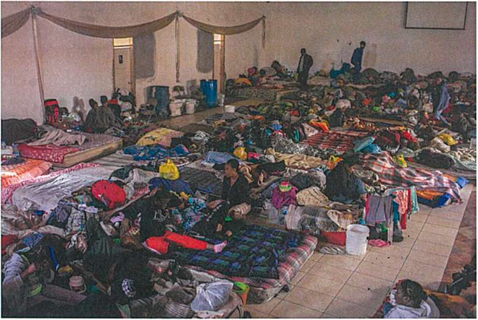

"Eskilti a deja konplè nan blòk an mab, anvan mwen kòmanse travay mwen. Li deja la, mwen jis gen taye lwen materyèl yo initil. "
Michaelangelo
Tradiksyon - oswa nenpòt ki ekri - se tankou polisaj yon Damian, ak chak pas, yon sèl lis sou sifas la ak klere klere la
Mwen travay nan repetisyon. Sa a gen anpil
Jwenn anba a:
(G) sizyèm bouyon ak pi lwen pase: polir. Louvri pou kòmantè piblik la
(F) Senkyèm bouyon. Konpare katriyèm bouyon orijinal Panyòl la
(E) Katriyèm bouyon - bouyon avèg. Panyòl se raman konsilte.
(D) Twazyèm bouyon - ki sa mwen ap travay sou kounye a
(C) Dicey bouyon: tradui byen vit. Minim itilizasyon nan diksyonè.
(B) Premye bouyon: Typing pandan y ap li
(A) Panyòl orijinal la
Vèsè Shenxiu a li:
Kò a se pyebwa bodhi a
Lide a se tankou kanpe yon glas klere la.
Nan tout tan nou dwe fè efò Polonè li
epi yo pa dwe kite pousyè a kolekte.
Huineng te ekri sa a:
Bodhi orijinal pa gen okenn pyebwa.
Iwa a klere tou pa gen okenn kanpe.
Fondamantalman pa gen yon sèl bagay.
Ki kote ka pousyè leve?
“The sculpture is already complete within the marble block, before I start my work. It is already there, I just have to chisel away the superfluous material.”
Michaelangelo
translation -- or any writing -- is like polishing a diamond, with each pass, one smooths out the surface and brightens the shine
I work in repetitions. This contains many
Find below:
(G) Sixth draft and beyond: Polishing. Open for public comment (not yet)
(F) Fifth draft. Compare fourth draft to Spanish original (not yet)
(E) Fourth draft - Blind draft. Spanish is rarely consulted.
(D) Third draft -- Comparing choices with online tools
(C) Second draft: Translating quickly. Minimal usage of dictionary.
(B) First Draft: Typing while reading
(A) Spanish original
Shenxiu's verse read:
The body is the bodhi tree
The mind is like a bright mirror's stand.
At all times we must strive to polish it
and must not let dust collect.
Huineng wrote this:
Bodhi originally has no tree.
The bright mirror also has no stand.
Fundamentally there is not a single thing.
Where could dust arise?
FOURTH DRAFT
SURVIVORS: CITIZENS OF THE WORLD
Pascal Ustin Dubuisson
I, Pascal Ustin Dubuisson, son of Haiti -- a country where success is a challenge, and the right to eat, to educate oneself, and to progress a privilege -- made the decision to leave my country not only for a better future, but also for a safe future. I know that living in a country foreign from mine is not the best option, but it is the right choice.
"As far as you want to reach, as high as you want to climb, everything begins with a single step." In order to reach this previously mentioned goal, I took a grand voyage so that I could make my life worthwhile. The desire to have something better gave me a strength and a determination that permitted me to confront such a great challenge, one that thousands of persons did not survive. This experience has taught me that, in life, if you must dive into the darkness to obtain the light, you should not waver: the best decisions are often the most difficult to take, because they always have grave consequences.
In this book, I share a sad and sorrowful story, through which I am seeking a reader to engage with my experience so they better understand the external world and what it entails: its customs, abuses, racism. In attition, I aspire that the reader will be able to differentiate between the surroundings they inhabit and the dark domain where the naked eye can not penetrate. I hope, in turn, that they understand, as I learned during this voyage, that great opportunities are for those who are attached to their dreams, for those who dare, resist, and never give up
From the moment we depart, all of us who have decided to leave our places of origin live dark, difficult, complicated, uncertain moments and even though making this miserable journey felt like torture, we can still say that we are survivors.
The Republic of Haiti, a Caribbean country, located on the Western side of the island of Hispaniola, adjoining the Dominican Republic, has a surface area of over 10,000 square miles and had a population of over 10 million in 2015. Its political and cultural capital is Port-au-Prince. It was gravely damaged by the January 12 2010 earthquake. Due to climactic conditions, eighty percent of the population lives in poerty. According to The World Factbook (https://www.cia.gov/library/publications/the-world-factbook/geos/ha.html), two-thirds of all Haitians depend on fishing and "the agricultural sector, mainly small-scale subsistence farming, and remain vulnerable to damage from frequent natural disasters. It the first black country to declare its independence, driving out the French empire in 1804. Sadly, life expectancy rarely exceeds 52 years. Only 1 in 150 Haitians receive a salary. Fifty percent of Haitians depend upon remittances received from relatives living abroad. It is a country rich in gastronomy yet ironically its children live in extreme poverty caused by financial insecurity and natural disasters. Its politics are moderate. As far as education goes, Haiti contends with a very intelligent and proud people with few opportunities, which provokes Haitians to migrate to diverse parts of the world with the intention of helping their children better to prepare academically, thus constituting the so-called "diaspora" of Haitians living abroad.
Since the 7.3 magnitude earthquake began at 4:53PM on January 12, 2010, the country has confronted a chaotic situation, with around 300,000 dead: brothers, sisters, fathers, mothers, children, and friends lost their lives in this tragedy, considered a dark day in Haiti.
Some countries came to help, although this led to malicious rumors about who received the aid money. The only thing the Haitian people had to depend upon was God.
Haitians chose Brazil as the first country for seeking asylum and they traveled there in great numbers. Thousands crossed the Dominican Republic, Ecuador and Peru, to be able to reach Brazil with the aspiration of changing their living conditions. From 2010 to 2014, Brazil was ranked among the world's largest economies with its currency, the *real*, worth forty cents to the dollar. Haitians valued this unstable currency even more because they had been so impacted by unemployment. With a salary of a thousand *reales*, Haitians had to pay rent for their families, among other expenses. At the beginning of 2015, everything began to change: the economy contracted after the 2015 World Cup and therefore the Haitians, unfortunately, began to lose their jobs.
Still people hoped the situation would improve and that things could change. However, the currency followed its course of devaluation until the next year.The Haitians saw that the situation was getting worse every moment, so they made the decision to leave the country in search of something better. Their eyes turned towards the United States. Not all Haitians had family members there; nevertheless they decided to leave along with those who had relatives to receive them.
It was possible to live in Brazil, but the duty to help one's family was stronger, so remaining in Brazil and waiting was not an option; rather, one had to look for a better living standard. What we were doing was not going to change all the misery in Haiti, nevertheless the support of ten dollars would make a big difference for our parents. The majority of Haitians who live in Haiti depend on others who relocated to the United States, Brazil, France, Ecuador, Venezuela, etc -- people who had overcome their economic problems, or at least, who were financially stable and no longer had to struggle. Before leaving Brazil, many realized they had to change their nationality from Haitian to that of an African country to be able to transit through certain countries. The first ones who made the trip took charge of giving advice to the others and teaching tricks to avoid deportation. Our families, even though they were not physically present, traveled with us, because thanks to the support and the small financial contributions of each, we were able to take those dangerous roads out of Brazil, to cross Chile, Venezuela, Peru, Ecuador, Colombia, Darien Gap (the roadless jungle between Colombia and Panama), Costa Rica, Nicaragua, Guatemala, Mexico,and the United States of America.
This story has been lived by thousands of citizens of the world searching for a better life in the United States
Most of us Haitians lived in South America, the majority in Brazil. There was no way to calculate how much the voyage would cost. we could not specify an exact amount because everything depended upon the traffickers, better known as the *coyotes.* Peru was situated as the first meeting place for the majority of migrants, who were not only Haitians: there were persons from Senegal, Congo, Ghana, Pakistan, among others. We were speaking different languages and came from different cultures, but we all had the same goal: to reach the United States. This period of coexistence gave us the opportunity to make new friends, allowing us to create a sense of harmony, one that might even be called familiar.
A friend and I left together from a place called Canoas, located in the south of Brazil, it was the exit route for crossing fewer countries.
We traversed Peru in three or four days by bus, passing from city to city in order to cross the border of Ecuador. We were very tired, but with a heart that nourished a great hope. In Peru we felt very uneasy because we were illegal, traveling under a lot of stress, being careful not only around the police but also around thieves who tried to take advantage of us and steal our belongings, even though we used different techniques to safeguard the money we carried from Brazil: some used their shoes, others their deodorants, others soaps and other had their own tricks.
When we arrived in Lima, the capital of Peru, we began to get split up which slowed my group down because we did not want to continue without the others. But not all of us agreed -- most were impatient to advance to the Ecuadorian border. On this border we started to encounter human trafficking, because we were not allowed to cross Ecuador without a visa. Therefore, we had to pay someone to cross this stretch andwe began to contact some coyotes who could help us. These people met us in the hotel where we were staying. One of them assured us that it was going to go well. These confidence men were incredibly at manipulating you. We did not have any confidence in them, but neither did we have any other option. We had to try it.
We knew a great number of Haitians who had tried many times, but they were returned to Peru because they failed. The Ecuadorian police were so strict on that border, so it was hard to cross. This was our first attempt. We did not know how many times we would have to try, because the police were so brutal. It was helpful that many of the coyotes had friends among the customs police. They told us that everything was going to turn out fine: we should leave Peru in the evening. But then the coyote decided that we should cross in the afternoon, because in the evening the authorities watched the border more closely.
Eight of us carried out the voyage, one of them had two cars and a friend of his a motorcycle about a mile and a half in front. He was responsible for communicating with his police friends, who did not yet know us all.
After we entered, he brought us to his wife's house to show us some things which other Haitians, who had previously passed through there, had left behind. In an hour or so, they told us that it was time to leave for the capital. The truck was ready to leave. Most of those who were expected were already inside, only about ten persons were missing. Throughout the trip we worried because we knew what it was like in Ecuador. We did not know how to handle our fear of being caught. We felt very anxious. Nevertheless, we had to trust.
Every day one confronted one's own fears, one's own dreads, one's own insecurities. One thing that fear can do is paralyze you. Conquering fear was not easy for us. In the movie “Rocky”, the main character said that fear is a fire inside of you: if you control it you stay hot to continue fighting, but if you do not control it, it will spread and devour you. That much is certain. This is why we were forced to control each emotion. It seemed that each time a new one rose up in us, we had to fight it.
Many of us consider ourselves brave men. Here, in this forced adventure, we discovered unfamiliar feelings we had to confront so that we could continue.
Everything was calm the night of the voyage. There were no setbacks in the road. The night was very long for us. No one could sleep. When we arrived in Quito, the capital, we saw a hundred migrants who had departed from many different parts of the world. The group I came with and I did not want to wait around, knowing that we did had no authorization. We stopped a taxi to ask the driver to bring us to the border with Columbia. He told us that this was illegal; nevertheless, he recommended a friend who could take us
There were many coyotes in each city we crossed. They benefited the most from earnings received from people like us. They were pleased to help us with economic problems, not because their hearts were overflowing with altruism. They convinced us with stories to wheedle more money out of us. For example, they told us that the police would take our money, and they frightened us by threatening us with harm. This was just a way of forcing us to pay more.
When we took the taxi to the Tulcán border to commence the next adventure in earnest, the driver knew where and how to get there quickly to avoid the police. It was inevitable that we would encounter one and so it was: on the road we encountered the police. They stopped us. The driver had told us to speak French with them, because if not, they were going to return us to Peru, and we were already close to Columbia. And when the police arrived, they asked the driver why license plates had different digits than those close to the border. The driver told them that he had only come up there to bring French people to Columbia.
The police asked for our papers. We acted as if we did not know how to speak Spanish, so we spoke French and offered the officers some money so that we could leave. Fortunately, nobody was watching. They accepted it and allowed us to continue.
Barely in Peru, so many people were already so depleted. They could find nowhere better to rest than a bus terminal.
This phase was very complicated because we knew that if we returned to Ecuador, it would only waste our time and money, and we were only six hours away from Columbia. On the road, we stopped many times but fortunately there were no police in sight. When we were close to the border, the driver told us he could not take us further due to increased police presence.
He let us out of the taxi and told us that we had to look for a way to continue. There were many people waiting there. When we reached the border, it was all very strange we were very stressed. Our stess went up and we endured many bad feelings.
In life you have two options: 1) go to bed and dream or 2) get up from your bed to realize your dreams. And that is what I did. Your humble server took root in Brazil, where he worked in a restaurant as a waiter from midnight until to 7 AM, a job that paid 1300 reales a month. I come from Haiti. I was born in Port-au-Prince within a dysfunctional family, formed only by my mother, a sister and a brother. By twist of fate, we separated and I was raised my grandmother who died when I was twenty years old. When I was twenty-three, after staying around for only three years, I decided to leave for Brazil to find my luck.
According to Wikipedia, the border between Brazil and Columbia is a continuous 1,021.7 mile international boundary that completely delimits it. The borderline crosses 502.6 miles of river and canals, and 380.3 miles of conventional borders, and 138.7 miles of waterways. (https://es.wikipedia.org/wiki/Frontera_entre_Brasil_y_Colombia, accessed September 1, 2017)
Several months before entering Columbia we had to pay a lot of money to cross the border. We spent between 300 and 500 dollars each. The government of Columbia was one of the governments that, seeing the arrival of so many foreigners from different nations, took the opportunity to offer us an entry document that permitted us to stay in the country for twenty-two days or even up to a month. However, at that moment the men could not cross. Only pregnant women and children had this right, and could cross the border without a problem. All the rest were condemned to cross over a hill. This hill was like a cave of thieves, so much so that each family that lived there had a firearm as personal protection for themselves, for whatever emergency. This was their way of taking care of themselves. because the police had withdrawn so far from this village.
THIRD DRAFT
Crossing the hill took us about four hours, it was so long. Some Colombians had good hearts -- even thought the citizens had to defend themselves from invaders, without even knowing us they tried to help us to cross with their carts , but it was in vain because the hill was too steep (PESADA?) and the carts could not climb it. They, in order to help out the migrants, thought up a way to put people underneath the trucks, or to put bags of trash or rice on top of individuals, but it was useless. They were found out.
Seeing what was happening, we all had a meeting to make a decision about what would be beneficial to our power to arrive
There was not much to think about, we only had one road to follow, the dangerous one -- where, to start, you had to pay ten dollars to the Colombian who was in charge. And so it was. Unfortunately, we believed that this would be the only payment we would have to give, but no, on this road we had to pay for everything, most unjustly, you pay for necessary things such as sitting down, drinking water, going to the bathroom, resting.
Those abusive Colombians had mentioned to us that they knew that the migrants were rich, that without money, you could not cross ten countries to reach the border of Tijuana. In a few words, if we did not have a lot of money to begin with, we could not have left the place where we came from. Nothing is more wrong that this thought.
As happens to all human beings in an unknown situation, suspicion surges within us; nevertheless we do not show it. Haitians are very tough and foolish people. We have a gene that define us as strong, and not weak, in the face of adversity, even our skin can resist the environment-- we can endure the pain.
Luckily, this hill was not really a great obstacle. We knew beforehand what awaited us, but my race is very communicative and all our acquaintances who had already made the journey had told us how and where and what we were going to have to pass through. That is exactly how we knew the roads, from the information which they gave us and we knew perfectly that nothing would be more dangerous and difficult than passing the Darien Gap jungle in Panama. There we would encounter truly different challenges
It was a place where the we would have to pass through, without question, and where we knew that most of us would confront their strengths and weaknesses, their securities and insecurities. It was the place where undoubtedly we would come to regret that we had left our apparent comfort
Already signed up for the journey, I delayed the group because I was unable to walk because the climb was too very broad, (ANCHA? WHY?) complicated and tangled. I did not expect that this road would be was so exhausting and tortuous. Even thought I was young, I felt like my lungs were going to explode.
I was never an athlete, so I was not in good shape and, at that moment, my physique could no longer take it, I thought I could not continue any longer.
In the distance we could see several persons, so very far away that we could not call them. Although they would not have been able to hear us and, moreover, we could not yell because we were out of breath The only thing that would happen is that we would wear out our last strength and would be unable to restore them because we had no water. We had for gotten how long the road was going to be. We felt cheated and angry because the guides -- maybe not to frighten us, we don't know, or through simple malevolence (incompetence?) -- lied to us, telling us that we would walk for about twenty minutes. Suddenly, they stopped us. The “coyotes” did not want to advance because there were police ahead. They abandoned us in the middle of nowhere, hungry and thirsty, shamelessly, without an iota of kindness, telling us that we would have to continue alone.
The path we followed was tortuous. The time came when we believed that the coyotes had prepared a trap for us and that at any moment, they would turn us over to thieves to take from us the little that we had. Emotions shook like a wheel of fortune with incredible velocity. We thought thousands of things, among them all the ways we could die alone, in an unknown place, where nobody would come to us to give us a decent burial, because it would be hard for our families to find us.
We thought about all of the possible accidents which could befall us to which we had no way to respond Being in a moment of that nature, where uncertainty and confusion press down, made us unhappy with everyone. However, despite everything our own demons were telling us, nothing like that happened. Thank God.
After a moment, we saw a truck. The sense of happiness we had was like when a child celebrates his first birthday and feels amazed with everything he sees. Well, it was with this capacity for amazement that life returned to our bodies. We approached the driver and asked him if he could bring us bring us to the way out, he informed us that the exit was very far away. He kindly told us that we should wait for his return ad then he would take us to the main road. We thought for some seconds and reacted like when a child opens their gift and it is not what they wanted. We decided at that moment to move from there because the road was neither very nice nor trustworthy
Fortunately, after forty minutes walking, the van returned carrying many potatoes and the driver told us that we could get on. In this way we arrived to the main road. Imagine that we paid the “coyotes” for taking across a road for six hours when they did not walk for even a single hour. They received in total more than 120 dollars for each one of us and spent forty minutes with us.
When we arrived at the main road, the driver told us that he could not take us far due to the military, and that he did not want to get in trouble. We understood. It makes sense. Who wants to ride with illegal migrants in their car and go to prison or be punished for an act of compassion? So we got off and took a taxi to take us to the migration office. The offices were very close to the border; nevertheless, we could not get there directly. For that we had to climb a hill, almost six hours to cross. By the time we arrived at the migration office, we learned that the line was very long. We needed to have a lot of patience if we wanted to get the paper that would allow us to cross our country
Despair was something that affected us day after day seeing that you are on the road for months and still cannot get to the place where you want to go. Sometimes you do not even want to talk to your family to tell them how the situation is, you prefer to hide the information because of the shame you felt
We rested and watched other people who were arriving on the same road, but they did not have the same luck as us. They told us that thieves had come after them on the road, taking their money and valuables. It was understandable that they came to cry, because what they went through was so terrible We all knew that, at any moment the same thing could happen to us, that is, to put it coldly, that there could be more tears. USTIN: DON'T THINK I GOT IT RIGHT. WHAT IS THE COLD REALIZATION? MORE TEARS? NO TEARS?
Migration gave us a visa document for thirty days, but there were so many people that day so the government divided us up into different cities. After a long day, without eating anything, some of us thought we should spend the night at the border because the transit buses were downtown, but nobody wanted to stay with us. Because of this, we took a taxi to bring us to the bus terminal and paid for a van to Medellin, with the intention to processing the document for crossing the country. Then, the border officer provided us a paper that would permit us to travel to Medellin
On the road, when we had almost arrived, we ran into a group of soldiers, two of them were inspecting our luggage outside and the other two asked us if we had papers. They did not really care about the papers. They ordered nobody to get off the truck. The told us to take off our shoes to verify that we were not carrying drugs and two of the soldiers who were below took the shoes, money, whatever they wanted Nevertheless, we Haitians were already prepared for this, with our money hidden inside deodorants, inside soaps, in different places throughout our belongings and our bodies.
After taking everything that they could, they asked us to calm down so that the trip could continue. We saw no legal reason why they had detained us, we only saw the injustice of their work We had thought, innocently, that they were there to help, but no, theft was part of their job, part of the illicit enrichment of the military. During this year of migration, they were definitely doing very well. Our courage and helplessness did not end here. (WHY COURAGE and HELPLESSNESS?) When the van continued, a gentleman looked inside his shoes and did not see his money. He cried a lot, a truly exaggerated and very strong cry. This made the others angry We were all under pressure.
This man maintained us that his money was in his shoes and we began to have doubts because there were so many Colombians in the bus who told us that those policemen were pure thieves. We knew our rights and we should have gone to a police station to file a complaint, but we did not have any status in the country and we were too afraid because we thought they were to deport us if we went.
It came as a surprise and a regret that we got so angry with this gentleman for crying because when we arrived at the city and got out of the van to open our backpacks, we realized that, in some very skilled and perverse manner, they had robbed many of us of money, clothes, shoes. Immediately, those affected us began to cry and quickly tried to make a barrier to stop the bus, but the result was useless.
My friends and I had another way to hide the money, so this time we were not affected as they were were Nevertheless, I was sincerely very sad to see my How could they continue without money? fellow travel suffer. Through our good or bad luck, we could continue and so we did.
At the same time, we were also annoyed with them, because even though they knew what we would be exposed to, to the abuse of the authorities, they not take proper precautions. We discussed with them that it was possible to put their valuables in their backpacks and not in their wallet, where the police are not authorized to put their hands. After this bad experience, we took a taxi to the migration office. When we arrived, he had to wait a moment for them to speak with us about the document they were going to issue.
With all that we had lived in such a short time, we hoped and blessed God, thanks to whom there still exists good people who do not mind if they are criticized or cursed who give food to whomever needs it, and we needed it because we were dying of hunger and thirst. God was showing us his care through these people who did not know who we were nor where we came from, who might not speak our language, but who let themselves be guided by What in order to give what little they had to the migrants. With such luck we recharged the batteries to be able to continue with what we lacked.
Although we expected the immigration officers to see us, they did not receive us. The authorities told us that we had to return very early the next day and also offered us to stay in the country, saying that they were going to give us many opportunities. However, nobody wanted to remain in Columbia. It was to early to make a decision like this. The goal of reaching in Columbia was to have that official stamp that would allow us to cross the country to enter Panama. There was no time to rest. In this way, and with a bit of encouragement, we went directly to the bus terminal to buy a ticket which brought us to the next city, Medellin.
While we were in the bus to go to Medellin, we took more precautions due to our experiences on the previous trips The bus drivers seemed to receive a commission from the restaurants where they brought us, because they were very expensive restaurants and they stopped there every time. We wanted to save our money, so we did not enter , only bought whatever minimal thing needed for survival. Half of us ate, half of us drank, and half of us slept.
We reached the city of Medellin at night and went straight to the bus terminal to leave for Turbo, the last city before entering the terrible Darien Gap. Turbo is one of the cities where we felt like we were in Haiti because its population is dark-skinned Here they did not look at us like some exotic creature or some freak. We felt at home, because we did not look like foreigners, we were all the same Some of the Haitians who came to this town did not stop to rest, but instead took a boat right away to Darien Gap. Error. For this lack of reasoning and wisdom many wound up dead or sick due to physical fatigue, and had to return to their place of origin.
Everyone knows that the jungle is a dangerous, deadly place, where you must walk a great deal and must guard yourself against multiple dangers However, many did not heed the warnings of our brothers who had already crossed through there. In order to enter the jungle, one must first rest so that you will be at 100 percent, because the Tapon del Darien, also known in English as the Darien Gap, is the swamp-filled jungle, located on the edge between Central America (Panama) and South America (Columbia). This area is still as wild as in the time of the Conquest. Only that now it is ravaged by armed groups, assaults are the order of the day and women are raped, while tropical illnesses like dengue or malaria are at the door. What this means that it is not pleasant to walk through there
If it not I am mistaken, one has to cross one hundred miles. My group and I, using our common sense, decided to stay three days in Turbo in order to feed ourselves well and to regain our strength, resting so that we would be able to continue.
We were not ignorant of the place's dangers. We knew beforehand that, if we were not aware, would were not going to survive and as a result that we would not be able to reach our next destination: Panama. We heeded the advice of our friends who had already made the journey. They explained to us that we would have to be patient about leaving. If not, we were not going to get out of there alive, due to the manifold threats
We followed the advice and went to look for a hotel. We were thirteen Haitians in search of a place to rest. Some persons opened their houses and rented us some rooms. The people were very kind to host us because the hotels were very expensive. Although we found some cheap ones, but they did not have a television, and we were looking, not only to rest, but also for some distraction. At night, we had a meeting to plan the voyage. We all had to share what money we had in order to buy food, water, and personal items.
The next morning we divided up into groups, each one of us with our own task to do. We had to go to the market. The day was too hot. It was a Saturday and we felt exhausted by so much heat. When we returned, we made a lot of food, joked around, drank a beer and at night, we went to sleep early. These moments were pleasant because they made us forget the suffering which we had gone through.
Sunday was a special day because we laughed as much as we could, from the morning to night, and so we spent the day, distracting ourselves. Monday was the day to leave. We went early to buy tickets and some boots, in order to be able to cross the mud which we knew we would have to cross, because it rains every day in the jungle. We prepared our backpacks and necessities; the departure time was ten in the morning, the longboat would leave at this time and it was not going to wait for us. This longboat was a legal form of transportation , under the control of the Navy. It transported people to Turbo in order to buy shellfish. We were forty persons, mostly Haitians and Cubans, in the longboat. We all put on life jackets to prevent any possible accident. The trip lasted two hours
There is not a living being who does not feel afraid when confronted by danger; courage grows from confronting it and acting brave. In this moment, our strength was our family and what we could offer them in the future. That is what motivated us to continue.
We had no aim in mind other than making money When I saw the sea and the reefs, I thought that I was crazy, because I was endangering my life in this voyage, and I asked myself whether it was worth the pain to endanger myself like this.
The sea was so rough that even the man who thought himself strongest broke down from the fear provoked by sailing in these waters. It was a terrible sensation. Your heart beat speeds up. Your blood pressure goes up and down. Thoughts began to play with us again. Suddenly it came to mind that it would be better to lay down in the river and end everything. The truth is, if you did not control your mind you would wind up crazy. You needed a lot of mental strength to not go insane. But thank God we left those stormy waters alive.
It was a pleasure for everyone to go see their friends who were sailing in this little boat. Around 40 persons were in each boat. This was the beginning of an adventure into the great and deep Darien Gap
We were all afraid to start this journey. However, we had to use the fear which ran through our bodies defensively and to continue despite everything. This did not prevent us from continuing to dream hopefully about reaching our final destination, independently of our current situation
For us, Darien Gap was the most horrible part of the game; we tried to be cautious and to take the things calmly if we wanted to remain alive. We knew that we were going to walk for several days through a very risky place. When we reached the beach shore, we met many Colombians who were waiting for us to guide us on the way to Panama. My group was overloaded with several suitcases and food, while other groups, by luck of the draw, brought barely anything. The guide took me and my group to the front due to all the things which we brought.
Before taking the way through the forest, everyone must give their paper to the officials when they arrive to validate their voyage into the jungle -- the way to erase the evidence that you are going through these places, in case that you stay in the forest.
This road was filled with women from different nations. There were also strong women, as many as the men!
During our first hours on the road, everyone began to converse about how to calm down, but fearfully. There were good and bad parts of knowing about this journey from other people. we were already in a state of anticipation because we already know the place's dangers. Walking was difficult because not all of us had the physical constitution to keep up of the guides, and at the time, neither could we abandon those left behind. since they were vulnerable people, such as women, some of whom were pregnant and had kids; The only one option was to wait for them to line up with the group and then to walk all together. We crossed the first mountain in an hour and, when we reached the peak, we saw a gorgeous landscape: there were cows, donkeys, horses. We asked ourselves how they could have gotten there, thus there was no way could have gotten there themselves; (???) there were not even houses
We could appreciate a very calm river everything seemed to be fine. Apparently, the guides knew to where to take us and had everything planned As a thing irregular and outside of all logic, we came to rest in a place in the jungle where there were tents, music, and beer. It appeared like a place for a party, for it was already six in the afternoon. We were very estranged by the panorama we saw, but at the end of the story, it was their business. We tried to have fun in this place, but unfortunately the prices of things were very inflated. Sadly, they abused migrants: this was the only place where one could get something to eat or drink. A simple bottle of water could cost up to two dollars, if not more. They mistakenly believed that we were carried rolls of bills
The group consisted of one hundred persons. We decided to camp out for the night. It was no five star hotel. We were in the outdoors, so some women left to cut wood for cooking and the men, enjoying the brothel that was a few steps away to go drinking and dancing I joined them and we went to "have fun." Incredibly, after what we had lived through, in the midst of this environment, we could be distracted momentarily. When the meal was ready, we all sat in a circle for dinner, Afterwards we went to sleep and allowed the night to pass. That same night, the guides tried to prepare us psychologically, telling us that the first days would be the most difficult. It seemed like they were unaware that we were in contact with people who who had already passed through this terrain.
Again we were waiting with anticipation. It is obvious: who is not afraid of the unknown? But at least I was not inclined to give up and go back. Once you start a project in your life, you must use all of your energies to finish it, even if you do not have any. You do it because you do it. Only one thing can make your dream impossible: giving up
The rain started at ten at night and we did not have any way to cover ourselves. It was very terrible for us because we were not in a protected area. We tried, as much as possible, to cover the children who were our priority. We covered them with plastics, backpacks, and so on. It was raining every day and it was going to continue, because that is the climate of the jungle. Due to the rain, the mountains became unsafe because anyone could suffer an accident on the wet slippery ground.
Because of the prevailing weather, many were desperate to return, which by then was no longer possible. With such luck , they had to take strength where they could because we were warned that once we started, we could not return. It is like gambling: you risk it for all or nothing That was our reality. With all the sorrow, the cold, the exhaustion, the wet food, the wet clothes, it was impossible not to regret of having left our place of origin.
At five in the morning, we prepared to continue through the Darien Gap. The guides were grumpy, bitter, angry people; it could even be said that they were inhuman. They had no patience to wait for anyone, they told us that we would start to travel at six in the morning. They spoke with us to warn us that we were going to cross a mountain that would take eighth hours to cross and that we should not even think about touching any tree or plant, because they could be very dangerous for us, even deadly. The plants were filled with thorns, we could not support ourselves or rest on any of them. The animal which we had to watch out for was the cobra, because they were abundant here. There was no possibility of staying somewhere along the path. WE had to travel non-stop until the end, due to how many savage animals we could face. Therefore, we had to continue walking until we reached the other side of the mountain before it grew dark. That was the plan.
Often, in the afternoon, when we were tired of walking, we rested, and the women prepared the food.
Due to the rain of the night before, our bodies were wet, tired and sleepless. We did not know how we were going to be able to continue like this. Nevertheless, we prepared to leave and as soon as we could, we prayed or invoked, (REZAR / ORAR) in all different ways according to our faiths. Our trust was in God because he could sustain us on the road.
I just observed people and realized that many were traveling alone, without friends or family members. Although there were times in which one -- according to his interests, even if he did not want to -- thought selfishly about continuing without going back. I am not going to say there were not moments during which we all needed each other, and it was clear that we would help each other and we felt that it was out of the place to try to ignore totally the situation of the other.
AWK ABOVE!!!
After five hours of travel, we asked the guides to allow us to rest; the children were already exhausted and our pace was sluggish because the ground was wet and that made it more difficult. We were able to rest for only fifteen minutes, because we only had eight hours to cross. The mountain was the border of Columbia, the jungle was located between Colombia and Panama and that day's objective was to complete the mountain crossing and to reach the border of Panama.
After those Five hours of travel, we realized that we were not the only ones on the road. It touched me to see the people crying desperately, asking themselves how they are going to continue -- people who already gotten further ahead. The mountain was very steep, it was impossible to see the peak. My friend and I rested between fifteen and thirty minutes. We were confident that we could reach it, because compared to the women and the children, we were in better shape. them, thus buying us with the women and the children, we would have a better condition
The men took the responsibilities for carrying all the suitcases so that the children and the women would be free as the air, with the goal that they would not delay the group
On this mountain we saw death, impatience, desperation, agony. However, it strengthened the faith of believers. During this journey the strongest men helped the women, the children and the men who were vulnerable That day more than one hundred people crossed by the mountain range.
Emotions and heart palpitations were very strong due to all the pressure and the stress. At that time, we were close to the peak, but at the same time, the traffickers informed us that we were still six hours away. We did not have the option of camping in the jungle, so they asked us to hurry up our walking or running. Without wasting time, my group and I followed the directions as well as we could. It was just at that moment that I felt the most defenseless, fragile, lost in cruel and very unstable thoughts that came and went For good reason, you worry that you might never see your family or your friends again. Inside myself, I battled with my own demons. I told myself that at any moment a wild animal would jump on top of us, because each howl sounded nearby and at the same time very far away. I did not know if you have ever been to the jungle, but it was hard to hear those roars and to think that everything would be fine.
The sounds were varied, of all types of animals, so many that we could not identify them The sounds were so very loud that I guessed they were lions, tigers, jaguars, spider monkeys, pumas, or, well, the triumphal entrance of a cobra.
The lower part is a mountain range that took us six hours to climb
Here is just when you pause and you start thinking about the importance of the things that you posses. In this instant we were all carrying money, but we could understand that it would have no value there. We had moved from our apparent stability -- in my case, from Brazil, where I thought a lot about blessed money, giving it significant value, and now money was not worst anything. What good was it to have money and to not use it? What good was it if you could die? The Bible says that the root of all evil is the love of money. Well in my case it was. I traveled the world looking for dollars and just for dollars I could die. How ironic and cruel.
There is a character named Don Ramon, from the famous Mexican television series "El Chavo Del Ocho" (The 8 Year Old Kid) who said very assertively "I might not have a single peso in my bag but I have a smile on my face, which is worth more than all the money in the world." How I longed to have a smile that is worth gold How difficult it is to give things their true value and to learn to value them differently based on your experience This could be an advantage, depending on how you see it.
We were going as fast as we could With my feet exhausted and powerless due to such a tortuous road, I carried my bag on my shoulders, thinking only about how this would all end. By the time we reached the foot of mountain top seven hours had already passed. It was the Panamanian part of the Darien Gap. After thirty minutes of walking on the foot of mountain, we began to hear many more noises. We thought that, fortunately, they were Panamanians, but no, they were also migrants like us, Cubans, who informed us that we were about to arrive at a shelter, the first in Panama.
When we arrived at the shelter was in bad condition: the earth was damp and covered with a lot of stones.
There we met the people from Ghana and other parts of Africa, Cuba, Pakistan, Brazil, Haiti, and many other countries.
Before entering we were asked us to make a line to get a number, which would as our registration and our exit pass. There were many people ahead of us. This wore down our patience, even though we honestly did not have any. I got the number 328. It was terrible to have to wait so long. They called 50, 80, or 100 persons a day, but not every day. The situation was very depressing and hopeless. Because we did not have freedom of movement, everything we thought about doing we had to inform the soldiers, who were the ones who decided how best to manage the place That is, strict and rigorous control was evident.
After they gave me my number, I took time to reflect upon the people who stayed behind. It was not possible for us, as much as we tried, to all come together. I was worried about a friend from Brazil who came with me. He made the decision to stay with two women who were brought a girl. It was a very altruistic act, disinterested on his part, for which I admire and respect him.
At around eight in the evening we began to see people arriving at the shelter. It made me so happy to see my friend come in. Although it broke my heart to see him arrive in tears along the other people because they could not believe that they had made it. Who would not feel terrified of staying alone in the jungle, without protection. It makes sense that you would get emotionally overwhelmed with joyfulness and gratefulness for getting out alive.
The soldiers were in charge of giving us rice and oil so that we ourselves could make our food, because we had left in the road the food that we had brought. This was not so disagreeable; it was not a normal meal, but it was enough to alleviate the hunger.
The first shelter in Panama. This place was fit for pigs
Those moments were irritating, annoying, because there was no place to sleep. You yourself had to come and make your tent on the damp group and on the rocks It was atrocious. Because not only was the weather cold, you could not hide yourself from the rain. The suffering continued. When everyone was looking for a place to set up camp, the soldiers began to shoot bullets in the air so that the wild animals would not approach us. , the purpose being to scare them away. The climate of the jungle is tropical –- rainy; As soon as evening approaches, the rain comes. This is why nobody is able to sleep, because the tends we made for shelter were made of cloth or calico (MANTA) and functioned only to cover us from the sun.
Obviously the children began to cry but this was the least of our problems; the real problem was that some savage beast could devour us. Therefore, in this situation, we had to put our trust in the soldiers who were stayed to guard. The night seemed endless.
We assumed that, sadly, there were still persons who had remained in the jungle. Wherever they were, their situation was unpleasant. I could not imagine how they were doing. In the morning we began to see some of them arriving. They came with many injuries to their heads, torsos, hands and legs. Despite this, they were happy to find a place where they could, apparently, rest. We only helped them out with setting up their tents, but they were extremely exhausted.
When we came to this site, we had to get something to eat before it started raining. That was the situation.
In the morning, the only thing we were waiting for was for them to start calling the numbers that could leave that day, which made us impatient. As I already knew that my number was going to take a while to be called, I stayed with my friends, chatting, watching the exit route beforehand and not waiting for our turn. We observed and observed and observed. As a first option, many Haitians began to offer things of value to the soldiers; everything they could: tennis shoes, shirts, bracelets, necklaces, rings and money, anything that might allow them to leave, even at nighttime
My friends and I were smarter. We looked for a pen and paper of the same color with which they wrote the numbers. We made twenty numbers and we tried to use them. We did a first trial run, writing out five numbers for five friends, with the result that they got called and exited that day. Thanks God the soldiers called one hundred person persons that day and those five numbers entered. Thus we confidently declared: we will leave tomorrow!
The day was very slow, very heavy, very tough. As you can imagine the ground was not comfortable at all.
At night, a Haitian invited me to go me with him. because he had very daringly paid a soldier to let him go beforehand. It was a tempting offer. However, thinking carefully about it, I told him no, that I would rather wait for the number that I myself had made Everyone knows that traveling at night is extremely dangerous, completely unsafe, due to the kinds of animals that one could encounter. Yet he did go. This was an example of why we should not give into our impatience, because this was a very bad decision.
At the same time, I saw a group of Haitians who were yelling very loudly, who shouted that there was a lion. That was when we all started to run. No matter if you had a children or wife by your side, what mattered was saving oneself. Women left their children behind and husbands left their wives behind in order to save their own lives. Everyone started running, screaming, crying out to God or to whomever they believed in. The soldiers began shoot bullets into the air in order to frighten the lion.
After this scare, I saw a friend who had fallen and hurt himself on the way. Suddenly, blood began to flow from his mouth Along with him was an 8-month pregnant woman who was also injured. They were not the only ones. Many people got hurt and needed medical attention. Luckily, they were transferred to another shelter which had helicopters that brought them to the city to be taken care of
Those nights were very long and you spent them without sleeping, just thinking that something might happen. It was best to keep your eyes wide open, for anything.
On was the second night, early, after eating something, the soldiers began to call the numbers. This day they had a list of 120. Thank God, my friends and I passed with the numbers that we had made. We were happy for our great accomplishment and because we were not discovered.
We needed to walk 45 minutes to reach another shelter. The soldiers told us to walk at the same pace as the slow people so that we could all reach the second jungle shelter together without any problems
We 120 people began to hike to this place, better than the previous one, due to the ground was in better shape, at least water wasn't pouring all over where we were staying. Our journey was relatively quick. We thought that were going to see houses, cars, other people around here, but no we didn't. Our patience became exhausted and we thought that we had arrived at a community, but nothing could be more wrong; this period was much longer than we thought.
(I DON'T UNDERSTAND THIS PARAGRAPH)
When we arrived at this shelter, they organized us into groups of four to put up tents where we would stay while we were there. We made the tents with tree leaves, which would only serve to cover us from the sun As we arrived early, they gave us time to cook; it was the same: rice with oil, river water and salt.
The numbering system was the same as before, but with a little bit of skill and cleverness we would be able to leave early. We knew beforehand that, if we could not forge numbers, then we could bribe some soldier discretely. By the same token, that night they called some of us to continue on the way, because we had paid them for the favor. Payment was not necessarily money, but anything of value, as I have already explained. You could give fifteen dollars or you could give your sneakers, your dress shoes, or whatever else you could. Unfortunately it was not possible to forge numbers in this place because they were not written with a pen on paper, but instead with a marker on a carton.
This was often our food: a mix of rice with noodles, salt, and water
This location could count on a helicopter to transfer sick people or pregnant women or women with children, in case it was necessary. On any given day, there could be two departures or sometimes none like on the weekends, when there were no flights. Here the waiting time was uncertain, we had no choice but to try to arm ourselves with a lot of patience because the waiting times could be long.
They let us sleep in the forest without any type of hope We had no right to make a decision. Our words had no value. We were punished very often.
Unfortunately, because we were men we were not allowed to travel in the helicopter, due to the prevailing idea of masculinity, a mistaken one, as a strong and enduring (stable? -- i think it has to do with medical, so find a different word), but under these circumstances both sexes underwent the same deprivation, the same needs, the same adversities, and we all found that it was enough to make you cry. Crying allowed us to express our pain. We also grew tired, we also got weaker, we also broke down. Under so much pressure there was no manliness to take care of. (???) What we felt we expressed through tears. However, I imagine that, if any of us were in a grave state, (had a serious condition? no because also injuries? WEAK) they would indeed use the helicopter for humanitarian reasons
We continued walking and they told us that the quickest way to leave was to construct an improvised boat, which they -- the soldiers -- would put to sea. With force or without, with hunger or with thirst; they indicated who was going to build it I supposed let themselves get carried away with what they saw in us.
(CONFUSING LAST SENTENCE)
Right away my friends and I hatched a plan. We began to investigate who among us had markers and who could acquire a carton, thus that we could go back to forging the numbers so that we could leave before the group that we came with We did all this in secret, very privately, because, if we didn't, the others would ask us for a number and we would be found out.
That afternoon the soldiers organized a swimming competition. People of all nations entered the competition: Cubans, Nepalese, Haitians, Africans, etc. Whoever knew how to swim could defend their country. This game was an very ingenious and recreational activity(AWK) that made us forget momentarily where were. For those instants, we thought that we were real a community, in the midst of a reality that wasn't ours.
The Panamanian soldiers won the competition, with their physical condition and their adaptation to the environment. Also they were not as tired as us. These moments of distraction were very satisfying
This night it rained very hard, We thought that the soldiers would stay with us to guard us but it wasn't so: they left the place There was not as much danger as in the previous shelter. A group was escaped in secret because they felt like they were free There were no soldiers around so they took to the road. However, one of them was in for a surprise While a soldier was doing his business a considerable distance away, he encountered the Haitian and beat him brutally. Very savagely, he handcuffed him and put his head in a bucket of water In addition the brutal beating, they tied him to the tree so that we could see him there the next day.
This made us all very angry and we began to fight and argue. Our defense was that we were not slaves or prisoners who deserved to be treated this way. After this we warned them that if they did not let us cross we would go by ourselves, and that, because they did not appear to have the power to shoot us, we were not going to stop. Therefore, the soldiers considered our words because we outnumbered there them and very intelligently, to calm us down, they began to call over one hundred person every two days.
As I have mentioned before, we were from different countries and each group looked after its own well being and sought its own ways to cross before their turn. We learned that the Cubans and the Nepalese were organizing to escape in boats that had been built in agreement with the soldiers Thus, we watched all night to make sure this would not happen and to stop them if they thought of getting away.
(WHY WOULD YOU CARE IF THEY SNUCK OUT?)
In the other place that awaited was that the one was authorized the number of people who could cross. It was supposed to be one hundred, but the soldiers announced only eighty so that they could sell the other twenty. The Haitians were very aware of the situation and, despite the tricks which we played to advance our own destiny, in this case we asked that the exits be fair.
The plan which the soldiers were executing was a failure because it did not work out as they thought. Among the hundred who asked were more Haitians than Cubans or Nepalese They outnumbered them They did not allow the hundred people to pass, only the hundred people who built the boats were allowed to cross, which was around eighty Nevertheless, we took the opportunity to cross with them.
They left us in the rafts and the only thing we knew was that we should follow the river. Here it was impossible to ask someone for information because no one could answer. The indication was to continue; the only thing that we had to guide us was our instincts, to continue until we reached solid earth and to look for where we midget find an indigenous tribe. Before leaving, the soldiers gave us some recommendations; they told us that we should follow the river until we got to a stop and that we should wait there for one or two days. Since we no longer had food, they took care of giving us energetic drinks and cookies.
Everybody was happy to leave, but we did not know what we were going to face In our group there were many children, and we thought selfishly of leaving beforehand and moving quickly, but we did not do it because we knew that these women and their children needed our help.
During this journey, I observed people's faces, faces that reflected sadness, despair, depression, fear, insecurity, uncertainty; it was very disturbing to see that panorama. At dawn, we decided to leave at eight in the morning. It was a sunny day, but because there was so much foliage, it seemed to better to do so at night. It was not a river that flowed calmly, it was much more turbulent that which we could possibly imagine The current was so strong.
A rest in groups, independently of the company. The Nepalese were more afraid than the others; despite this, they were fraternizing with the different peoples
There was a funereal silence. Whatever sound was very noticeable and disturbing. Each one of us was lost in their own thoughts, maybe some cried out to god, others thought of their families or if they would get out alive of these apparently endless waters. It was not possible to estimate how much time we would spend on the river or whether we could emerge unscathed. We were very surprised and encouraged able to see that people who had passed here before had taken the time to make marks on the path. On some branches hung clothing or sticks were outfitted with clothing to tell us which way to go. This brought our souls back to our the bodies.
The river was endless, and because there were many children with us, we stopped at two in the afternoon and decided to take a short rest at the foot of the mountain, to be able to continue our voyage afterwards We arrive on the other side around five in the afternoon. FORGOT TO DO THIRD DRAFT HERE ALERT MITCHELL Fortunately, some women brought some food with them and started to recollect that there have been that which in times primitives, when all share the alimentation. Here we were as we could eat all the afternoon
We decided to rest and sleep there. Suddenly we began to perceive a fetid odor, we did not know from where. Two two minutes from the mountain stood a hut that had been built -- I imagine -- by some group that had crossed before. It didn't matter, we did not get close to it. It was about ten in the evening; some of us decided to sleep on the riverbank and others a bit further away, but suddenly a storm came and none of us moved from where we were, because there was no way to avoid being drenched with water. We began to hear the river get louder than we had heard before on this journey and we realized that the water level was rising This is when the women with their children began to run rapidly because we did not know whether the water level was going to rise or how far it might ascend. Seeing women trying to climb the mountain to protect their children was a desperate scene, but they could not walk because the mud did not allow them to and when they tried to they fell to the ground with their kids. I will never forget those faces of terror, fear, and frustration. Everyone began to cry out to God with desperate screams, crying just like the children did It hurt to see them so defenseless, without being able to express what they really felt. You could not tell them that nothing was going to happen because they were seeing all of it. These are the sorts of things which, although they might be forgotten overtime, will still arise inside as inexplicable terrors.
We remembered that the soldiers had told us that our destination was a day or a day and a half away, and we had traveled barely a day. So we tried to calm ourselves down, relax and to breathe with the hope that we would be able to rest in another half day. However, with the storm and the rising of the river came the doubt as to whether this half day would become a full day more. The storm stopped around one in the morning; the men were protecting and watching the river go down. Around three in the morning, the water level went down, although not to the level it had been before. We noticed that the the river was flowing with a lot of dirty water, preventing us from knowing its depth or where we could safely step.
The women who had climbed the mountain to protect themselves from the river descended to sleep on the shore once the water level had subsided. At four, we went to sleep. At six we began to prepare to cross it and to start our way towards our new unknown destination. We did not have food or drinking water, nor any way to feed the children. We began to wonder how we were going to make it across. We were very afraid. The water was filthy and very cold, but there was hardly any other recourse: our only option was to cross the river and to drink from it.
The worst part was that most of us did not know how to swim.
Only two men knew, but they were not willing to risk their lives. Under these circumstances, we made the decision to put a foot in the water to know how far I could reach and how deep the water was. I do not know how to swim, but I knew that I wouldn't drown in the water because I had learned how to float, so I floated on the river The water was completely freezing It occurred to someone to say that we were looking for a place were the current was faster because we discovered that the calmer waters were more dangerous. SO we walked in search of a place where the river ran quickly and we all held hands and began to cross linked together. There were rocks here, so we didn't go down (???) the water reached our waistline and we were able to make it.
Hope was leaving us and returning to us. During this leg of the journey we did not see a single signpost, nor a hanging towel, nor clothes, nothing Despair newly arose in our minds. Truly you had to have a lot of self-control to not go crazy. Your mind had to be very strong to resist. We walked about two hours along the river holding hands only to realize that the road we had taken was not the right one so we had to go back and look for another. In this setting things became complicated, because it was a very narrow road and we had to step slowly. There was no way to link us together, therefore we used our hands to hold onto the tree limbs and we could cross We took slow steps, being careful that our feet did get stuck in the river, because the bed was not stable. There was the change that we would remained trapped there.
We looked after the women and the children. There was a moment when tallest people had to have the courage to cross. Of course, he was taller than me. When the tallest man crossed, the water came up to his neck. People of average height were worried that they would be drowned in the river.
We managed to tie tree branches to our arms then to link everybody with them so as not to lose anybody. This was the way that we were able to cross. Fortunately everyone lived. In the distance we saw a towel hanging on a branch, so we could breathe the air of hope anew
About three hundred meters away I saw a group of people and I began yelling to them and yelling and them, but they did not hear me. Then, I turned to advise the others, telling them about the people outside; probably we would find food there. Then we quickened our pace to get there. Over there was a a tent where a guide lived, and people sitting and resting. When we arrived we asked the person responsible if he would give us permission to stay there and rest. He said that he was waiting for other people to make a trip since he made only one departure per day I talked with some people and they informed us that they were awaiting a guide who had gone to look for food for them
When the guide arrive, he said that the path ahead was even more risky and that there was no way to cross the mountain, so we would have to go down a river It cost five dollars per person. We waited a bit longer to see if more people would arrive, but we were starting to lose our patience, so we asked whether we could please continue. We agreed to leave after eating the plantains they had brought, which we cooked in salt water.
At first it was only a supervisor who went with us, but after thirty minutes we met another. The latter stayed behind the people and the other in front with the intention of monitoring that all continued at the same pace. This tremendous character charged ten dollars to carry people's backpacks. He said to us that we would walk three hours to reach a river with four points. A very long stream -- he said -- very, very long. You had to go very slowly to cross it and it took about seven minutes to traverse it. This is what one of the two guides warned us about at the beginning of the journey. We reached a point where , to cross the stream, we had to form a line. Ties passed through our bodies so that we would keep an eye out for anyone who stumbled, because the creek had many stones. It was very risky
You could not hurry, you had to make the crossing very deliberately. The personalities (AWK -- sujetos) that guided us helped us to cross only because they did not want to stay in the line, and they, like us, did not know the risks involved. They were afraid of dying because the creek was very deep. We made it. Once it was over, we rested about five minutes. The guide explained that we were still two hours away from reaching a town of about forty inhabitants.
Despite all the difficulties encountered, we enjoyed the mountains, we joked, we laughed, we asked ridiculous questions. All this was a part of the unforgettable environment
That river was an incredible experience. The current where we crossed was not too strong, it looked tranquil, the rapids were not rough. We crossed successfully, thank God. When we arrived, although we were exhausted, people wanted to quicken the pace because the supervisor of the journey said that we were still, according to him, about two hours away. Soon a friend and I took time to cook noodles that we had. We made a fire and put in only salt. We ate the noodles and continued.
In the distance, we saw that some people who had been behind us were arriving, so then we teamed up with them. Later, we saw the people who had been with me at the start and we teamed up with them too. We encountered with a three point river (WHAT IS A POINT?) and almost none of these streams could be crossed. The interesting thing was the water was too calm, more than in the previous one. These rivers ran deep. they are said to be more dangerous when they were calm. The man who knew how to swim went to inspect the river and when he returned he said it was very deep. Due to this, we began to look for a new strategy, because it was not possible for everyone to cross. A line was made. During these moments, I started to lose my patience, therefore, a friend and I left the group. When we left them and they started crossing, we realized that four other Haitians had also left the group, but by accident. I remembered well seeing a man swimming hurriedly, trying to rescue from the waters a baby and two women. Fortunately he was able to rescue them, but it was not possible to rescue at everyone he saw in danger. Far away I saw another woman who had walked away the group for the same reasons of impatience and the current took her away. Luckily she was able to get afloat and when she did she started to cry and to laugh at the same time, it was very odd spectacle for us to witness . Surely she cried and laughed with joy because she did not drown. Although it might have been her nerves, given what she had experienced in those moments.
When we reached land, we realized that there were no more mountains or hills to cross, only solid and flat ground We began to walk and we sensed an strange odor, it was again a fetid odor similar to the smell of a decomposing body We smelled death. Some of us went to inspect to find out whether we were right. Unfortunately we were right: we found a dead Cuban. I remembered him when I saw him Once I got to speak with him and his girlfriend. She also died; both drowned. Many passed away in the this river, everyone who traveled through here drinking the water out of necessity. Further ahead we encountered one of the Nepalese. He died tragically died tragically; he remained prostrate upon a rock, giving the impression that he had done something to kill himself. Seeing such a dramatic and depressing panorama, we thought that that no longer had the strength to continue and that they were waiting for us if we also lost hope We cried for a long time at this unfortunate event.
We caught onto the fact that the guides had lied to us when they told us that after two hours we would not have to not going to walk any more. It was around six in the afternoon and still we continued walking. The group stayed behind us. My friend and I already no longer wanted to remain in the jungle any longer we reached a point where we again saw another mountain and we said we would cross that way, but we were no longer willing to cross through the river because of the dangers involved. We had seen many deaths on the journey and we were -- for the moment -- disposed to climb another mountain if necessary.
Our food was always the same. It was like this for about twelve days,
After two hours we found other guys on the mountain; they looked very strong to continue, but not me. We arrived in a place where you could talk and nobody could hear you. The sounds of the animals could be heard very clearly: we listened to the macaques, they were very large. The place was so beautiful that it gave the impression that you were close to God
The reality dawned upon us as we saw how high the mountain was we said that if we continued walking without water we were going to die No option remained other for us than to return, the men who we met did not want to , but we went back. Desperation is not a good counselor, when you feel desperate, you do not analyze things well and you make bad decisions We could have died from such foolishness We did not see those men again. One can imagine that they died on the way because they could not have survived without water
With the little strength that we still had we returned, which is why it was eleven at night when we arrived below. My feet were so swollen, battered and tired that I took off my shoes , it was something I should not have done because afterwards I could not put them on again, but I did it because the muscular pain I was in was barely tolerable.
Fortunately my friend brought some cookies, salt and sugar. So we put the water from the creek in a bottle and added salt and sugar to make a serum. We drank it and ate the cookies and made a fire to scare away the animals.
There were some people sleeping where we were there. In the morning we spoke with them and they told us that there was no choice besides going through the river because we would have died if we went over the mountain. We got up and got managed to leave. We started walked, I had to do it without shoes because of my swollen feet
By misadventure (AWK?), by now we were not all together, there were people still behind us and they had not yet caught up to us.
The plan was to leave the jungle as soon as possible. We began our route at five in the morning and at ten in the morning we ran into a dead man, whom we had seen before entering the jungle. I remember perfectly that this Haitian did not want to wait for his number when we were with the soldiers; that is to say, he probably believed he could do it alone. Nothing could be more wrong. A human being always is always concerned with other human beings. To feel competent in a place you don't know is like wanting to swim with sharks.
He had run away And I think he died of hunger, but he gave the impression that only sat down to wait for death. How much could have passed through his mind? This man must have suffered much. I am sure that he took time to speak to God and settle accounts with Him. It seemed this way because he had all of his clothes on and he did not look injured. We started to look for money inside his clothes and found 400 dollars. I was sad to see how his life ended because of his despair and lack of patience “Despair is the least of our errors” Said the Count of Lautréamont. ( _Maldoror_ by Comte de Lautréamont, trans. Guy Wernham. New York: New Directions, 339) Definitely we have all passed through these processes, (FIND BETTER WORD FOR PSYCHOLOGICAL PROCESS -- gone through these feelings) and none successfully.
After we left this place, we still had to continue on. We had been in the home of beasts (AWK) for about three days
However, grounded in the cruel reality, this man was not going to do anything with that money. I took a part and another Haitian the other; we determined (AWK) to use it when necessary. Another friend took his sneakers. After this bitter drink we continued the journey Ahead we saw a girl who was crying alone. It was the girl who the river had taken, who had that strange reaction of crying and laughing at the same time, She said desperately that she was very hungry, we did not know how she got so far ahead. We walked for about ten minutes more and started to see banana trees and horse poop, which made us think that we were getting close.
The bananas had fallen and with the hunger we felt it was manna from heaven for us. Even with our desperation to eat, we took time to pray first, because for us this was a true blessing. We made a fire, put the bananas to cook in the pot and ate them with salt. We returned to drink water from the river in which our relatives died.
We thought that if God would not allow the water to hurt us, he would not abandon us on this occasion. When we finished eating, we left the banana peels lying on the road to serve as a guide for those who came after us.
After thirty minutes we met a gentleman with a horse and we asked him how much time it would take to reach the mainland and he said one hour. But in order to finally arrive we had to pay to cross the road on horseback. This was his way of earning money. As he knew that more than one of us was getting tired, shoeless and physically worn out, well, this was his way of life. I was one of those who was physically weak, i did not know if more or less than the others, but I had the advantage of having a way to pay. I paid twenty dollars he charged me for him to carry me and I carried my friend with me.
The rest of the group asked: And us? Hoe we going to go? And I told them that they would walk. The group did not want to remain alone after they saw the gentleman. Thus they walked with the pace of the horse -- almost running -- with the little force that remained in them.
Another horse arrived with a lady . She was a woman who was standing in the road with a very injured foot, as if she had fallen from a mountain. She could not walk. So some friends paid for a horse so that she could travel. After that they took us, they would come back for her. Thank God she did not die on the road in the half a day for the horse to return to her find her (AWK When he arrived, the soldiers gave him a space so that he could heal and bathe himself
After having found our first town in Panama, my foot were in a critical condition. I feel blessed because mine were one of the least affected in comparison with those of some other persons
Both my feet were insufferable, I just stayed in a corner, I spent almost two days like this.
When we were there each one of us had a little story to tell: there were some who lost friends in the forests; some who were seriously injured, even those who came without their children and others who came suffering with them. The question was behind every face, behind every fake smile, of every look lost, behind every tired body, a sad story precedes us. (PRECEDES IS AWK)
The villages were considered refuges for migrants. It was a fact that there, whatever the conditions were for sleeping, you still had to buy food and rent a stove to eat. There is a saying: "A glass of water is not denied to anyone" but under these circumstances this did not apply; we had to buy drinking water. This was definitely an abuse, but we were not in a position to make demands. We were traveling and this was not what truly mattered to us, as for the rest, we knew that we had God's protection in those places.
Knowing the system already, we were all assigned a number; each day they wrote it on different colored paper and handed them out. Every group knew from before that there would be a waiting time and if you were not willing to wait, well, you could look for another way to pay secretly to be able to leave in a raft, at your own risk.
Fortunately in that refuge I began to meet my first friends, since already were about to leave I met them too late -- one could say -- because they left early and it left me feeling alone. It was a feeling that does not leave you. Loneliness is part of being a migrant, associated with sadness or depression. It can be good in some ways and in others not. Because I experienced that solitude I became strong. It comforted me. Thanks to it I was more attentive to the details, I began to know my strengths and my weaknesses. This is how I learned things about myself that I did not know and did things in certain moments that I never thought I would have, call it good or bad. I want to say that solitude must also be valued. Sometimes it's usually necessary, especially when you learn of it.
In the evening everyone was trying to contact their families. Not all of us had this opportunity to dialogue with our own, as only some could those who take advantage of the weak signal in that area. It was incredible that, even for our desire to hear our parents, children, or friends, the soldiers made us pay! Human avarice has no limits or heart. Everything depended on money. Here money was everything and nothing, see?
Alexander Dumas (fils) said “Do not value money for any more nor any less than its worth; it is a good servant but a bad master.”
Our lives did not matter to the soldiers they got what they wanted and that was it. Money could not bring us doctors. Unfortunately almost all the children were sick and needed attention; it made sense that the parents got angry and made some demands for respect. However, we had to start taking care of ourselves , because the soldiers, ready, (LISTO? READY?) wanted to have sex with the Haitian women. Here you pay however you can and it is not acceptable to judge what other people were doing. But yes, some of them had sex so that they were allowed to pass quickly. Obviously we all wanted to go and get out of there as soon as possible, believing falsely that it would be better in the next camp. We also innocently believed that in the other place, they would take less money from us. It was impossible to think that we could make our budget. It was so far from reality, The best thing to do, for now, was to leave this place and to try to forget those episodes
It was absurd to even consider staying here, because clearly we would not reach our goal. The soldiers erroneously believed -- or at least they showed through their actions -- that we were in this chaotic situation because we liked it, and that we spent our money that we were paid as if it were a summer cross vacation, something very far from our reality.
In Panama, every small mistake counted, each error committed marked us in a brutal manner and threatened to make us return to the jungle. However, we stayed calm and burst into tears, so we were not in any condition to expend our energies fighting with them or dying of courage. The best thing to do was to focus on what awaited us ins the jungle. We had to avoid problems. Haitians are violent, foolish, and stubborn; with very great difficulty do we keep our mouths shut. Here, in this environment, we had to learn to maintain silence. They had weapons, us no. They were in charge, us no. But there were some who could not control itself themselves when the disrespect surpassed certain limits. They were those who were not interested in keeping calm for their physical and mental well being and who did not want to obey the soldiers' orders, escaped during the night without fearing anything.
Luckily, I did not have any altercation; the only I desired was to avoid whatever type of injury or unnecessary suffering. It was better for me to control my character and to be wise than to suffer whatever consequences they might mete out, Sometimes, pride can be good, but in was not wise to use it against oneself. The majority of times, human beings act out of impulse, they do not think things through, nor analyze, nor reflect, nor meditate, and this is how they get into trouble. To think and to think well is very valuable To know that to say and how to act are decisive. You have to make them think that you are afraid of them, give them a false respect It is fundamental for survival with this kind of person. They made us feel like slaves, they gave us orders we could not ignore. Self-control was the key in order to continue advancing. On occasion, you have to make another person think that they were doing a favor and make them seem smart, even though the intelligent one was you.
You have to convince with your attitude that you merit respect and that are in control That is the daily game.
Despite all this, nobody knew that the majority of us were Haitians. Haitian nationality was unacceptable; if they discovered a Haitian passport, you would be deported. In order to avoid this, everyone said they came from of Brazzaville, Congo.
I spent four days In this terrible place without talking, only observing and swallowing my suffering. The day that I left here I finally would be able to smile. But not everything ended here the worst was yet to come because in the next town everything would be even worse. Because of this this, we tried to have an agreeable time. With respect to me, I was not going to allow these problems to impede me. Supposedly anyone who wanted to could go, but nobody was crazy enough to venture out by himself, because we knew that there were traps in the forest. The soldiers set up camp in a dirty, mosquito-ridden place, with the aim of preventing people from leaving They were evil! How is it possible that a human being could make fun of the tragedy of another human being's tragedy, who is equal to him? They enjoyed their evilness. In spite of the fact that we were dejected, we tried to improve the environment, playing soccer and basketball, some of us drank alcohol even though it was prohibited. Days passed, but everything was the same, with the same modern slavery, without rights. We could not stay shut up If we asked for or suggested something, they would oppose us.
One of these days of waiting, I went to see if there was any good news for us I examined the persons who were at my range and noted their happiness. The soldiers said that there were two hundred could leave this day. It made me happy because I was part of this group, so I started to get my things in order, with the result that this was a bad joke. They did and said whatever they wanted They were truly detestable people who played with our emotions Only people without hearts would do this to nameless women and children To see how much they enjoyed this joke with so much sarcasm only shows what they truly value. One could get angry, but could not do anything. We were obligated to wait the following days, pleading with God that they would not play another trick.
The next day we saw that still were inspecting around there, despite being accustomed to be here all day long. We started to worry after that what happened approximately an hour later. They asked us to join with them in the point of inspection that was on the road, we did nothing. We did not want them to take us for idiots one more time, and regretfully, they came and all of them began to look through our belongings. I have nothing more than my watch, a short pair of pants and a shirt; they took the luxury and my number, (???) that has been mentioned. I embarked while we were waiting for the others, the rest of the group began to make a roar of euphoria.(AWK) We were very happy to leave but the adventure was still not over. Despite everything, we were content to advance with the goal of finding a place where we could buy clothing, because we still had none. We arrived at the sixth refuge. On the entrance line, I bumped into two of my friends. We arrived together because one of them ran away and fell into a trap. They punished him by putting him in the forest for three days without food It is outrageous that you have to pay them to punish you! At no time should they have seen us as prisoners. They were filling up their pockets at our expense. How was it possible to receive punishment for wanting to follow our plan? For wanting a better quality of life! For searching for better sustenance for our families! This was truly incomprehensible.
We did not control anything In this new place. It began to see the light and everything started to get better. Some people had spent weeks in this place because the wanted to sell their numbers to those who had no patience My friends and I bought the numbers of those who were walking the next day. We spent only one day in that place. We wanted to move ourselves as quickly as possible with the hope of reaching the friends with whom we initiated the voyage.
At eight in the morning we had already woken up, but we could not cook, because we bought food from an indigenous vendor who knew how to prepare Haitian food. We were on line, waiting under the sun since this time. Everyone was impatient. Seeing that the boats with the “coyotes” did not arrive, we asked if there was some problem and they told us that we had to wait another day. They saw the high quality goods we had with us. We offered us good food and cheap trinkets in exchange, as if we did not know they value that they had. We did not insult them because we wanted to remain staying there, but they could see from a mile away that we were not doing very well, but they did not see any reciprocity in us.
When there was a business, nobody had a problem in paying between ten or up to twenty dollars to get on a boat after spending so many days walking on the road We were always looking for a way to make the way seem more rapid and easier.
Finally the boats arrived. We were not asked to pay, but even so, the “coyotes” made everyone pay. It was the last boat we had to raise in the river. All were impatient to reach the next place. They had told us that there everyone would have a bed, food, and potable water. Definitively at these heights of the game, we no longer believed. Everything was a mystery for us; we did not know what we could expect. Above the boat, the river water seemed calm but it was dangerous. There were all types of beasts, but nobody had seen any. You believed what they told you, and we were already psychologically prepared to avoid problems From afar we could hear voices, which made us grow even more impatient.
It was one of the biggest refuges that we had encountered. Single men were always served last, which made single men and women look for partners. For the good of both, the partners shared with each other the smaller number. Some looked for a different way, for example joining with the food and cleaning committee. Some made this decision, but my friends and I wanted to see if there was another way we could go more quickly. rapidly. We wanted to pay, because throughout the Panamanian route, it has always been money that passed first. We did not have a better way, so what we wanted to try with what we had. WE had planned something with the soldier in charge of verifying who left the refuge every day. The gave us a pass the next day and we did not talk with anybody about our plans because we ourselves to go without anyone knowing. The next day we prepared to leave. It appeared that the plan would turn out well , but it started with the soldiers discussing among themselves and this caused that not a single person could leave.
In the end, we waited for our date. The days passed and everything remained the same. In this refuge, we could take advantage of attention medical, such as vaccination, because we had spent many days and nights feeling very ill, bad, with many limitations. What we wanted was to be able to speak with our families. We had to find an ally in order to get WiFi signal and power to recharge our cellphones. One paid, but in such a way that we had to make a line, because all the vendors were available only until six in the afternoon. People could not leave their places in line The persons could not leave these places. We could stay at the river's shore for as long as we wanted One night a Haitian took a bath in the river, he dived into the water and never returned to the surface. For this reason the people abstained from diving.
From far away we heard a car coming, the one that brought us. We all stood up to see what was happening. It was driven by a Haitian
Metetí was one of the most important shelters in Panama, which is why it was where they gave us a vaccine against fever and infections. All of this was thanks to the red cross.
This desperate Haitian did not want even want to speak. We thought that something had happened, but it was he who looking for us. This person came from the ultimate refuge, called “20 Days”. It was a very big refuge. HE told us that he no longer wanted to stay twenty days there and that he had bought a bracelet. There one did not use cards, but bracelets, and the number of the the bracelet belonged to a man who had died in the refuge. He knew him and had been discovered. Therefore they threatened to deport him; but he begged, and they had him return to the three refuges where he now was.. He told us that there was no life there and that the heat would kill us. That everyone slept in big tents and there were numerous soldiers watching and they were on duty until late. They ordered us to make our beds and thus we did it. The next day, like every day, all of us bottled it up in an activity; some waited for friends or family members who had gone to the river, with the hope that they would return. People who were arriving got in line for vaccinations. Others washed bathrooms and got assigned to different tasks; it was like a law. Around two in the afternoon, some small boats arrived with other persons, one of them was had a gunshot wound. This person had been standing in the road, when they were attacked by two indigenous bearing firearms; they retreated, but when they ran, one of them received a gunshot would when the attackers fired upon them, more out of fear than of malice. He survived despite everything.
Some people said they were still alive because God exists, the only true God. Our religious antecedents are not not good; everyone knows that there is a spiritual terrible fight between good and evil in Haiti. Even if it does not make you a witch voluntarily, it makes you obligated with finality to obtain a monetary gain for your labors. One of the principal centers of voodoo is the city of my birth. Haiti is the only country in the world that was consecrated to Satan. The first time was in 1791, for 200 years, for which it was the first country to obtain its independence. Afterwards, in 2005, it realized a new pact with the demon for another 200 years. After that have come a series well known catastrophes for the country
(USTIN: HARD DISAGREE!!! ) (https://www.npr.org/sections/thetwo-way/2010/01/pat_robertson_blames_haitian_d.html)
That is, he who is not Christian is satanic. Surely on the road many have made pacts or consigned their lives to some spirit and the Christians to Jehovah, the God of Israel. Out of luck, the majority of migrants are Baptists.
My departure was the next evening As I was eager to leave, I woke up at eight in the morning. First I bought a coffee by the river, I put my my pack on my back and met my friends, whose had been summoned to leave, There were two buses, waiting only to filled up so they could leave. They started to call the names. The first bus was almost full with sick persons, whereas you had to pay for each person who went in the other one, even for babies. Finally, they came to my group and we got on, happy like every time we left one place to go to another. We paid the driver before we left. We had to go to a Somali and Nepalese refuge, where we would stay for twenty days, with spaces that were not that big, but they forced us to stay there.
In that refuge, there were not enough places to sleep and the bathroom was very dirty. Some of us did not use it. They watched everyone go to the bathroom. We were under military control every day, and again we had no rights whatsoever. It is shocking that you were paying to be mistreated. Totally illogical! Out of place!!! AWK That we ourselves were paying for this? Unbelievable!
They offered us the same dishes, white rice with any sauce. For once I wanted to taste food with flavor, but it was nowhere to be found. But no matter, we accepted it. There was a Haitian girl in that place who sold food prepared with the classic seasoning of the Haitian cuisine. But this food could only be consumed by those who could afford it; while those who could not had to eat what was given at the refuge, even if it was horrible.
We could nothing but sit back and wait. This place tried our patience a great deal. The guards accompanied us to the supermarkets to choose what we wanted, but under their strict rules. We could not buy alcohol or certain things to cook such as rice. They, amazing as it may seem, even determined it what you would buy. They wanted you to buy cereals, milk, candies. I was under the impression that they brought us to those places not out of concern for us, but to leave money there. They said that we were rich: if we could pay so much for this trip, we must have money. In general, people believed this in countries we traversed.
Those who were lucky were able to access the commercial supermarket to prepare themselves for the final phase of Panama. In the “R20” -- as we called the 20-day refuge -- you could buy tents, small items, and other accessories to try to live a peaceful moment within it.
We spent about three days in that refuge. On the third evening, some of the other Haitians and I had the opportunity to converse with a soldier, who very cautiously expressed to us his disagreement inconformity and told us that he was conscience of how much they made us suffer and that the Panamanian government was very hard on us to not show us any sign of respect. He spoke to us so much that we wanted to sit down, but he did not want to raise any suspicions. because at the end of the day, he was one of them. Furthermore, he told us that the worst was yet to come. This confirmed what we already knew: no country that would respect us. In every country we passed thgough, they abused us and abused us. We learned so many things that afternoon that we did not want to rest, but we were leaving in the morning and we needed to sleep.
The next day we were about 200 persons in two buses heading towards the "R20" It was at this moment that I noticed how discouraged the Haitians were, who were already doing things and living no matter how lucky they were.
If you can believe it, that refuge was like living in a real ghetto. At the entrance, they gave us a number with a wristband to identify us. Those who were partnered could benefit from a temporary registration, while others had to look for their own ways to sleep in the plastic tents. It was just a small space with a mattress.
Two thousand or more refugees were in that camp, named after the most of the most popular communities Port- Au-Prince. There was even an airport and a place where buses parked, Petionville, the block with the best constructed refuge. The floor was smooth, the well well arranged. This block was dominated by the elderly and the elders of the camp; the community was called Port-Au-Prince and it was very valuable. It was the central block, located close to the Croix des Bouquets and its road connected to the other blocks.
This zone was filthy and markets were plentiful. This block was named like this because the soldiers prevented persons from sleeping there, since the bathrooms were washed every two weeks. The center was the most interesting, the most popular gambling venues in Haiti: Before, Poke Palé, Albou, Pénalité, Centurion. It was a truly not an easy life, where Haitians could take advantage of the opportunity given by the soldiers to go to the supermarket and spend their money buying and reselling. At the market the middle of the center, the friends of the officers profited from selling prepared food from their carts.
Everything was planned. At three in the morning, fifteen carts came to the center and sold noodles and plantains, or chicken with gravy. They also put their tents in the refuge. Nothing was free, you even had to pay for recharging your cell phone Food was also sold and and young people placed bets and others set about selling refreshing drinks and other items in the streets of the refuge, Despite this, we had everything to enjoy each afternoon, after midday the atmospherer was assembled. Some organized a musical band playing Haitian Ra-Ra music and others gathered to enjoy the presence of God by holding their religious meetings. The point was that we were were all busy.
From the day I set foot in this camp, I felt that there would be no peace. I was my turn see a soldier leave with his motorcycle to find a Haitian in order to beat him where no one was supposd to see, far from the camp. We were anxious not knowing what had happened to the young man. An hour later, the same motorcycle returned with thee young man all bloody, and quickly the Haitians rebelled on principle. Those who saw it take place ran after the soldiers, throwing beers. A rebellion began. It looked like a movie, but it was the reality that we all lived until we reached the border of Tijuana and San Diego.
I have already commented that the Haitian is violent by nature: he carries it in his genes. Abuse is the worst for us, especially if there is no justification Here we were many and we could defend each other Most of us with bandaged faces, with sticks and rocks as weapons, we walked to the Red Cross and the military base to demand justice. For this, the soldiers already had left the encampment. There was not a single soldier, only those who were in the boat and those around the buildings. We struggled against the barriers to try to get out, but all the exits were closed. They knew that we were going to stay here. What enflamed us the most was that after daring to beat him, they took his money.
Migration was the institution that was in charge of the refugees. They came to ask for peace and said that they would replace what had been taken from the young man. We did not want their peace, but our justice. They promised us that they would go to those officials and investigate the reason for this act of injustice. With all these words we finally calmed down and asked that we be cared for and that they make changes to the way of life. It all came down to one thing: that they would treat us like human beings -- that they would feed us well, that we would no longer have to use our little money on food instead of using it in our voyage; that they respect the refugees and that they respect the name on the list of people who would be sent to Costa Rica every day, without them selling places in line. But everything remained just words, nothing changed. Nothing was modified. Gullible us for thinking so. How to change such a corrupt way of life?
They fed us food that not even our pets would have eaten. Two plates a day, after sounding the alarm to make us form a line. THere were fights for places. It was obvious that we all wanted to eat and it was inevitable that people would fight for the food, but it would run out before the end of the line. The advantage of being a women or a child here was enviable, because they had priority. Some women took advantage of this opportunity by going through the line several times, either so that a friend could eat or so that her husband could have two plates. When the soldiers learned of this practice, they had to put pressure and more security on the line. A line of almost 500 persons, who were served two spoonfuls of fat-free rice. The children were the first to have diarrhea.
On the other hand, the rest of the people engaged in gambling to pass the time and bought food at least once a day.
There were only black people in the refuge, but from different countries. The most notable were the Haitians because they had total control of the terrain. If you wanted to leave as quickly as possible, you had to buy a wristband from a Haitian or by other means. Everyone had their little secret or a way of earning money. You could not imagine it, but living there was really like being in a ghetto. There were some who knew how to cut hair and used their hairdressing skills to get out. This included women we met who spent time doing manicures, pedicures, hair weaving or other things. They, like the men, sought their own means. At night, the children also turned into vendors, selling bread and milk to help their parents. Those who did nothing useful found a cool place under a tree to relax, to play dominoes or to discuss global politics. Everyone occupied themselves with something.
On the road we had lost a friend. The camp was the ideal place to encounter him because nobody could be alone in this refuge. The rules of the encampment required you to have a friend with you. If not, life would become very complicated because of all the dangers present. Everyone had their team.
Some of my friends went to the airport. They came to see if they knew anyone among the new arrivals so that they could help them. When we see each other, we get so happy; it really makes us so excited to finally meet up again. We were so happy to reunite with old friends, a family member or a spouse. My friends lived in a place with a lot of sun, where oldest people lived. We all had a plan, but always with the same goal: to use our intelligence every day to get a plate of food and buy a pack of cigarettes.
During the day, those of our clan played games of chance, -- like *beftoufe albou* -- listened to music and sold cigarettes. Others watched the food vending carts arrive. Everyone who did not want to get in line for free food were forced to go to the city center to see the merchants. We had other options. With the tropical sun it was difficult to do work necessary for survival during the day. As soon as we ate, we played all kinds of games, relaxing under the trees. We took an bus that brought us to the streams. There there was potable water to drink, to bathe and to wash our clothing. At the end of the day, we all began to prepare for soccer. Even the soldiers, took places in the field to attend the game. The Africans formed their teams and the Haitians formed theirs, generally giving the other teams a thrashing. Between 600 and 700 persons attended, and we played with pleasure and mutual respect. At night, everyone formed a watch brigade to supervise those who wanted to go to their secret places without the soldiers stopping them One night, when we were watching, we sensed a movement -- some people were escaping. They had paid a Haitian woman who had direct contact with a chief of the command. She obtained a percentage for each person referred to the chief, but she was found out and the chief handed her over to the clutches of the Haitians. It went poorly. Some of us did not want to hurt her because we knew that all of us had to try to earn money in any manner possible and that was hers. The woman was annoyed, her behavior was deplorable -- actually, all she tried to do was to calm the people who wanted to hurt her.
Each time someone wanted to leave, the numbers wer delayed and we spent more days in the refuge. If the person bought a wristband, it meant that it the person's place was reserved, and we did not have any problems with these types of practice. Pregnant women or those who had children enjoyed the privilege of passing first. If they arrived one day, they could go to Costa Rica the next day. Each day one hundred persons were sent but if the soldiers sold thirty places out of those one hundred, then thirty people had to wait two more days. And if fifty women with children arrived, then fifty persons would lose their places and would have to wait another two days in the refuge. This is why they made a decision: It was said that, if the children were brave enough to cross the Darien Gap, then they were brave enough to wait their turn. Furthermore, we did not really have to wait that long, since many arrived pregnant or sick, so instead of leaving for Costa Rica, they were taken to the hospital
Every day that passed we were closer to leaving that place. I counted the days. I am a restless person who always needs to be on the move and who always wants to travel, to advance my project. I wondered how Costa Rica would be in comparison to other countries
The arrival to Costa Rica was at night; it was impossible to get processed at that time, so we had to wait on the Panamanian border until the Costa Rican migration office opened, where we had to make the necessary arrangements to cross the country. It was best to arrive during the week so that you could pass early next morning; otherwise, if we arrived on Friday night, we would have to wait until Monday.
That night on the border was an unforgettable experience. Legally, we were not supposed to be allowed to cross, but we knew that the police were not going to say anything if we did. We had discovered easy ways to break the rules without causing trouble. Between the two these two countries was a commercial plaza that touched a point in Panama and another in Costa Rica. We discovered that there was no form of restriction on this border -- strangely, the border had a free market
People who had prior knowledge of how to handle the situation crossed without problems. Some friends who already had already gotten their papers would arrive at the border in the evening to see if any friends or family members arrived, with the intention of explaining how we could cross without anybody seeing us. Almost all nighttime activities happened in Costa Rica, which is why nobody wanted to stay in Panamanian territory.
After such an exhausting voyage (journey?)), nobody wanted to sleep on a piece of carton in a parking lot. Almost everybody crossed over to Costa Rica to find a hotel or a friend who already had a place to spend the night or the weekend.
Every morning approximately one hundred migrants waited in front of the border of Panama and Costa Rica at 8:00 a.m. for the Costa Rican migration agents, so they could cross the country.
As far as I was concerned, the evening was very pleasant, because I met many friends I had not seen for a long time. To celebrate the meeting, we went to a club on the outskirts of the city and we spent a night with beer, cigars and women; After what we had lived through, we could not ask for anything better. All we wanted after such adversity was to distract ourselves. During the night, however, we took turns going to the border to to corroborate how things were going. Many of the migrants from the rest of the group made the decision to wait for others at the border, as they were worried that their friends had taken too long. They decided to stay instead of going out to have fun. At the end of the night my friends brought me to sleep at a hotel where they were staying, knowing that I would have to wake up early to go with the group.
On the border of Panama and Costa Rica, after a sleepless night. Other immigrants who already had their papers, come to offer sodas to their friends and also to some strangers.
At six the next morning, the soldiers arrived. By this time, everyone was already in the parking lot and they started to go through the list. After they went through the list, they gave us permission to buy things to eat, but it was forbidden for someone outside of our group to approach us. Their rules made no sense, but according the them it avoided problems. At eight o'clock the Costa Rican immigration office gave permission for the first group to come, which fortunately was mine. The town's residents looked at us as if we were freaks. Everyone who walked down the street was studied by this area's residents, as if they had seen a human being who looked like us, even though we were all of distinct nationalities. We felt like we were under a microscope, the people seemed to be analyzing us as if we were extraterrestrials or something similar. Human beings are very strange. May the time come when we humans understand the importance of respect for one another, that we can put aside useless stigmas and prejudices, that do benefit us but will only destroy us. Our color is not synonymous with be aggression or evil, as they made us feel -- not only the Haitians, but persons of other nationalities as well.
We walked about ten minutes to reach the immigration office. When we arrived, we have to line up to give our personal information: name, nationality, age, marital status, and so on. Then they gave us gave us an appointment in another city, near a shelter where we had to go for the travel visa. To our surprise, my group was the only one that received their visas the same day, because the shelter had no more space. This allowed us quickly to buy tickets to Peña Blanca, the last city in Costa Rica, There you could see the misery of the population; so many migrants were so obviously being trafficked illegally, while the authorities remained at the margins.
Almost everyone wanted to stay at the border to rest a little after our experiences in Panama. We wanted to have a bit of freedom and to wait for some of our friends who had not arrived yet. A room cost twenty dollars a day, but each room had two beds and each bed could have up to two persons, so each of us paid five dollars a day and almost twenty dollars to eat. This was not a problem for some, but there were also people who could not afford the hotel, so they used a neighboring parking lot to sleep, while others looked for a cheap hotel, with a single bed and no television. Other very intelligent persons, who for some reason got stuck there, rented a house to cook and sell food to others who were arriving.
On the border of Costa Rica and Nicaragua, we used the street as a kitchen and threw our trash on the hightway. Even some who had no time to go to the bathroom at night did so in the morning on the side or the highway
When you think about it, renting a house was not expensive, because it could cost twenty dollars a day, for more than ten persons. Sure, no mattresses, but migrants slept on cartons which they acquired on the streets and in the marketplace. People accommodated themselves somehow or another on the border. In almost every countries we crossed there was a way to save money, no matter how little. But unfortunately many people were hard-hearted and insensitive, so they charged you for everything: to use the bathroom, to recharge your cell phone, etc.
One the border, many women were responsible for renting the hotels or houses to the migrants, as well as offering their bodies for ten or five dollars, truly desperate for money. And well, logically, at that price and with the stress around, single men lined up just like when they were going to eat. My friends and I too, because it was the perfect opportunity to spend time with a woman.
In the morning we checked whether we had any friends arriving at the border, so we could tell them what to do after registering. Almost all the people who had come with us had already taken the road to the Nicaraguan border. Those who did not have passports remained behind to collect money sent by a relative. One of the ways to receive money was through acquaintances at the transfer office. Lucky for us, we had two friends and another Venezuelan-naturalized Haitian who worked at an office, who helped Haitians without passports to receive money -- of course, for an extra fee. They charged different rates, some charged five percent of the total you sent, which was convenient because the receivers got almost all the money needed to reach the Nicaraguan border without stopping. We were aware it was not easy to receive a money transfer at the Nicaraguan border, which is why it was best to pay 5% or a little more here. There was no other option.
Under these circumstances I realized that really I had brought barely any money with myself. My friends planned to leave in two days and honestly, my reaction was to realize that I had no reason to remain on the border. I took advantage of staying with them because I ate with them and they paid for the hotel room. So why was I so hopeless?
Nobody in their right mind would be capable of staying on that border, because the economic situation grew worse day by day. Logically, more days meant more expenses. The only ones who benefited -- if you wanted to call them that -- were those who sold prepared food distributed by Haitians, single their goal was to yield from their investments and to use their profits to continue to grow their Nicaraguan border businesses.
The day that I left from Paso Canoas to go to Peña Blanca was a dark day. It was alone on the bus, surrounded by people I did not know. We left after noon. Around the four in the afternoon, the immigration bus arrived with specially price tags. They made a single-day trip in several vans, lasting sixteen hours, including a rest before reaching San Jose, the capital of Costa Rica. When we arrived we took another two-hour break, before taking the last bus to the Nicaraguan border.
Arriving at the border of Costa Rica and Nicaragua made me observe the game of life and called my attention to the situation of the Nicaraguans. It was amazing to see how people could live in the middle of garbage where they ate and slept. Nicaragua did not have formal shelters like other countries; there you can move yourself freely, but at the same time very carefully. They do not receive you with food, everyone has to take responsibility for eating, all costs came out of our own pockets, because there was no authority or support we could expect, since they had nothing for the Nicaraguan residents. Under these circumstances, it hard to believe that we would reach our destination on our intended date. We were planing arrive before November 8.
We discovered that there was another option close to the Red Cross about 15 kilometers away, and near the migration office were two refuges, one for families and the other for whomever needed it. Because they were so far away, we would only go if we were very hungry and had had no other option. We preferred to keep moving. We wanted to leave the border, it was a very depressing one. We had no option but to cook in the street, eat in the street, and do our business in the street. Many tried to travel illegally with bus drivers or with coyotes, but without success. Since they no longer had money, they started going to the refuges. Confronting this, the Haitians were quite rebellious. They did not obey the authorities when then told them that they had to go to a refuge instead of being in the street, trying to sell food, cell phone refills, haircuts or hairweaves, putting their gambling tables close to the homeless and looking for any way to earn money, including prostitution
A way we all became accustomed to sleeping, especially those who had families. They looked for a way to put tents near the street or in a favorable location.
Unfortunately, Nicaraguan women also started doing business with Haitians. They were very clever: they rented a room where offered the men a woman of their choice for five dollars, and three or more were found in a room. At the edge of these streets there was music and fanfare. So much that sometimes I asked myself whether I truly was on a voyage. I saw so many things that it confused me. There were so many worldly diversions and it could be said that, thanks to those distractions, we even felt at ease. It was strange that within such misery, we could have ephemeral moments of happiness.
The “coyotes” charged thousand a dollars per person and got a hundred persons or more; in total, their profit was $100,000. And did not make only one trip per week, but several. Their earnings were enormous.
The coyotes are very clever. Sometimes they charged for a trip but it never happened , so people remained on the border for a long time. There were those who lost for their money on poorly organized trips and could not recuperate anything. But they acquired experience and that experience served us, because they warned us of the different traffickers. Some could take you to Honduras in a day and some in a few more, depending on the connection
The persons who were traveling on the border who fell in the hands of the unscrupulous traffickers were often abandoned by their families, as they could no longer continue financially to support them indefinitely on their voyage, so they had to find for a way to survive by going to the refuges to eat. Or well, there were people who had compassion on them and helped them with whatever they could. In the case of those traveling on foot from Costa Rica to Honduras, some made it, but most did not.
Thank God we knew two refuges, safe and well-located places near the city of La Cruz, where a Canadian consulate the Red Cross were located. Families were not separated in the first refuge. There were dozens of tent. Each tent had a capacity for around twenty people. To be accepted in the refuge, you had to go through a procedure before leaving the Panama-Costa Rica border, where they gave you a wristband to wear until you left the refuge. Here they offered medical service and a food kit that allowed you to eat for a week. If the tent only had fifteen persons, you ate very well.
Many of us cried for different reasons: to regret leaving Brazil only to be abused by people who took advantage of the situation. Others were crying for friends and family members who did not get out of the jungle; others wept with joy, to still be alive. Others, like this woman, cried after trying to go to Honduras through Nicaragua, and unfortunately being unable to reach their goal
The place had a kitchen made of blocks; the men cut the wood that immigration officials brought to the place so they could to cook. They had clean showers at the start but at the end everything became dirty and banged-up. The area was very calm and relaxing to rest in and we were able to recharge our cell phones there. Apparently we were all happy. Fortunately the children had their own play area, and the young men played soccer at midday .
The second refuge was located forty five minutes from there, in the zone of Jobo, which faced the sea. There were adults on the beach. This refuge was similar to the previous one in terms of the amount of food, the security, and the bathrooms. One inhaled the same sense of tranquility
Although we were calmly enjoying this break, we still had the same intention of continuing the voyage. So every morning we went to check whether the traffickers had any departures on hand. Luckily we knew who were the most effective traffickers, of Costa Rican and Nicaraguan nationality. They were Les Jumeaux, Manual, Pedro, Neg Bannann, Tibian (Haiti), Carlos Komandan. There were many others. Each of them had different a price. The most expensive were $1300, $1200, $1100, $1000 and $900 and the others ranged from $400 to $700. We knew that the more expensive voyages were the safest so we ignored those from $400 to $700. Incredibly, the smugglers were more popular than the politicians in that city. People in that circle ran the gamut, from those who helped you with payment to those who steal from you. All with a good organization, some by land, others by sea.
(SMUGGLER vs TRAFFICKER?)
We started the trip by registering our names on a list and giving $100 downpayment. In return, we were given a departure date that depended on the number of people registered. Some people paid more to leave earlier, and a few went in one of the cheap trips so they would not have to wait around, but these were not guaranteed. Those who paid a lot received a guarantee, giving them the opportunity to travel again if something went wrong. The Nicaraguan police would send you back to Costa Rica.
Travelling with the smugglers was not easy. We walked for hours in the forest, something which was no fun. Later we connected with a truck which left us near a river we had to cross. The soldiers knew beforehand that people were coming there, so sometimes they would return you to Costa Rica from there. Other times, smuggles got them to Honduras without incidents.
The coyotes in the forest had mercenaries, who were in charge of robbing people and raping women, taking away everything of value. One of the wives of these criminals -- who was Haitians -- would go investigate the Haitians to find out which ones had more money and assault them on the road, threaten them and take their belongings from them. Some groups suffered more than other. Many more people did not reach Honduras, because they had to return to Costa Rica
I learned the story of a woman who was raped in the forest. On that trip there were more than 120 persons and everyone on the road was seized by bandits, two in front with rifles and two in back, and they started examining everyone too take away their belongings. The men were beaten and the women had fingers inserted into their vaginas or were raped. Even so, they allowed this group to reach Honduras, but the woman they had raped was separated from the group; they had no mercy on her and returned her to Costa Rica. This young lady was so ashamed that she said that nothing had been done to her; but an acquaintaince of hers who had seen everything reported it.
No one could be trusted, because many lies were told hear in to make money or to survive. The same smuggler would ambushed us immediately when we entered the forest, because they were so well organized. This was one of the reasons why people wanted to travel by sea. The problem was that there there was protection and you could drown to death. Many of us did not know how to swim.
The misery on the border between Costa Rica and Nicaragua was categorical: no authorities waited for us, nobody offered us anything. On this border only those who had money had something to eat.
On one occasion, one of the boats did not reach port, but got lost on the bottom of the sea along with several migrants. And in another case, a baby fell in the water, but disgracefully, the captain of the ship would not stop. Everyone was angry and desperate but -- even though the people wanted to help -- it was not possible to do so. The ship had to follow its course. When the people dropped their suitcases or their backpacks, at least they waited.
Another way to travel by land was inside a trailer that passed through customs. The drivers who knew someone working in customs did it. It was the quickest way to reach Honduras. Every night people waited for a driver to help them continue. Sometimes a driver would, but also there were traps, because thieves were lurking.
Nicaragua is the only country we could not cross even though it has diplomatic relations with Haiti. All power in that country rests with its president. Because of the migrants, the Nicaraguan soldiers have jobs every day. The first time I arrived to this land was with a group on Cubans. These types of voyages has a proper name. We called it "via" (way), derived from the Spanish word "viaje" (voyage). Cubans do not voyage frequently with Haitians because they have their own contacts and in fact each nation has its own style of voyaging.
I must make a parenthesis to explain about a Senegalese man. He was brave. He had crossed all Nicaragua on foot. He was very clever in his journey, because he marked each strategic location and left a sign thinking, of course, there could be a possibility of being returned. Without a doubt he was disposed to try it again if, when he arrived in Honduras, they returned him to Costa Rica.
When they effectively returned him, he picked up all the other Africans and they took the same road. No Haitian displayed this degree of bravery. The coyote that brought us asked us if we were brave, and that, if we were not, then we should leave because we were going to need it, since he would be waiting for us in Honduras, at the other end of Nicaragua, and he would collect half of the payment. The other half would be sent to a friend who would wait for our notice of when we were done and we would pay him the other half. The coyote told us that we were going to leave in about four hours. It had taken us days to get to Panama, so those four hours felt like a fraction of a second.
He introduced us to three guides to take us past two police stations so they could bring us to an unregulated place. There were two babies in the group and that caused us to worry that the baby's cries would cause us to be found, because the soldiers were never far in case anyone started to cry. Definitely this increased our nervousness and adrenaline. Since we stared walking, we felt closer to Honduras. After about an one hour of hiking, we approached a point very close to the soldiers, but luckily they did not see us. Two of them appeared on a motorcycle, and immediately we all fell to the ground. It s difficult to describe the burden you feel in those situations, your breathing agitated by the fear and insecurity you expereince in those moments. Only those who have lived through these sitauations can understand it. I do not think you can imagine the risk we took every day. There were so many dangers along these paths that we that traveled suffering from hunger, thirst, sicknesses, insect bites and extreme physical exhaustion.
We were on the road for almost six hours! And we still hadn't arrived at the place where we should be and even worse there were no signs. To be sure we were all more than worried. We arrived to a spot where the guides were changed. They told us -- I want to think it was so we would not panic -- that this all part of the plan, that we should continue on with the fresh new guides, who would lead us to the connection. The "connection" meant the second part of the *via*. The Cubans did not want to change our guide, but we felt forced to accept them because we could not stay in the jungle. We continued our route until nightfall. Fear, despair and the urge to see another day grew in our hearts. On several occasions, every one of us had to run in order to cross a field of corn, until they reached an iron fence, but sometimes those iron fenced were electrified. And if, for whatever reason, you did not have much time to escape, you would have to go out through the wires, which make the journey cost dearly, and would place your life in great jeapordy.
After crossing so many fields, we rested in the afternoon. Not even two minutes passed when thieves attacked us. It turned out that these thieves were the three first guides! We realized who they were during their ambush because they had not changed their shirts. They only had bandanas which covered their face and the thinnest one was the easiest to distinguish. The issue was that they were armed to the teeth with a variety of firearms, including a 9mm, knives and machetes. Two of them were in front, us in the middle and the others behind us. These unscrupulous people utilized these tactics to ransack us. Unfortunately they showed no respect towards anyone. They did not even have compassion towards the women. With great insolence and without any consideration, they removed our trousers and put their hands into our underwear. They wanted everything! They did not care at what expense.
There are thieves and rapists who take a their (antojo) to all the people who cross their path. Everything that happens is planned; the other guides went to one side, and told us that, if anyone followed them, that person would die After all this we did not intends to follow them
The Cubans got extremely angry, so it was not the first time that that had happened; they had already lost almost everything, same as most. Nice rolled in and with it rain, we did not have a place where we could protect the children. It was an extremely cold night and hard to take but we made it one more time. Truly we felt that evening that God had saved us. I can say that we rested peacefully, so before there was walking too much to arrive at the connection. TO continue, the guides asked us to make change of our money, surely that we were going to give them some. Clearly not! Now more than ever we did not trust them, their words were pure lies. In this way one never should trust anybody. It's impossible
The human being is so cruel, so evil; pure heartless people, cegada for their own benefit, something depressing. His justification for taking our money was supposedly to defend it against other assaults, but they were the only ones who were not being esculcados. What we wanted to watch for, if then is wasn't anything. This is what we did now excel this, that we were penniless. (we hadn't a penny?)
To arrive them we asked them if we could talk on the telephone with the person who is contracted the voyage, in order to explain to him what was happening, but he negated that (nego). He did not want to talk to us, he said that we lacked a part of the money to get to (realizar) the connection*. We tried to convince him that we paid him at the start, but the guides did not want to continue speaking with us They told us that it would be better to leave him a message and that they would deliver it to him. The voyage contractor was a thing and was insinuating that we Haitians had not paid, despite that Cubans had sent him a message telling him that they paid what was owed.
We became (vimos?) obligated to go for our own good (cuenta). It was very close to the highway and nos percatamos that there would be traffic and someone would see us. Some police passed nearby. After waiting three or four hours, a van which had done the connection did not arrive and it had already passed four in the afternoon. Everyone began to worry that we could not emprender the voyage and that we had to spend another evening in the jungle. Nobody had seen where it had gone the guides and unfortunately (de repente) a police car arrived. The Cubans told them se echaron to run. In fact we all ran except the women who had babies. Acontecio ( rember a Haitian friend and a Cuban running, the police followed them and we did not know them, we lost them on the road.
It could be said that the *via* had gone badly. Thus we had to try to leave and to see what we were going to do -- a new strategy. Despite that we wanted to maintain in a group, in a part se retrio, possibly the arrival of the police.
we left towards the highway some of us acostabos and two Cubans made signs to the cars on the toad to try to ask them for aventon that they could get us closer to the Honduran border but in reality at last we were two hours from Costa Rica. Each time we saw a automobile we were afraid that we would be returned to Costa Rica. We ran the risk of losing our money and our voyage and we had to realize it again completely, because most of the people who organized the *via* were thieves. When we began to run, an automobile of the armed forces took us by surprise. They told us that we should not worry, that we should stay calm. After evening passed, we we returned to Costa Rica in the morning. As soon as we arrived at his base, we saw the rest of the group that had left on the other *via*. After the Red cross gave us food and used clothe. We were lied to because could not have arrived in Honduras, but also happy that we did not have to spend another day in the jungle.
Each one had a colchoneta en el suelo and we drank the same water as un pozo that the soldiers drank. And we madea hoyo to go to the bathroom, which competed with what the soldiers because there was not a bathroom with drainage. It was a Nicaraguan military base. In the morning we continued on the route to Costa Rica with the soldiers who accompanied us. As far as we had come, we went in the direction we came from (nos proporciono) the person who had organized this *via*, but that that was at his house nor did we see anyone, no even his dog. We could not go to the police with this type of unauthorized travels voyage. It was a decision that we took for our cuenta and we had to take responsibility for it. Every time we denounced a guide on the voyage, they stopped it only to calm the group down, but after they lo saltaban (assaulted?) and took his money. They were some evildoers who paid to people in order to watch us. Our only hope was that everyone would testify before in the Halls of Justice at the end of our days.
Thank god they had not robbed our cell phones, only mine. The persons took me for crazy was because those who had invited to travel with some man and did not have a cent. I had to meet another way to leave Costa Rica with some people in order to recuperate my tranquility. restore my calm.
The same day that started my broken fracasado voyage there was a friend who invited me to travel within an container. I refused him because I was confident trusted my original plan, but in mine there was a disaster fracaso and theirs had had success. This friend put me in contact with the same travel agent conductor del camion in order to convince him to organize another voyage. I was afraid because I knew beforehand that some people had been dead in these cajas, but the conductor was different,
The container had a great gujero underneath the truck at the end of which air could enter, and my work was to reunite about thirty people. If I gathered together the people, I and my friends could travel for free. But imagine it Who could trust someone who immediately after had organized a voyage fracadado. No matter, also they wanted to know that the conductor always had success in his voyages and our voyage was preseen for Sunday.
As far as me, I met up with more than forty persons for the Sunday departure. All were impatient, but the conductor called us and told us that he could not this Sunday and we had to wait for the next one. I could not do any sort of reclamo due to they had the bolsillo empty, but those who did not have any patience took another route; some successfully and some no; and when they returned they said "Yes, I know, I should have waited"
Days passed super slowly and I had little patience. TO speak truthfully, we were filled with impatience, discontent; because it appeared that nobody was leaving well. When Sunday finally came, I did not even have time to eat because I was focused on meeting up with people from the list and others who added themselves on. In our meeting point, close to a gasoline station, I had collected the money and paid half of the total for everyone, and the rest when we arrived. My important things went inside a suitcase with the conductor
Everyday there were the same tasks. One had to walk for hours before making the connection, passing the electrified lampposts and other things. We spent the night in the house of one of the guides to hydrate ourselves before changing with another group of guides, who formed part of the plan. WE were in changeling in the middle of nothing. We heard only birds and the wind rosando the tree branches. Some times we asked ourselves why we were making such sacrifices, but the answer was that we knew. WE are humans and the aislamiento is more strong than us.
After many hours walking in the middle of the forest, we were arriving at the connection point. When they gave us to get in the container we started to run like crazy people, we fought among each other. Once everyone was in the container, the conductor passed out water for the voyage to everyone. We needed to stay silent until we reached Honduras. The voyage was quicker than we thought, because we left at eighths at night and arrived at four in the mourning. The experience of the container was marvelous because we did not see anything of the exterior. It could be said that it was a sensation of alleviation (alivio). We only had to wait for the conductor to give us the signal to get off. And when we got off, we walked for more or less an hour to cross the Nicaraguan border to arrive at Honduras. Blessed God, we had arrived. Everything went well. Despite all the pains that we passed on the rode finally god showed us a way to leave. Hallelujah!
after months of misery crossing through the forest, physical and emotional suffering, nobody could wait to lograr reach Honduras. All this in truth was a proof of supervivencia and thanks to God we left afoat. Some of us said that the road began in Honduras, because we lacked only two countries, Guatemala and Mexico, to reach our destination, which was the United States of America. Honduras was one of the countries which excepted the Haitians without a problem while Panama we had to say that we were Africans In Honduras they knew well that we were Haitians who came from Brazil Chile Ecuador Venezuela and other places When we got there, we arrived dirty tired and hungry The only thing we wanted immensely was first to wash eat and sleep. Most did not have clothing It was very nice to see how everyone behaved with what we had.
there were different groups when we we arrived. Some groups had spent many days in Nicaragua before arriving in Honduras, but us, thanks to god solely were there one evening. At eight in the morning, we had to warn in the migration offices that we were in the country. this allowed us to have rights to an appointment for which we should wait two or three days, depending , for the power to have the paper that would allow us to cross the country. The same day when you sign the paper, you co promise to leave the country. thanks to that many Haitians stay in this place because they do not have money to pay the ticket of travel. Therefore it is better to decide to not sign it. Without any doubt, we felt closer to the objective and with more calm. Until it could me said that we had won to continue with he adventure because Honduras did not have any repression. everything was calm
In Honduras, we could rent a hotel, but we preferred to rent an apartment room, because in a hotel you can't cook and we did not have much money. We weren't looking for comfort, only to cover our basic necessities
Forbidden land
We knew beforehand that we should not lose more time; everything must be planned correctly, like we had done since we left Brazil. The reason for our urgency was that it was the period when president Obama was concluding soon. We were al tanto of the news, of the political climate for the power that was living in the United Sates, WE erroneously thought that it was this president would give us political asylum and open the doors for our benefit. Nothing could be further from the reality, because the benefit was not for all. Obama was one of the presidents who more deportations during his mandate (rule?) In this moment, the elections between candidates was very closed and we knew its political tendencies. WE knew that if Donald Trump won the things would not result to our favor.
When we arrived at the apartment we were renting, we took a bath and saw how to move to buy food. Until that moment we were six Haitians. I did not have a cell phone thanks to the thieves who had left me incommunicado. I had to buy one in order to have the power to be in contact with my mother, who was worried about me. But first we had to change ourselves because there was a lot of time in the same clothes and we needed to go buy something new. Nevertheless, despite what we thought about doing, we relaxes some minutes, drank some beers and listened to music. We discussed our experiences in those months For those moment, it was already three months of travel (recorrido)
There was talk of leaving to the pasear, to dance, to know people and have fun, but as we were very tired and the night very long, we stayed and slept
In the morning, when we woke up we had to go in search of a Haitian who had more time here, thus for whatever reason we stayed in this country. They had passed up his information, thus already man had crossed they did not know. He was the only one who could explain to us how was the situation in the migration offices. We felt a certain anxiety and we did not want to lose tie, but also we did not want to get their too quickly. Some Haitians who arrived a week before us brought us to a plaza to buy clothes and cheap cell phones. I wanted to talk to my mother because the day was he birthday, November 28. For it I got $500 organized a voyage. I cam to integrate join a group to be able to buy a cell phone and to call my mother to wish her a happy birthday
We went to the market to buy things to cook and it could be said that we passed an extremely agreeable and relaxing day. At night, everyone was of good humor, the climate was good and we went to enjoy this space. It is curious how you learn to enjoy thing only in situations like that. When the human being has everything, sometimes they do not enjoy it. Nevertheless, us each space that we had we treated it to pass well. We did not know how many days we were going to stay and we wanted to take things calmly, to take our times, because after we leave everything will change. We started -- with the insecurities, with the fears, lidiabamos with all call of thoughts and feelings, the stress came back and we suffered the same and other necessities.
We drank a beer in one of the plazas, which was the most seen by the Hondurans because they do not drink beer in the street, but for ignorance we did it. We did not know that it was prohibited in the country. WE had no knowledge (conocimiento -- contrast with saber) of that norm. After a few moments came two policemen and asked us that we should follow them to the delegation and when we arrived they gave us papers to return us to Nicaragua, because what we were doing was illegal. We tried various forms of negotiation. We begged them to let us go, but they did not accept el trato. (the effort? the attempt?)
They told us that if they returned us to Nicaragua we would have to start again, but now without money why we did not have and our families was not in any condition to help us. It was a terrible situation and a shame for our families if they entered that the police and esposado for the cause of drinking in the street. Therefore, we began to see that there was another way to free us and to avoid being returned. In our group there was a friend who spoke perfect Spanish, as well as the inspector remained impression of his fluency. And at the end the inspector told us that he could bring us conditionally; he warned us that the next day we had to leave the country if they were not going to report to the migration office for this same situation. They grabbed us with a cooler filled with beer and they had it. Very cautiously, before returns us we atrevimos to ask them that to continue in the apartment, but they told us that no, that these beers had changed owners.
When we arrived at the apartment none of us commented anything on respect, because it was a bad experience, since for us it was something insignificant. If well there had been passing el susto, we were afraid of being returned to Nicaragua because it is one of the worst countries that we had crossed. For us it was an unnecessary experience.
In the morning we prepared to leave the country, dude to the accord which we made with the police. At eight in the morning we were in migration office and we asked for an appointment at two in the afternoon. We returned to the house to cook and prepared us to leave and at one we returned to wait for the bus. It was a special bus, because in some countries that we cross migration advised the taxi drivers to charge us double. For us it was not a problems for that which we wanted to be secure. When we were in the bus it was 1:30 and we lacked like three persons. Simply the bus driver does not give it to earn money to wait for others and when you pay for the ticket and do not arrive, you lose your money. We dialogued with the driver, but he did not want to accede. At least we tried. Truly for us it was not so important. For shame one of us that thought selfishly and to make that what you can with what is around you to be in order to defend your person and reach your goal. The others remained and we continued. We wanted to make a turn on the page the most quickly possible and to continue to leave Honduras, thus we thought of it well, it was not so grato to be there.
On the moment of the voyage everyone was joking with impatience of discovering another land. In each country that we were going to cross fortunately we had spoken with a friend, familiar or known that had passed for this experience. Therefore, they explained how should it go, to whom we should pay, or if we could cross directly. When we reached the Guatemalan border at dawn, we followed the instruction so that nobody would steal our personal items. We knew beforehand previously that we would encounter false guides, false taxis, also that people in the street who would lie to us desonfiabamos because they always only wanted to take our money. A few times we had the luck to not pay. On this occasion we paid to go to the migration office, which was in a market.
Like the Cubans they paid a lot of money con tal to cross the border, the abusive guides made them cross una colina a hill to get more money from them, while with us they allowed us to cross directly. When we got off the or got on the taxi that drove us to the border, the taxi driver told us that there everyone could cross. Without thinking much, in this moment we paid him five dollars more to the taxi driver for sharing with us information. tit is incredible how persons give so much value to money and where there is money it can corrupt whatever, for more firmly that is to be believed. Very, but very few people give anything without asking anything in return.
The van had very strong music and while recorriamos drove through the streets of Guatemala everyone saw us as if never seen a person of color, or maybe it was they saw us with admiration, I would like to think it was the second. It was something strange that on occasions the people saw us thought that we were Americans and wanted to speak English to us. What gave me to think that I did not have any idea what type of migration there was going to come at the border. We observed the van and gave ourselves account of when the periphery appeared.
Guatemala for us was one of the quickest voyages. When the conductor of the taxi left us in front of the immigration offices, we realized that it was not really the migration office. Within a public market there was an office to receive migrants, in which we obtained a document valid for twenty days, since we should not stay in the city more than twenty four hours after obtaining it.
While we were waiting for the bus, we looked for a bathroom to wash our teeth and a restaurant to eat We were revueltos with the Cubans, who had also done the outer in a group. While we alisar, a woman came to offer us coffee. It was a religious woman with a big heart who before giving us food to everyone and doing with us an oration beautiful and long. We felt and conversed with her, did a benediction. She felt empathy for us,, but did us to know that she was conscience of our suffering that we were going through., we are passing through and will pass through more. It is extremely rare that someone puts themselves in our shoes, nobody had done it this moment. It is like it was being observed these humiliations so that you can cross them overcome them It is a very beautiful sensation, which it produces you, to the point that we could not hide our tears. We were on the point of breaking, as says the Bible, like a fragile vase. WE can read in Revelations 21:4 "He will wipe every tear from their eyes. There will be no more death or mourning or crying or pain, for the old order of things has passed away." (New International Version) Thus ended another episode. WE estranged ourselves to see someone showing compassion and acceptance.
She us brindo her help, even though she did not have many resources for that which we felt very satisfied with the little that she could do. Very few people have acogido us until this moment -- in any manner When could not stay for much time with use; there was to be very good her company, so that they stayed with us more time to wait for the bus. the lady promised that she would return later if God wanted it. And also de did each day to help out other groups of migrants, because they continued coming every morning around the same time. But it did not pass more than half day before that we emprendieramos our route towards Mexico
As soon as the buses arrived, we formed a line so that they would call our name to take our places There were three buses that were going to transport around 150 persons. As soon as all were on the bus, the police realized a verification, but it looked like everything was good. There were some who did not pay and some who at least had enough money to do it
It was not a day in which we did not think that the authorities or the coyotes would abuse us, because they should not have come llevado to a terminal of land transport bus terminal; us same could have bought the tickets, but this did not have such importance because already we wanted to leave the country and advance to the next one.
The truck finally left on route to reach the capital, and there we had to take another to arrive at the Mexican border. We spent a few hours on a short voyage, we could not rest because the bus was not very comfortable.
During the voyage in the bus, we discussed about the possibility of living in Mexico and about the option of deportation. These were things which we thought about all the time. We could not leave to have those thoughts. it was impossible to detain the mind of circumstances like that. Paulo Coelho said "It's the possibility of having a dream come true that makes life interesting."( Paulo Coelho, The Alchemist, 23) Our mind plays the paper fundamental in this journey. One definitely has responsibility to domar the thoughts; because it could be provechosos to maintain a free mind, bu not in circumstances so difficult and embarazosas through which we passed when there is no domada, you can lose control and end up crazy. The same author said that when someone wants something, they must know that it care risks and for this life is worth the pain (FIND QUOTE). It doesn't matter in the end where i ends, if in the United States or Mexico, I already feel like a winner with only making it through alive through some whatever of those two places. The risk was worth the pain
We arrived at the capital of Guatemala in the evening, close to where the migration office was. WE thought that we were going to be able to sleep but soon we continued the route WE only had to realize the transmit and to print out and photocopy the necessary document in order to be there. Everyone told us that with this paper we could remain there twenty day s in the country -- as if one was interested in staying there a second more
For consequence of greeting gracing us their hospitality and directing us to the terminal of buses to buy our tickets. When we arrived everything was closed. In Guatemala, he buses do not have a nocturnal life like in certain countries we have passed through, and we could not buy anything in the last minute we say an ambulant seller who was selling fritters, but the question is that she did not want to accept dollars. We explained to her that we were tourists, a story that helped to change the idea. It was not a big thing to eat, but this us bastaria for arrive in Mexico
In how much we should share with each other repartimos in order to going to compare our passages and the seller of tickets wanted to pay for us wanted to charge us -- he was very abusive -- double the price, which we did not accept and we told him that we were waiting for someone more who told us the normal price we already hartos of such abuse of impunity. The price of the trip was ten dollars and he wanted to charge us twenty That which they ignored did not know is that we had knowledge of those prices, of almost everything because those who had passed had explained to us step by step their experience, costs, prices, everything We were not ignorant of the true cost. Therefore he, already gave to us count of what that realized that we know the price, he told us that we should get on the bus.
For disgrace each country through which we passed counts with its own armamento of evil; nos squeaban; they charge us expensive the food, the water, the taxis, changing the dollar, physical and verbal abuse, and above all aun asi, we could continue our road.
At five in the morning we were arriving at the border between Guatemala and Mexico. On this border the taxis were bicycles with a cabin which could transport three people maximum. They said to us that we could not cross without stopping first for the aduana Mexican to get a visa, which we had to pass over the river and they knew that we would not refuse them, in reality not all of us had a passport. WE concentrated on the riverbank, n which we should cross in a balso boat. unfortunately everything cost in dollars, something incomprehensible and inexplicable.
Arriving at victory is to pass through an infinity of tests, fights, falls, deceptions, pain, nobody can say that you have arrived at victory if you have not defeated all this first. We suffer much in the road, padecimos infinity of afflictions, disconsolate. Of equal way, padecimos injustices, humiliations, alterations, threats, assault, we pass through the valley of death. But this now wants to say that each one of those who arrive in Mexico are more grateful to God an with life, because they now here wan say that they are victors.
It is sad to realize that only padeciendo needs that when the human being begins to invoke god, it is curious that we need padecer some type of anguish to voltear towards heaven and cry out for God. And it is curious because after what has happened to you for all those torments and you are now with work, in a place where you sleep and without passing hungry going to bed hungry walking hungry, you return newly to forget Him. The human being has much evil within him and forts to us rapidly that there exists grace of this infinite goodness of God
For us it was convenient to arrive during the hours of attention, that is to say, between 8AM and 12PM. The taxi brought us to the center of the city, from there we walked around four kilometers to arrive at the migration station. We were lucky that there were not many people, only there was us, those of the group
We realized the travel visa taking the whole day, but that was what we had to stay in the migration station. About a month before, migration was deporting all Haitians, but when we arrived, they were giving permission de estancia for a month. If you said you were from Congo, they would hold you for at least a month. After that you orotgaron the visas, you had to find a place to house yourself, because the buses with routes from Tapachula to the north only departed two times a week, Wednesdays and Saturdays. We could encounter Jaguars where they were housing us for two or three dollars a night. Also there were places which did not cost anything, but in exchange you had to contract their transport service, because they had buses that went north, which cost 120 pesos. (or 120 dollars?)
We stayed a week to prepare ourselves before the voyage. Not only to arrive fresh and clean to Tijuana, but also for our families, they sent us more money. Above all, we used this time to distract ourselves a bit, to go out and walk around and to know Tapachula. Every day it was the same routine, eat, communicate with the family, be in waiting during the day of leaving and sleeping. There were some of the group who had enough money to follow the road and to continue. However, the rest gave ourselves the task to join honey until each person in the group could take the voyage. Finally we decided to leave on Saturday at 4PM Only we had ourselves. WE had lived together for all those months, that which we were going to convert into a real family; watching over each other. That is, to say, the ultimate empujon between everyone to arrive in Tijuana and from there each one to see them cross to the United States.
We left in two vans, we were gong with the going of going to know other places during the voyage. The voyage lasted four days, but se ratraso because one of the vans the motor failed and it delayed half a day to repair it. We arrived in Tijuana in four and a half days. In the street we communicated with friends who had already arrived beforehand in order to know where we were going. The firs Haitians had arrived in Tijuana in the mohts of May, June, July, and August did not have a place to stay and installed themselves in the street, on the side of a place known as the breakfast shelter of Padre CHava. The governor of Tijuana never imagined that entering through his doors such a quantity of foreigners in such a short time span. Due to the quantity of Haitians, Africans, Muslims, etc who were arriving right and left, there were other organizations like the religious ones beginning to open, in equal way the doors for sheltering the quantity of persons who were sleeping in the street
There was nothing that we could do, we came from sleeping in the forest, were we could have been devoured, bitted, or died from the attack of a wild animal; thus to sleep in the public street and to do our business in it was not a problem. Int he life of this city had passed through its streets an exodus of the black race. Asimiso was Tijuana started to change its physiognomy. We were a barbaridad, uncountable, According to figures form the Colegio de la Frontera Norte, to this border arrived between 15,000 and 20,000 Haitians. The same informed us the media. And those of us who stayed in Baja California, in September 2017 was approximately 5000.
At the beginning, it was something incredible to see how the migrants se acosaban in the street in front of the kitchen of Padre Chava Each time a migrant arrived in the city, the first place the taxis would take him was the Padre Chava because there was not always a shelter which was disposed to receive us
Now we knew that Tijuana is one of the cities where more arrive migrants from different parts of the world They already know it is used as a point to cross into the United States or, how happened with us, how we were rooted here
The first expressions of the Tijuana people at seeing us on their avenues was of shame, discontent, discrimination. It seemed that they had never seen a black person before If they had seen some in a manner aislada, but not to many I I recognized what that asustaba They think of i well, if there were in a position probably you would think the same I knew that in this moment We did not have our best aspect. And not all the Haitians are good people, just as ntiehr are all the Mexicans. In this exodus leaving Haiti and Brazil there were many good and bad people
WE arrived with a face of extreme tiredness with a ferocious hunger, with health problems, with strong emotional problems that which anhelabamos was help! We washed, changed ourselves and a place where we reted for hours, more than to eat. We could not sustain ourselves physically
Far far away from what we wanted, the reality constaba of retaking force, making a line to the side of the Breakfast kitchen of Padre Chava, where atinadamente installed a office of the National Institute of Migration (INM) in collaboration with the Muniicpa authorities of Attention tot he Migrant in charge of ROzario Lozada who very kindly extended to us and nos sellaba to the office of exits of Tapachula, of whom indicated the date to cross to the United States. And a cost put the symbol which could not according to him clonar It was already a circle, a star, a square, a diamond, a trebol, all of their respective colors, which could vary. It was very ingenious of their part, but the Haitians do not have limits, they could invent a way to modify everything. One of the things that we developed unfortunately in this crossing was the knowledge of how to manipulate the situation and to put things at our favor.
The INM looked for a way to organize the exists co-jointly with the United Sates government to receive us. For that which, the INM generally brought groups of around fifty persons a day. Also, this same instituio, with the help of Grupo Beta of the Alejandro Salinas and his work team, were those who distributed people to the shelters that were opening in different parts of the city
I connected with a friend who waited for me in the Padre Chava Kitchen and from there he directed me to a street camed Scorpion Canyon , just where is located Templo Embajadores de Jesús (Embassador of Jesus Temple) Sincerely, already I was desperate and I did not want to enter in hope with the assignations and distribution of groups in order to arrive at a shelter. In Templo Embajadores de Jesús -- run by pastor Gustavo Banda Aceves and his wife Zaida Guíllén López- equal to the other places, noted you on a list which conformed to going to arrive and that is how we were going to go. They gave priority to women wth children and to pregnant women and to sick people so that they going to beforehand
The numbers they used were not only to have the count of persons who they were receiving, also it served to facility with coordination with INM with the end of bringing these people to the garita (border gate?) so that groups could form easily with the assignation of numbers. In this manner, migrant persons did ot have to make a line so that they would give them a date. I have remembered storied counted that there arrived to go almost thirty each day and most of those who crossed achieved to arrive at their destination in the United States, that in the most part it was Florida, a blace where they arrived with a relative or friend. Those who did not have the Providence made contact with some Haitian Pastor who could receive them.
Templo Embajadores de Jesús is a church; nevertheless however, before this emergency situation it was converted into a refuge, for which it functioned in the two ways.
It was the biggest refuge, it could shelter up to 600 persons. NO other place had this capacity. The members of this church, especially the Ortega family, were those who were there day after day, distributed the places, proportioned cobijas, personal items, repartiendo giving out clothes, food, etc.
The treatment was different, human, respectful, comprehensive, something we had not seen in any other place, except the woman who felt empathetic towards us in one of our trajectories travels journeys. Here they received people at any hour, whether if it was in the morning, in the evening or at dawn. The door was never closed. But since the door never closed, many Haitians who recien, came to ignore it, because that there were many families who arrived at 2, 3, 4AM and who remained outside waiting in the cold until amaneciera and offered them a place. Complete families. It was something truly impresionante.
IN all places where there are an infinity of rules, but here there were not apparently any. All the others had a schedule to wake up, eat, shower, exit, enter; here no. There were two places very regulated; in one of those at 5 in the morning te sacaban with the cold they make, no matter that there are women with children or pregnant women. This is the norm. Also, properly it is not a shelter; it gives you breakfast and you have to wander around the city until 4 or 5 in the afternoon, when they return you to give entrance if it is alcanzabas place. There are others which are all men, where the same te sacaban at five in the morning and at six in the afternoon you have to be returning, to mention a few examples. It is understandable: those are its norms and we have to respect them
However, in Templo Embajadores de Jesús, this did not exist. You could enter at the hour you wanted, but at nine they turned off the lights and everybody went to bed. This was the first months because the pastor and his wife worked, therefore also they had to rest a bit. TO say in some way, the workday was continuous and interminable, because if someone needed something in the madrugada -- which was very common -- they had to attend to them. For that which needed to have a time of rest. As indicated by the hour for sleep, the pastor sung a song, with which he gave us to understand that still we had to apagar everything; it said more or less this: "Until morning, if God wishes, that you sleep well, the hour will come to acostarse go to bed and to sleep as well because tomorrow will be another day and you have to live it joyfully" It was something unusual and very chistoso. We laughed at it. Despite that which it was put very strict with people, resulted to have its ratos crazy.
Nevertheless, it put me to a bad luck when I arrived and there was no space. The pastor indicated told us to various that there could not so many and they had to send us to another place, for that which was referred to us with the INM, that which could only bring us to the street in front of Padre Chava. This was around eight at night and, thus to your luck, you had to look for what you could, in a hotel or another shelter. They put me in contact with a friend who was staying close to the linea, where there were spaces on beds to spend the evening.
Scorpion Canyon, Iglesia Embajadores de Jesús , a shelter which received almost half of the Haitians migrants for more than six moths. The church had more than 500 Haitians, between men, women, children; everyone was interested in arriving there because it was the only shelter in which migration ordered from ten to thirty persons a day, that is to say that each day arrived more people than left. There was always food and it was easy to obtain it, but on occasions the pop;el passed more than four hours in the bathroom line, before which Pastor Gustavo and his loving wife -- who are considered as the protectors and parents of the Haitians, especially by me, enlarged the bathroom to allow the use of the migrants. Still there were hundreds of persons in this shelter, to such a point that the church initiated a project towards the end of 2016, which called Little Haiti.
But as I am a man necio and insistent, despite not having been accepted in the Temple, returned the next day early in order to look a new for a space for myself. I knew that in this place the popel go early and reach their destiny (destination) God was there, because many who were in the church arrived with their family members or friends. Of such luck that insisted and I stayed. Also I furthermore was procuring to be with my friend, who I had already met in this place, because we wanted to try to enter together. The idea was to cross and go to the house of my mother who for various years lived in Florida.
My arrival in Tijuana was the 8 of December of 2105. November and December, you could say, were the months, in which it was more easy to inter the United States without being deported. It was like a grace period. This is what passed by Obama, surely because before this it had bee there was declared as the United States president that more deportations he had done. TO much the Haitians benefit ted them this change so repenting, for what which he gave us access to this nation.
Some authorities asked sobornos; they started with 200 dollars and in the end they eny ended charging 400. who they were, thus paid them in order to enter before the assigned date. Many, without knowing it, were paying for their deportation. Over all what happened in the months of September and October. In fact, also they did their labor with coyotes and I could not mention some quantity, but effectively there were Haitians who took this route; they did not have luck. They charged the charges were five thousand and seven thousand dollars. Half here, half crossed
TO those who waited came their turn to present themselves in the Migration office United states, waited a week, two weeks, or up to a month to make the decision to allow them to enter the United States or to be deported to Haiti.
From the moment that we arrived in Tijuana, the agents of INM explained to us that they could not give us papers to remain in Mexico. In reality it was not the objective that we were persecuted. Some Haitians thought that the helters received a lot of money from the government to help out the migrants, and that for this they were not convinced athat they did not leave those places. For us, they were being benefited thanks to the public the city. WE spoke and thought that the Mexicans who we stayed in the city to have black people in it.
Surely , like in all places, various shelters benefited from the part of each government had for these asuntos affairs. But not all. We discovered that in other places the pastors of other churches that were objen were charging 200 pesos (12 dollars) a night. They said that it was not certain, but if it was. We ourselves knew , we had conocidos knowledge of all the places and we communicated constantly. Now that I think of it, it is logical, that we did not have resources like established places to attend to the migrant. In some form we should cover the expenses that the Haitians generate. I can understand it.
In the Temple where we were there was not type of charge; it was a church established as a refuge, where the faith of the pastors was to come to the sustenance of such people. It was a refuge, we said of emergency, due to they had the form to give us a place to sleep. After we discovered that the pastors counted with a foundation , Sfama Fundación Regalando Amor, A. C. However, its statues did not say "migrants", only help to the families disintegrated and the children of the street. Even so, through medio of this foundation was that came to help the government but not with the same place came to the places the attention of the migrants.
The paid for the necessities of food, cobijas, colcconetas, water and daily medicines very opportune. In the time, they assisted an infinity of altruistic groups who hape to support, like Border Angels, run by de Hugo. Castro and Gaba Cortés, who are the most well known. Agradezco the Tijuanese community because they formed solidarity with us aportando all kids of living things, clothes, etc. I had the impression to see like three days during those months came the benedictions of God in that place, the food was abundant, this was one of the things that more fascinated me, obviously. Asimismo also i touched to see the collaboration with the World Organiztion of Migration (OIM), run by Christopher Gascón. They proportioned to this church tables, seats, pots of all times to cook, knives, and a zinc industrial for the power to feed to same people. Truly it was a valiant aid.
from afar, the aid proportioned by Attention to the Immigrant, an office of the Social Municipal Development (SEDESON), the Methodist Church of San Diego, run by Pastor Elise, the Foundation Siloe de la MIssion, groups of Korean doctors from San Diego, a n anonymous altruistic person who lvied in San Diego, and above all the community of Tijuana.
They helped with our auxilio different churches in the neighborhood without importing the religion. There lived Adventists, Baptists, Presbyterians, Catholics, and until the atheists participated in its valiant collaboration. It was an incredible experience. After I time, I joined another institution named Espacio Migrante (Migrant Space), run by Paulina Oivera Cáñez, who put to work of looking for help of lawyers not only of the city but also in the United states. These helped us with discussions about our rights in Mexico thus already they were seeing that difficultly all could cross and that many remained atorados in this country. They shared this information very important to the Haitian people. I want to mention all who were involved in this labor so unimaginable labor, but I do not remember the names of all.
Someone that called much attention was the labor that a young man named Terry did and two of his friends; they gave the task to fill the church with colchones for everyone. They came from Santa Monica, California -- if bad I don't remember How can they for cubrir this necessities, who throws away so many good colchones that dodes not allow them to pass the cold? His labor was very notable and I feel infinite gratitude for it. He shared with us comodidad and rest.
Since with all this, many Haitians began to desesperar before the expectation of having an opportunity to enter the United States. In the temple at times every left control with the leavings; it was difficult to control so many people and everyone wanted to go, since they did not touch the turns. At times we calmed down, sometimes no.
The INM already knew the entrance to the United States for the Haitians was going to be complicated and there were so many the number of deported; for that which had the sense that they presented us the option -- just in this moment -- to let us stay there with a Humanitarian visa. This option was not was there was desired, but it was what we had on the table to take. Some - to look a the things that take themselves difficult, after having suffered so much, took the inexplicable decision to be returned to Brazil or Haiti, for which the government facilitated the things for their voyage
Others like myself made dediced to remain ourselves in Tijuana. It was not an easy decision, especially for the force strength and support which we had brindado our family members to realize this voyage with the end to arrive our families rooted in the United Staes, with the expectation that already we would be there recompensing them with our work. The majority acquired debts in Haiti with the bak, with their friends, with their relatives, or sold the little they had with as much as to pursue the "American Dream". What a false illusion. After all this, to return was not just.
In the end I can say that it was a decision that God took, that which in comparison with all that awaited us in the United states, was better. I have friends who still remain prisoners in some prison in the United States, awaiting deportation, and others that I have met in Haiti. Sadly a great part of them do not live in Haiti. Some don't only have relatives there. They have been criados in Brazil, in the Dominican Republic, or in Chile; I do not want to even imagine the triple suffering of those who live there, in a country they do not known, sep where and sep with whom. The first suffering was caused by leaving their place of origin and leaving everytingin to apostar to the nothing; the second, to come to a border city, not knowing anyone and looking their supervivencia; and the third, to spend months in the jail without being delinquents; only for the simple fact of wanting to have a better live; living with real criminals and padecer newly cold and hunger.
In my case, I had the hope of being able to earn more money than what I earned in Brazil. That paid per month approximately 1300 *reales*, which would be about 30 dollars. but I discovered that here in Mexico it paid every week or bimonthly, marvelous. I realized that here in Mexico money is not that important; you can eat well with little money. You can work and rest in the afternoon or work in the night and sleep in the morning. IN United States it does not have the peace which has touched me to live in Mexico. I know that there are people who should have up to three jobs for the power to sustain themselves. Furthermore, there is not here the racism the same grade as in the United States, we all feel the respect from most people. I appreciated the ventaja of what here, to see that do not cross us and this is not is not an option, we encounter the form of work without papers and without problems anyone.
at the end of January 10 2017, i still could not enter the United States. Only pregnant women and those with children had possibilities, and , even so, many were deported, sadly some a escasos days de parir and ended up pariende in Haiti. So they remaied was the only option real to almost 5000 Haitian persons who were living in Baja California. Actually , the number cifra had diminished because many solicited their return; according to the information which the INM shared with me, tentatively there are here between 2500 and 3000.
We knew that, everywhere in the world, the commerical frontire is one of the economic forces that each country shares with its neighbor, but some of those can not benefit from this opportunity for lack of production. THis is the case in the Americas, generator of poverty in many countries!
THe majority of the countris of the Americans are connected by their borders, nevertheless tht does not impede having great economic deficiencies
To start this stude i crossed several countries and took the time to see what some interchanges are realized in particular ways Here, zBrazil is the only country which shares a border with France towards its departmento of Guyana. THe only two countries of SOuth America whcih do not share a border with Brazil are Ecuador and CHile
I have not been able to see all the borders shared with Brazil, but I realized a visual study of the commercial border between BOlivia and Brazil. Those countries have importations very differnt in SOuth America. Brazil is the most powerful distributor of agriculture in this reagion and BOlivia is one of the poorest coutnries in SOuth America. This border has vuelto each time more insecure due to the interchange of cocain which is realzied the distributor of the stated states. But clearly Brazil always has had its way to progress due to its cria a ganado and agriculture, tht are interchanges very powerful between them. Howeve,r this interchange seems more or less singular becuause BOlive has almost nothing to offer Brazil, except immigrans. cción. Este es el caso en las Américas, ¡-generando pobre Brazil is also known as a country which opens its doors and gives welcome to immigrants, the same form is considered a superpower. Despite its fall in the WOrld CUp, Brazil remains being the leader of South America
THe broder between Brazil and Peru es one of the most peacheful borders because commerce does no have a place in the same way as in GUyana (province of the metropoli French). Between Brazil and Pero, there are less drugs. Peruvaians use this border to enter and work because in Brazil the work is more easy if you buy with the countries of SOuth America Brazil is a place where whomever can conseguir get papers rapily and easily.
Peru - Ecuador
In the border between Peru and Ecuaor, the economic atmosphere is maenjada managed by a very active marke. In almost every border studied, unfortunately, prostitution is one of the oficios more spread out. It is well known.
Both countries have different currencies, the Ecuador maneja the US dollar, which still empuja an interchange very big with Pero. This, no doubt, in a way of paso for the narcotraffickers and the human traffikcers who have made some more easy for the immigrants of Brazil, Venezuela and CHile to cross the border.
Ecuador - Colombia
COlumbia is known as one of the principal producors countries that produce the world's cocaine. In its border shared with Ecuador, for example, they use the mountains near the border to transport whateve type of illegal thing. THe migrants know that some of themse streets because not all can go directly, thus you have encrujiadas to dare. The houses there have an alarm stystem. Of waht luck tht the delinquency on the border is more popular than peace.
Columbia - Panama
In fact, there is no border between Colombia and Panama, between them is he forest named Darien Gap, which has the promedio most high of traffickers who circulate their trugs. IN general these two contries do not share love betwen them adn it is only the pasage posbile to travel from Columbia and Panama, is by air, because there is no other road way to recorrer, at least if yu decide to cross the forest which has some 160 km in length. THe immigrants use this dangerous road and to enter el suelo of Panama (more details in the book)
Panama - Costa Rica
At the length of all the borders, drugs are badly controlled by the authorities because the young are more intelligent than them. In the border between Panama and Costa Rica, the sale of marijuana is very popualr. GIve more work to the police, no matter, as are some of the controdcutions contradiction of peace rules in all bordrs
THe populations of both terrirories are capable of transiting and returning without any problem, which facilitats more the vast circulation of drugs. This, which results beign vary favorable for all types of people without scruples who enter and exit at their antojo
Costa Rica - Nicaragua
Unfortunately the least agreealbel place, the people are not very nice. THe base of the border is the aduana, becasue Costa Rica is not involved in any type of relation with its neighbor in form of a marked, as is seen in otther porters. For the Nicaraguan it is obligatory to cross el suelo costarican with a visa, because these two countries do not have the same economic level. Here things se manejan of other way, the Nicaraguans who live in Csota Rica have tohave a residenty card. If not they will be deported. It's that easy.
THe only commerce permitted is that which does not need documents in the market, prostitution
Nicaragua-Hodnduras
No one can describe the sitation of the border between NIcaragua and Honduras, due to the way of crossing to Nicaraua Very few know come is the reality on the border, becsuase it is one of the territories which has not been analyized, not only because it is illegal to corss it, but also they do not accept that the immigrants put pie en sus suelos only because it is illegal to corss it, without having a visa.
HOnduras - Guatemalla
It is the most calm border we crossed becasue the commercial activity is extreely weak in comparison with other frontiers whcih we were able to cross. The principla activity was not to analyze the borders, but I -- as I am very observer -- took it as a part of my expereince from the bieginning to the end, each small detail mattered.
Guatemala - Mexico
Mexico is the first country in North America when it arrives through Central America. Guatemala is very open with Mexico -- if one take in account how was the process to cross the border -- but the activities economics of the two countryies compart a very rich commercial frontier, above all in coffe. THere are not grand novelties in comparison with other borders which we have crossed, they are alsomt the same, but at a larger scale.
Mexico - United Sttes
The border between the United States and Mexico abaarcaa around 3200 kilometers (CONVERT and extends from the Atlantic Ocean to the Pacific Ocean. Baptised as "the tortilla border", it isthe most transitted broder in the world, with 181 million persions who cross around of all the border shared with the United States of America (2015)
However, during 2016 and 2017 the immigrants took routes in order to cross Baja California, that which facilitated them to reach their destination. THis fact gives us more time to do a fuller study of borders, particularly of TIjuana
THis city plays a very importan paper in the Mexican exonomy. It is one of the cities most search for by the imigrants; it is easy to get theher. Sex and drugs, the reason why people from the Unnited Stats frequent it a lot, as well as its rich gastronomy and culture.
Delingquancy in thsi region is stronger than the armed forces, but it does not impete that the popualtion is content. THe heart of the city is REvolutcion Street of the happy TIjuana. THe artisans and artists a rol very transcendent in order the image of the city. THe economy of this border is dynamic, it could be said apacibe but effective.
I ask myself sometimes: who has the truly truth? Deahth, the devil, sickness, or a fracaso? we know that there is not we should not proccupy ourselves worry about the fracasos, but ttheer are the disproved opportunities. In life one has two options and the two are acceptable: to assume responsility for our life and to do the most with our possibilityies to the end of cazar the obsurity or leave it alson, guided by your own will, with which you never will remain in opscurity. Because one pez in a pozo can not know the ocean
Do not admit that your misery is already written, that this iss your destiny; our destiny lo escogemos each one. We have a pencil and an erasor, and we have to know how to use them for the most just causes, but they are not there everyday. Everone has to make sacrifices in life because of money, sacrifices that we would never do for love. Learn that we are humans, that we have a heart and only there is colocar our hands around it in order to feel un latido says you that you are alive. Your heart is your home, of which to leave it you will leave it the entrance of the love of GOd, who lives there and replaces the hatred and the deveil. One elects everyday what is the best, good and just. before clieaning our hearts for the power to see all the riches that we have, the prosperity, the future, and our dreams.
LEave to see with neversvousness the places where you can see, control your entorno and concentrate on the opportunities, Realize, one after the other, and allow that your will and your interior peace takes good decidsion. Do not say that you do not have time suffficient, which is the better is acortar, taka a rapid alternative. Do not give to the pieople who think for you, take your own descicions, GIve it your importance on each minor detain, because if not you pay major consequences. You should encounter suffienct patieantce and perseverance. P.L.U.R.: Patience, Love, Union, and Respect. And do not be a slave to your own objectives try always to have a plan B. DO not abandon for which you have done a struggle only do not come out all of what you want or hope for.
Above all, things do not depend on one person nor on the money; your happiness depends on the love that you have in your heart. Learn to have confidence in yourself and truly all can be realized, that is the same that feeds you.
Yo, Pascal Ustin Dubuisson, hijo de Haití -país en el que triunfar es un desafío; y el derecho a comer, a educarse y progresar, un privilegio- tomé la decisión de dejar mi patria no solo por un futuro mejor, sino también por un futuro seguro. Sé que vivir en un país ajeno al mío no es la mejor opción, pero es la elección correcta.
"Tan lejos como puedas llegar, tan alto como puedas subir, ¡todo comienza con un paso!". Es exactamente para lograr este propósito, resumido en la frase anterior, que hice un largo viaje que pudo haberme costado la vida. El deseo de tener algo mejor me dio una fortaleza y una determinación que me permitieron hacer frente a un desafío tan grande, al que miles de personas no sobrevivieron. Esta experiencia me ha enseñado que, en la vida, si tienes que zambullirse en la oscuridad para obtener la luz, no debes dudar; porque las mejores decisiones son a menudo las más difíciles de tomar, pues siempre tienen consecuencias graves.
En este libro comparto una triste y dolorosa historia, a través de la cual buscó que el lector se involucre con mi experiencia para que comprenda mejor el mundo exterior y lo que ello implica: sus modales, abusos, racismo. Además, pretendo que quien lea este libro pueda diferenciar entre el entorno en que vive y el ambiente oscuro que no puede ver a simple vista. Espero, a su vez, que comprenda, como yo aprendí durante este viaje, que las grandes oportunidades son para aquellos que están apegados a sus sueños, que se atreven, resisten y nunca se rinden.
Desde nuestro punto de partida, todos los que decidimos salir de nuestros lugares de origen hemos vivimos momentos oscuros, difíciles, complicados, inciertos y aunque fue una tortura hacer este recorrido viviendo en la miseria, podemos decir que somos sobrevivientes.
República de Haití, país del Caribe, ubicado en la parte occidental de la isla La Española, colinda con República Dominicana, tiene una superficie de 27 750 km2 y una población de 10,85 millones (2015). Su capital y ciudad principal es Puerto Príncipe. Fue gravemente dañado por el terremoto del 12 de enero del 2010. Debido a su situación climática se dice que el 80% vive en la pobreza —de acuerdo a The World Factbook- y solamente dos tercios de la población dependen de la agricultura y la pesca. Fue una antigua colonia francesa y fue el primer país negro en declarar su independencia en el año 1804. Tristemente la esperanza de vida no rebasa los 52 años y sólo 1 de 150 haitianos recibe un salario. El 50% de los haitianos depende de las remesas familiares recibidas del exterior. Es un país rico en gastronomía e irónicamente sus hijos viven en la pobreza extrema causada por la inseguridad y los desastres naturales, la política es moderada. En cuanto a la educación, se trata de un pueblo muy inteligente y orgulloso con pocas oportunidades, lo cual provoca la migración de los haitianos a diversas partes del mundo con la intención de ayudar a los miembros de sus familias a tener una mejor preparación académica, conformando así la "diáspora", nombre de los haitianos que viven en el exterior.
Después del terremoto del 12 de enero del 2010 -que comenzó a partir de las 4:53 p. m. y con una escala de 7,3-, el país enfrentó una situación caótica, con cerca de 300 000 muertos: hermanos, hermanas, padres, madres, hijos y amigos perdieron la vida en esta tragedia que fue considerada como la fecha negra en Haití.
Algunos países llegaron para ayudar, aunque todo esto se prestó a rumores negativos sobre quiénes se quedaban con la ayuda. Al pueblo haitiano sólo le quedaba depender de Dios.
Brasil se consideró como el primer país donde los haitianos pidieron refugio y llegaron de forma masiva. Miles de haitianos atravesaron República Dominicana, Ecuador y Perú, para poder llegar a Brasil con el propósito de cambiar sus condiciones de vida. De 2010 a 2014, Brasil se situó entre las grandes economías mundiales con su moneda (real), es decir, un dólar valía 2,5 reales. Un precio inestable que valía aún más para los haitianos porque el desempleo fue impactante. Con un salario de mil reales, los haitianos tenían con qué pagarles a sus familiares la renta, entre otras cosas. Al inicio del año 2015 todo comenzó a cambiar, la economía disminuyó después de la Copa Mundial del 2015 y entonces los haitianos -desafortunadamente— comenzaron a perder sus empleos. Todavía se tenía la esperanza de que mejorara la situación y pudiera haber un cambio, sin embargo, el dólar siguió su curso y se continuó resistiendo la situación económica hasta el año siguiente. Los haitianos vieron que la situación empeoraba a cada momento, por lo que tomaron la decisión de salir del país en busca de mejoras, entonces su mirada se dirigió a Estados Unidos. No todos los haitianos tenían familiares en ese lugar, sin embargo, tomaron la decisión de partir al igual que los que sí tenían parientes que los recibieran en ese país.
Se podía vivir en Brasil, pero el deber de ayudar a la familia era más fuerte y la opción no era quedarse ahí a esperar, sino buscar una mejor calidad de vida. Lo que hiciéramos no iba a cambiar el incremento de la miseria en Haití, a pesar de esto, el apoyar con diez dólares hacia una gran diferencia para los parientes. La mayoría de los haitianos que viven en Haití dependen de otras personas que se encuentran en Estados Unidos, Canadá, Chile, Brasil, Francia, Ecuador, Venezuela, etc. , que ya habían superado sus problemas económicos o al menos, estaban estables, sin batallar. Antes de salir de Brasil muchos se vieron en la necesidad de cambiar su nacionalidad diciendo que eran africanos para poder atravesar ciertos países, los primeros que pasaron por el camino se encargaron de dar consejos a los demás y algunos trucos para evitar la deportación. Las familias, aunque no estuvieran presentes físicamente viajaban con uno, pues gracias a su apoyo y con la pequeña economía de cada quien, se tuvo la posibilidad de tomar esos caminos peligrosos desde la salida de Brasil, atravesando Chile, Venezuela, Perú, Ecuador, Colombia, Dañen Gap —que es la selva entre Colombia y Panamá sin vía terrestre- Costa Rica, Nicaragua, Honduras, Guatemala, México y Estados Unidos de América.
Esta historia fue vivida por miles de ciudadanos del mundo en búsqueda de una vida mejor en los Estados Unidos.
Todos vivíamos en gran parte de América del Sur, la mayoría venía de Brasil y no había cómo calcular en cuánto saldría el viaje, no se podía hablar de una cantidad exacta debido a que todo dependía del traficante, mejor conocido como "coyote". Perú se situaba como el primer punto de encuentro entre la mayoría de los migrantes, no eran solamente haitianos; había personas de Senegal, el Congo, Gana, Pakistán, entre otros. Estamos hablando de diferentes idiomas, diferentes culturas, pero con un mismo objetivo: llegar a los Estados Unidos. Durante este tiempo de convivencia se daba la oportunidad de hacer nuevos amigos, lo que nos permitía mantener una armonía —se podría decir que algo familiar—.
Un amigo y yo salimos juntos de un lugar que se llama Canoas, ubicado en el sur de Brasil, esa era una ruta de salida para cruzar menos países.
Perú lo atravesamos en tres o cuatro días en camión, pasábamos de ciudad en ciudad para atravesar la frontera de Ecuador. Estábamos muy cansados, pero con una gran esperanza que alimentaba nuestros corazones. En Perú teníamos mucha incertidumbre por ser ilegales, viajábamos con mucha presión, ya que no era solamente cuidarse de la policía, sino de los ladrones que trataban de aprovecharse de nosotros para robar nuestras pertenencias, aunque usábamos diferentes técnicas para guardar el dinero que cargábamos desde Brasil: algunos utilizaron sus zapatos, otros sus desodorantes, otros los jabones y otros trucos personales.
Al llegar a Lima, la capital de Perú, comenzamos a dividirnos y esto causó un retraso en mi grupo porque no queríamos irnos sin los demás, pero no todos pensábamos igual, la mayoría teníamos mucha impaciencia por avanzar a la frontera de Ecuador. En esta frontera empezó el tráfico porque no nos permitían cruzar Ecuador sin una visa, por lo tanto, debíamos pagarle a alguien para cruzar este tramo y empezamos a contactar a algunos "coyotes" que pudieran ayudarnos. Esas personas nos encontraron en el hotel en donde estábamos y uno de ellos nos aseguró que nos iba a ir bien, estas personas son increíblemente hábiles para manipularte y hacerte entrar en confianza, pero no teníamos confianza y tampoco teníamos otra opción, debíamos intentarlo.
Conocíamos a gran cantidad de haitianos que lo habían intentado muchas veces, pero como no lo lograron se regresaron a Perú. Debido a que en esa frontera la policía ecuatoriana es muy estricta, poder cruzar no resultaba tan fácil. Este era nuestro primer intento, no sabíamos cuántas veces lo debíamos intentar, ya que la policía estaba muy brava; nos ayudó mucho que los "coyotes" tuvieran amigos policías en la aduana. Ellos dijeron que todo iba a salir bien, debíamos salir de Perú en la noche, pero él decidió que cruzáramos en la tarde, porque en la noche la vigilancia era mayor con las autoridades.
El viaje lo realizamos ocho personas, uno de ellos tenía dos carros y un amigo de él, una moto al frente, como a dos kilómetros, y éste se encargaba de comunicarse con sus amigos policías, ya que no conocían a todos.
Después de que entramos él nos llevó a la casa de su esposa a mostrarnos algunas cosas que los haitianos olvidaron en su casa -otros que pasaron por ahí-. En una hora, más o menos, nos avisaron que ya era tiempo de irnos para la capital. El camión ya estaba listo para salir, la mayoría de los que se esperaban ya estaban dentro, solamente faltaban alrededor de diez personas. Durante el viaje nos preocupamos porque teníamos conocimiento de cómo estaba la situación en Ecuador. No sabíamos qué hacer con el miedo a ser atrapados, teníamos mucha ansiedad. Sin embargo, teníamos que confiar.
Cada día traía consigo sus propios temores, sus propios miedos, sus propias inseguridades. Una de las cosas que hace el miedo es que te paraliza. Conquistar el miedo no nos resultaba fácil. En la película de Rocky Balboa, este personaje decía que el miedo es un fuego en nuestro interior: si lo controlamos nos mantendrá calientes para seguir peleando, pero si no lo controlamos se extenderá y nos devorará. Algo muy cierto. Por lo mismo, estábamos obligados a controlar cada emoción y pareciera que cada vez salía de nosotros una nueva, con la que teníamos que luchar.
Muchos de nosotros nos considerábamos hombres valientes. Aquí, en esta aventura forzosa, descubrimos sentimientos que no habíamos experimentado y con los que tuvimos que enfrentarnos para poder seguir.
En la noche del viaje todo estaba calmado, no hubo contratiempos en el camino, la noche se nos hizo muy larga, nadie podía dormir. Cuando llegamos a Quito, la capital, vimos como a cien migrantes que habían salido de muchas partes del mundo. El grupo con el que iba y yo no nos queríamos quedar, sabíamos que no teníamos ninguna autorización. Paramos un taxi para preguntarle al chofer si él podía llevarnos a la frontera de Colombia y él dijo que eso era ilegal, sin embargo, nos recomendó a un amigo que podía llevarnos.
Los "coyotes" eran muchos, en cada ciudad que cruzamos ellos eran los más beneficiados por las ganancias que recibían con personas como nosotros. Ellos se sintieron complacidos de ayudarnos por la cuestión económica, no porque tuvieran un gran corazón altruista, nos hacían creer cosas que no existían con la intención de que les pagáramos más dinero. Por ejemplo, nos decían que la policía tomaría todo nuestro dinero y nos asustaban diciéndonos que ellos nos harían daño. Era una forma de obligarnos a pagar más.
Cuando tomamos el taxi para irnos a la frontera de Tulcán para entrar seriamente a la aventura, el chofer sabía por dónde y cómo llegar rápido para evitar a los policías. Aunque era lógico encontrarse alguno y asífue; en el camino nos encontramos con policías. Nos pararon, el chofer nos había dicho que habláramos francés con ellos, porque si no nos iban a regresar a Perú y ya estábamos cerca de Colombia. Y cuando llegaron los policías le preguntaron al chofer que por qué su placa era otra numeración si estaba cerca de la frontera y el chofer le dijo que solamente se acercó a llevar a franceses a Colombia.
Los policías nos pidieron los papeles, hicimos como si no supiéramos hablar español y hablamos francés y ofrecimos dinero a los policías para irnos, por fortuna no había nadie observando y ellos aceptaron y nos dejaron continuar.
Apenas en Perú muchas personas ya estaban muy deterioradas, no podían hacer nada mejor que descansar en una terminal terrestre.
Esta faceta fue muy complicada porque sabíamos que si regresamos a Ecuador habría sido una pérdida de tiempo y dinero y faltaban tan sólo seis horas para llegar a Colombia. Durante el camino paramos muchas veces, pero afortunadamente no había policías a la vista. Cuando estábamos cerca de la frontera, el chofer nos dijo que no podía continuar con nosotros por cuestiones de seguridad policíaca.
Él nos bajó del taxi y nos dijo que buscáramos cómo continuar, ahí había mucha gente esperando y cuando llegamos a la frontera era todo muy extraño, subía el estrés y más sentimientos encontrados.
En la vida tienes dos opciones: 1) acostarte en tu cama a soñar o 2) levantarte de tu cama para realizar tus sueños. Y eso fue lo que hice. Su servidor radica en Brasil, donde trabajaba en un restaurante como mesero de las 12 p.m. hasta las 7 a.m., empleo cuya paga era de $1300 reales al mes. Provengo de Haití, nací en Puerto Príncipe dentro de una familia disfuncional, formada únicamente por mi madre, una hermana y un hermano. Por cosas del destino nos separamos y a mí me tocó crecer al lado de mi abuela, quien falleció cuando yo tenía veinte años y a los veintitrés, después de quedarme solo tres años, decidí partir a Brasil a buscar mi suerte.
La frontera entre Brasil y Colombia es un límite internacional continuo de 1644,2 kilómetros, el cual es completamente delimitado. La línea limítrofe transcurre por 808,9 kilómetros de ríos y canales; 612,1 kilómetros por líneas convencionales; y 223,2 kilómetros por divisorias de aguas. 1
Algunos meses antes de entrar a Colombia tuvimos que pagar mucho dinero para pasar la frontera, gastamos entre 300 y 500 dólares cada uno. El gobierno de Colombia fue uno de los gobiernos que, al ver la llegada de tantos extranjeros de diferentes nacionalidades, tomó a bien ofrecernos un documento de entrada con un permiso de veintidós días o hasta de un mes para permanecer en ese país. Sin embargo, en ese momento no podíamos cruzar los hombres, solamente las mujeres embarazadas y los niños tenían ese derecho, sin problema podían cruzar la frontera. Todos los demás fuimos condenados a cruzar por una colina. Dicha colina era como una cueva de ladrones, tanto así que cada familia de las que vivían por ahí tenía un arma de fuego como protección a su persona y a su familia, para cualquier emergencia. Ésta era su forma de cuidarse porque la policía estaba bastante retirada de ese poblado.
Cruzar la colina nos llevaba aproximadamente cuatro horas, era demasiado larga. Algunos colombianos de buen corazón -a pesar de los cuidados que tenían para defenderse de los invasores-, sin conocernos intentaron ayudarnos a cruzar con sus carros, pero fue en vano porque la colina era demasiado pesada y los carros no subían. Ellos, con tal de ayudar a los migrantes, se las ingeniaron para poner a las personas debajo de los camiones, o poner sacos de basura o de arroz encima de los individuos, pero era inútil, pues eran descubiertos.
'Consultado el 1 de septiembre de 2017 en: http://www. wikiwand. com/ es/Frontera_entre_Brasil_y_Colombia
Al ver lo que estaba pasando, nos reunimos todos para tomar una decisión que nos beneficiara para poder llegar. No había mucho qué pensar, sólo teníamos un camino que seguir, el peligroso -donde, para empezar, se tenían que pagar diez dólares al colombiano que estuviera a cargo-, y así fue. Desafortunadamente, creímos que sería el único pago que daríamos, pero no, en este camino por todo pagamos, pagos muy injustos por cosas necesarias como por ejemplo sentarnos, tomar agua, ir al baño, descansar. Estos abusivos colombianos nos habían comentado que sabían que los migrantes eran ricos, ya que sin dinero no se pueden atravesar diez países para llegar a la frontera de Tijuana. En pocas palabras: si no tuviéramos mucho dinero, para empezar, no hubiéramos salido del lugar donde radicamos; nada más equivocado que este pensamiento.
Como le sucede a todo ser humano en una situación desconocida, nos surge la desconfianza, sin embargo, no lo manifestamos. Los haitianos somos personas muy duras y necias. Tenemos un gen que nos define como fuertes -y no débiles-, ante las adversidades, hasta nuestra piel es resistente al ambiente, podemos soportar el dolor.
De tal suerte que esa colina en realidad no era un obstáculo grande. Sabíamos de antemano qué nos esperaba, pues mi raza es muy comunicativa y todos nuestros conocidos que ya habían hecho todo el trayecto nos iban diciendo cómo y por dónde y qué cosas íbamos a tener que pasar. Justamente por eso conocíamos los caminos, por las referencias que nos daban nuestros conocidos y sabíamos perfectamente que nada era más peligroso y difícil que pasar por el bosque de Darien Gap en Panamá. Ahí verdaderamente nos encontraríamos con diferentes desafíos.
Es un lugar que indiscutiblemente se tiene que pasar y en donde sabíamos que la mayoría se enfrentaría con sus fortalezas y sus debilidades, con sus seguridades e inseguridades. Era el lugar donde indudablemente nos llegaba el arrepentimiento de habernos salido de nuestra aparente comodidad.
Ya enrolados en el camino, yo retrasé al grupo debido a que no podía caminar porque era una subida muy ancha, complicada y enmarañada. No me esperaba un camino así de fatigoso y complicado. Sentía como si mis pulmones me fueran a explotar a pesar de ser joven. Jamás fui deportista, por lo que mi condición no era buena y en ese momento mi físico ya no resistía, pensé que no iba a poder continuar.
A lo lejos podíamos ver a varias personas, tan, tan lejos que no podíamos llamarlos. Aunque gritamos no nos iban a poder oír y, además, no podíamos gritar sin aliento. Lo único que iba a pasar era que desgasta ríamos nuestras últimas fuerzas y ni cómo recuperarlas porque no teníamos agua. Ignorábamos que el camino iba a ser tan largo. Nos sentimos engañados y enojados porque los guías -tal vez para no asustarnos, no lo sabemos, o por simple maldad- nos mintieron, ya que nos dijeron que caminaremos como por veinte minutos. Hubo un momento en que nos detuvimos, los "coyotes" no quisieron avanzar porque adelante había policías. Nos dejaron abandonados en medio de la nada, con hambre y sed y, muy descaradamente, sin un ápice de bondad, nos dijeron que continuáramos solos.
El camino que seguía era muy complicado. Llegó el momento en que pensamos que los "coyotes" nos habían tendido una trampa y que en cualquier momento nos mandaron ladrones para quitarnos lo poco que teníamos. Las emociones se movían como una rueda de la fortuna y con una velocidad increíble. Pensábamos miles de cosas, entre ellas todas las formas en que podíamos morir solos, en un lugar desconocido, y que nadie nos iba a dar una buena sepultura, pues difícilmente seríamos encontrados por nuestros familiares.
Pensábamos en todos los accidentes posibles que nos podían acontecer y que no tendríamos manera de atender. Encontrarse en un momento de esa naturaleza, donde la incertidumbre y el desconcierto apremian, no hace feliz a nadie. Pero, a pesar de todo lo que nos decían nuestros propios demonios, no pasó nada de eso. Gracias a Dios.
Después de un momento vimos una camioneta, la impresión de felicidad que tuvimos fue como cuando a un niño le festejas su primer cumpleaños y se asombra de todo lo que ve. Bueno, pues con esa capacidad de asombro fue que se nos devolvió la vida al cuerpo. Nos acercamos al chofer y le preguntamos si él podía llevarnos a la salida, nos informó que la salida estaba muy lejos.
o
Muy amablemente nos dijo que esperábamos su regreso y entonces nos llevaría hasta la avenida principal. Lo pensamos por unos segundos y reaccionamos como cuando el niño abre su regalo y no es lo que él quería. En ese momento, decidimos movernos de ahí porque el camino no era de lo más bonito ni confiable.
Afortunadamente, después de cuarenta minutos caminando, la camioneta regresó con muchas papas y el chofer nos dijo que ya podíamos subir. De esta forma fue que llegamos a la avenida principal. Imagínate que pagamos a los "coyotes" para cruzarnos por un camino de seis horas, cuando ellos no caminaron ni una hora. Recibieron en total más de 120 dólares por cada uno y pasaron 40 minutos con nosotros.
Cuando llegamos a la calle principal, el chofer nos dijo que no podía llevarnos lejos debido a los militares, y que no quería meterse en problemas. Lo entendimos, lógico. ¿Quién quiere andar con migrantes ilegales en su carro e ir a prisión o ser reprendido por un acto de compasión? Así que nos bajamos y tomamos un taxi para irnos a migración. Las oficinas estaban muy cerca de la frontera, sin embargo, no podíamos llegar directo, por lo que tuvimos que subir la colina caminando, casi seis horas para llegar. En el momento en el cual llegamos a la migración nos dimos cuenta de que la fila estaba muy larga. Teníamos que armarnos de paciencia si queríamos tener nuestro papel para cruzar el país.
La desesperación era algo que nos afectó día tras día, al ver que estás en un camino por meses y todavía no puedes llegar a donde tú quieres. A veces ni quieres hablar con tu familia para contarles cómo está la situación, prefieres ocultarles la información por la vergüenza que sientes.
Descansamos y vimos a otra gente que estaba llegando por el mismo camino, pero ellos no tuvieron la misma suerte que nosotros, porque nos relataron que les habían salido ladrones en el camino, que les quitaron su dinero y cosas de valor. Era comprensible que llegaran llorando, por la situación tan terrible que habían pasado. Todos sabíamos que en cualquier momento podía pasarnos lo mismo, así que -si lo vemos fríamente- las lágrimas estaban de más.
En migración nos dieron un documento de permiso por treinta días, pero ese día había tanta gente, que el gobierno nos repartió en diferentes ciudades. Después de un día largo, sin comer nada, algunos pensamos quedarnos una noche en la frontera porque los camiones para viajar estaban en el centro, pero nadie se quiso quedar con nosotros, por lo que tomamos un taxi para irnos a la terminal terrestre y pagar un camión hasta Medellín, con la intención de tramitar un documento para cruzar el país. Entonces, la migración de la frontera nos proporcionó un papel que nos permitiría llegar hasta Medellín.
En el camino, cuando casi llegábamos, nos topamos con un grupo de militares, dos de ellos estaban revisando el equipaje por fuera y los otros dos nos preguntaron si teníamos papeles. En realidad no les importaban los papeles. Ordenaron que nadie bajara del camión. Lo que hicieron fue pedirnos que nos quitamos los zapatos para verificar que no trajimos droga y dos de los militares que estaban abajo se llevaron zapatos, dinero, lo que se les vino en gana. Sin embargo, los haitianos ya estábamos preparados con el dinero escondido dentro del desodorante, dentro de los jabones, en diferentes lugares de nuestras pertenencias y de nuestro cuerpo.
Después de llevarse lo que pudieron, nos pidieron calma para que el viaje continuará. No vimos ninguna razón legal por la cual nos hubieran detenido, sólo vimos la parte injusta de su trabajo. Habíamos pensado -inocentemente- que estaban para ayudar, pero no, el robo era parte de su trabajo, parte del enriquecimiento ilícito de los militares. Durante este año de migración, definitivamente les fue muy bien. Aquí no terminó nuestro coraje e impotencia. Cuando el camión continuó, un señor miró dentro de sus zapatos y no vio su dinero y lloró mucho, algo verdaderamente exagerado y muy fuerte; esto provocó el enojo en los demás. Todos estábamos bajo tensión.
Este hombre aseguró que su dinero estaba en sus zapatos y empezamos a tener dudas porque había muchos colombianos en el autobús que dijeron que esos policías eran puros ladrones. Conocíamos nuestros derechos y debíamos de haber ido a una comisaría a poner una denuncia, pero no teníamos ningún papel del país y nos dio miedo porque pensamos que si íbamos nos deportaron.
Vaya sorpresa y arrepentida que nos dimos de habernos enojado con ese señor por llorón, porque cuando llegamos a la ciudad y bajamos de la furgoneta al abrir nuestras mochilas nos dimos cuenta de que de alguna manera muy hábil y perversa nos habían robado el dinero, la ropa y los zapatos a varios. En seguida los afectados se pusieron a llorar y rápidamente tratamos de hacer una barrera para detener el camión, pero el resultado fue inútil.
Mis amigos y yo teníamos otra manera de guardar el dinero, así que por esta ocasión no fuimos afectados como ellos. No obstante, yo sinceramente estaba muy triste de ver a mis compañeros de viaje sufriendo porque ¿cómo iban a continuar sin dinero? Por fortuna o desgracia nuestra, nosotros sí podíamos continuar y lo hicimos.
Estábamos molestos a la vez con ellos, porque sabiendo que estábamos expuestos a eso, al abuso de las autoridades, ellos no tomaron sus precauciones. Comentábamos que cómo era posible que pusieran sus cosas de valor en sus mochilas y no en sus carteras, donde la policía no estaba autorizada a meter mano. Después de este mal momento, tomamos un taxi para irnos a la migración. Cuando llegamos, debimos esperar un momento para que ellos hablaran con nosotros sobre el documento que nos iban a expedir.
Con todo lo vivido en poco tiempo, esperamos y bendito sea Dios, gracias a quien aún existe gente buena a la que no le importa ser criticada o maldecida con tal de darle de comer a aquél que lo necesita, y nosotros lo necesitábamos porque nos estábamos muriendo de hambre y de sed. Dios estaba mostrándonos su cuidado a través de estas personas que no sabían quiénes éramos ni de dónde veníamos, que a lo mejor ni nuestro idioma hablaban, pero se dejaron guiar por Dios para dar de lo poco que tenían al migrante. De tal suerte que recargamos baterías para poder seguir con lo que faltaba.
Aunque esperábamos la atención por parte de las oficinas de migración, no nos recibieron. Las autoridades nos dijeron que teníamos que regresar muy temprano al siguiente día y también nos ofrecieron quedarnos en el país, que nos iban a dar muchas oportunidades; sin embargo, nadie quería quedarse en Colombia. Era muy pronto para tomar una decisión así. El objetivo de llegar a Colombia era tener el sello que nos permitiera cruzar el país para entrar a Panamá. No había tiempo para descansar. De esta forma, y con un poco de ánimo, nos fuimos directamente a una terminal terrestre para comprar un boleto de camión, que nos llevaría a la próxima ciudad, Medellín.
Ya estando en el camión para irnos a Medellín, tomamos más precauciones debido a los antecedentes de los viajes anteriores. Los choferes de los camiones parecían tener comisión en los restaurantes a los que nos llevaban, debido a que eran restaurantes muy caros y a cada rato se detenían. Nosotros lo que queríamos era ahorrar dinero, así que no entrábamos, sino que compramos cualquier cosa mínima para sobrevivir. Medio comíamos, medio bebíamos y medio dormíamos.
En la noche llegamos a la ciudad de Medellín y nos fuimos directo a la terminal para tomar la salida a Turbo, última ciudad antes de entrar al terrible Darien Gap. Turbo es una de las ciudades en las que nos sentimos como si fuera Haití, pues su población es de color. Aquí no nos veían como bicho raro o cosa extraña. Nos sentimos como en nuestra casa, porque no parecíamos extranjeros, todos éramos ¡iguales. Algunos de los haitianos que llegaron a esa ciudad no se pararon a descansar, sino que tomaron directamente un bote que los traslada a Darien Gap. Error. Por esta falta de razonamiento y sabiduría muchos terminaron muertos o enfermos por el cansancio físico, y tuvieron que retornar a su lugar de origen.
Todo mundo sabe que la selva es un lugar peligroso, mortal, donde se tiene que caminar mucho y se requiere cuidarse de los múltiples peligros. Sin embargo, muchos no atendieron las indicaciones de nuestros hermanos que ya habían cruzado por ahí. Para entrar a la selva tenías que descansar y así lograrás estar al 100%, porque el Tapón del Darién, igualmente conocido en inglés como el Darien Gap, es un área selvática y pantanosa, ubicada en el límite de América Central (Panamá) y América del Sur (Colombia). Esta zona sigue siendo igual de agreste que en la época de la Conquista. Sólo que ahora es asolada por grupos armados, los asaltos están a la orden del día y las mujeres son violadas, mientras las enfermedades tropicales como el dengue o la malaria están a la puerta. Lo que significa que no es nada agradable caminar por ahí.
Si no me equivoco son 160 kilómetros los que hay que atravesar. Mi grupo y yo, utilizando nuestro sentido común, decidimos quedarnos tres días en Turbo para alimentarnos bien y retomar fuerzas descansando para poder continuar.
No ignorábamos las amenazas del lugar. Sabíamos de antemano que, de no hacerlo, no íbamos a sobrevivir y como resultado no llegaríamos al siguiente destino: Panamá. Escuchamos el consejo de nuestros amigos que ya habían hecho el recorrido, nos explicaron que teníamos que irnos con paciencia, si no, no íbamos a salir con vida de ahí debido a las múltiples contingencias.
Seguimos las indicaciones y fuimos a buscar un hotel. Éramos trece haitianos en busca de un lugar donde descansar. Algunas personas nos abrieron sus casas y nos rentaron unos cuartos. La gente fue muy amable al hospedarnos porque los hoteles eran muy caros. Aunque encontramos algunos baratos, pero sin televisión y estábamos buscando, además de descansar, algún tipo de distracción. Por la noche hicimos una reunión para planificar el viaje. Todos debíamos compartir lo que teníamos de dinero para poder comprar comida, agua y cosas de uso personal.
Por la mañana nos dividimos en grupos, cada uno con su propia tarea por hacer. A nosotros nos tocó ir al mercado. El día estaba demasiado caluroso, era un sábado y nos sentíamos agotados por tanto calor. Cuando regresamos hicimos mucha comida, bromeamos, tomamos una cerveza y por la noche nos fuimos a dormir temprano. Esos momentos fueron agradables porque nos hicieron olvidar el sufrimiento por el que habíamos pasado.
El domingo fue un día especial porque reímos cuanto pudimos, desde la mañana hasta la noche, y así pasamos el día, distrayendonos. El lunes era el día de partir. Temprano nos fuimos a comprar los boletos y unas botas, con la intención de poder cruzar el lodo que sabíamos que íbamos a atravesar, porque en la selva todos los días llueve. Nos preparamos con las mochilas y con cosas necesarias; la hora de partida era a las diez de la mañana, a esa hora salía la lancha y no nos iba a esperar. Esa lancha era un transporte legal, tenía el control de la Marina, y trasladaba gente a Turbo para realizar compras de mariscos. Éramos cuarenta personas, entre haitianos y cubanos, en la lancha. Nos pusieron salvavidas a todos para prevenir cualquier accidente y el viaje duró dos horas.
No hay ser viviente que no sienta miedo cuando se enfrenta al peligro; el valor radica en enfrentarse a él y ponerle una buena cara. Nuestra fortaleza en ese momento era nuestra familia y lo que les podíamos ofrecer en el futuro; esto es lo que nos motivaba a seguir.
No teníamos otro objetivo en la mente más que ir a ganar dólares. Cuando vi el mar y los arrecifes, pensé que estaba loco, porque estaba exponiendo mi vida en esta travesía y me preguntaba si valía la pena exponerme de esta forma.
El mar estaba tan bravo que hasta el hombre que se creía más fuerte se quebraba del miedo provocado al navegar por esas aguas. Es una sensación terrible, tu ritmo cardiaco se acelera, tu presión sube y baja. Los pensamientos iniciaban nuevamente a jugar con nosotros, de pronto venía a mi mente que lo mejor era echarse al río y que ahí terminará todo. En verdad, si uno no controlaba su mente podía terminar loco. Necesitas mucha fuerza mental para no terminar desquiciado. Pero gracias a Dios que salimos de esas aguas tormentosas con vida.
Fue un placer para todo el mundo el ir a ver a sus amigos que navegaban en este pequeño barco. Alrededor de cuarenta personas por barco. Era el comienzo de una aventura en el grande y profundo Darien Gap.
Todos teníamos miedo de empezar este trayecto, sin embargo, el miedo que recorría nuestro cuerpo debíamos usarlo como defensa y continuar a pesar de todo. Esto no evitó que siguiéramos soñando positivamente con llegar a la meta final, independientemente de cuál fuera la situación.
Darien Gap fue para nosotros la parte más horrible del juego; tratábamos de ser cautelosos y llevar las cosas con calma si queríamos seguir con vida. Sabíamos que íbamos a caminar durante varios días por un lugar muy arriesgado. Cuando llegamos a la orilla de la playa nos encontramos con muchos colombianos que nos estaban esperando para guiarnos por el camino hasta Panamá. Mi grupo estaba bastante cargado, con varias maletas y comida; aunque otros grupos, por azares del destino, no traían casi nada. El guía nos mandó al frente a mi grupo y a mí, debido a todas las cosas que traíamos.
Al llegar, antes de tomar el camino en el bosque, todo el mundo debía dar su papel a los oficiales para validar su viaje a la selva —manera de borrar la evidencia de que ibas a través de estos lugares, en caso de que te quedaras en el bosque—.
El camino estaba colmado de mujeres de diferentes naciones, había también mujeres fuertes, ¡tanto como los hombres!
En las primeras horas del camino todos empezamos a conversar como para calmarnos, pero con miedo. Lo bueno o lo malo de saber sobre este trayecto a través de otros, es que ya teníamos expectativas porque ya conocíamos las amenazas del lugar. El caminar fue difícil porque no todos teníamos la condición para seguir el ritmo de los guías y a la vez, tampoco podíamos abandonar a los que quedaban atras, ya que eran personas vulnerables, como las mujeres, algunas de ellas con niños y embarazadas; así que la única opclón era esperar a que se alinearan con el grupo y luego caminar todos juntos. Cruzamos la primera montaña en mi. una hora y, cuando llegamos a la cima, vimos un hermoso paisaje: había vacas, burros y caballos, y nos preguntamos comoo fue que aparecieron ahí, pues no había forma de que llegaaran solos; no había ni siquiera casas.
Pudimos apreciar un río muy calmado, todo • aparentemente estaba muy bien. Al parecer, los guías conocían a dónde nos debían llevar y todo lo tenían planificado. Como cosa irregular y fuera de toda lógica, llegamos a descansar a un lugar en la selva donde había tiendas, música y cerveza, parecía un lugar de fiesta, para esto ya eran las seis de la tarde. Este paisaje que vimos nos extrañó mucho, pero al fin de cuentas, era el negocio de ellos. Tratamos de divertirnos en ese lugar, pero lamentablemente los precios de las cosas estaban muy elevados; abusaban tristemente del migrante, ya que era el único lugar donde uno podía conseguir de comer o beber. Una simple botella de agua te podía costar hasta dos dólares, si no es que más. Ellos erróneamente pensaban que cargamos fajos de billetes.
El grupo estaba formado por cien personas. Decidimos quedarnos a acampar esa noche. No era un hotel de cinco estrellas, estábamos a la intemperie, de modo que algunas mujeres se fueron a cortar leña para poder cocinar y los hombres, aprovecharon el congal que estaba a unos pasos para irse a beber cerveza y a bailar. Me incluí con ellos y nos fuimos a "divertir". Increíblemente, después de lo vivido, en medio de ese ambiente nos pudimos distraer momentáneamente. Cuando la comida estaba lista, todos nos sentamos en círculo para cenar, posteriormente ir a dormir y dejar pasar la noche. Esa misma noche los guías nos trataron de preparar psicológicamente diciéndonos que los primeros días eran los más difíciles, parecía que ellos ignoraban que estábamos en contacto con los que ya habían pasado por esas tierras.
Nuevamente estábamos a la expectativa. Era obvio, ¿quién no le teme a lo desconocido? Pero al menos yo no estaba dispuesto a fracasar y retroceder. Una vez empezando un proyecto en tu vida, debes utilizar todas tus energías para concluirlo, aunque no tengas ninguna. Lo haces porque lo haces. Sólo una cosa podía hacer tu sueño imposible: el fracaso.
La lluvia inició a las diez de la noche y nosotros no teníamos manera de cubrirnos. Fue muy trágico para nosotros porque no estábamos en un lugar protegido. Tratamos, en medida de lo posible, de cubrir a los niños que eran nuestra prioridad, los cubrimos con plásticos, mochilas, etc. Todos los días estuvo lloviendo y así iba a continuar, porque ese es el clima de la selva. Debido a la lluvia, las montañas se ponían inseguras porque cualquiera podía sufrir un accidente debido a la tierra mojada y resbaladiza.
A causa del clima que imperaba, muchos estaban desesperados por regresar, lo cual ya no era posible. De tal suerte que, tenían que tomar fuerzas de donde pudieran porque estábamos advertidos de que una vez iniciando, no había retorno. Es como las apuestas, lo arriesgas todo por el todo o por nada. Así era nuestra realidad. Con todo el pesar, el frío, el cansancio, la comida mojada, la ropa mojada, era imposible no pensar en arrepentirse de haber salido de nuestro lugar de origen.
A las cinco de la mañana nos preparamos para continuar por el Darién Gap. Los guías eran personas malhumoradas, amargadas, enojonas; hasta se podría decir que inhumanas. No tenían paciencia para esperar a nadie, nos avisaron que a las seis de la mañana debíamos empezar el recorrido. Hablaron con nosotros para advertirnos que íbamos a cruzar una montaña que tardamos ocho horas en recorrer y que no se nos ocurriera tocar ni un árbol, ni una hierba porque podían ser muy peligrosas para nosotros, hasta mortales. Las plantas estaban llenas de espinas, no nos podíamos apoyar o recargar en ninguna. El animal del que nos debíamos cuidar era la cobra, porque ahí abundan. No cabía la posibilidad de quedarnos a mitad del camino, el recorrido era sin parar hasta el final, debido a la cantidad de animales salvajes con los que nos podíamos enfrentar. Por lo tanto, continuaremos hasta terminar al pie del otro lado de la montaña, antes de que oscureciera. Ese era el plan.
A menudo, pasado el mediodía, cuando estábamos cansados de caminar, descansamos, y las mujeres preparaban los alimentos.
Debido a la lluvia de la noche anterior, nuestros cuerpos estaban mojados, cansados y desvelados, no sabíamos cómo es que íbamos a poder con eso. No obstante, nos preparamos para partir y tan pronto como pudimos, todos de diferentes maneras de acuerdo a sus creencias,
rezabamos u oramos. Nuestra confianza era en el favor de Dios para que nos sostuviera en el camino.
Yo me limité a observar a las personas y me di cuenta de que muchos iban solos, sin amigos ni familiares. Aunque había veces en que uno —conforme a sus intereses, aunque no quisiera—, pensar egoístamente en continuar sin retroceder, no voy a decir que no hubo momentos en los que todos nos necesitamos unos a otros; y claro que nos ayudabamos y sentíamos que estaba fuera de lugar tratar de ignorar totalmente la situación del otro.
Después de cinco horas de trayecto, les solicitamos a los guías que nos dejaran descansar; los niños ya estaban agotados y la tierra estaba pesada para caminarla debido a que estaba mojada y eso lo hizo más difícil. Logramos un descanso de sólo quince minutos, ya que teníamos que cruzar en ocho horas. La montaña era el límite de Colombia, la selva se encuentra entre Colombia y Panamá y el objetivo del día era terminar de cruzar esa montaña y llegar al límite con Panamá.
Pasadas esas cinco horas de trayecto, nos dimos cuenta de que no éramos los únicos que estábamos en el camino. Me tocó ver gente llorando desesperada, preguntándose cómo es que iba a continuar; gente que ya se encontraba más adelante. La montaña estaba muy empinada, era imposible alcanzar a ver la punta. Mi amigo y yo descansamos entre quince y treinta minutos, confiábamos en que podíamos alcanzarlos, pues comparándonos con las mujeres y los niños, teníamos mejor condición.
Los hombres tomaron sus responsabilidades y cargaron todas las maletas para que los niños y las mujeres fueran libres como el aire, con el fin de no retrasar los grupos.
En esta montaña vimos la muerte, la impaciencia, la desesperación, la agonía. Sin embargo, a los creyentes nuestra fe nos fortalece. Durante esta travesía los hombres más fuertes ayudaban a las mujeres, a los niños y a los hombres que se encontraban en condiciones vulnerables. Ese día más de cien personas cruzaron por la cordillera.
Las emociones y el palpitar del corazón eran muy fuertes por la presión y el estrés. En ese momento estábamos cerca de la cima y, a la vez, los traficantes nos estaban dando el aviso de que faltaban seis horas. No teníamos la opción de acampar en la selva, por lo que nos pedían que caminaramos o corrieramos de prisa. Sin perder tiempo, mi grupo y yo seguimos como pudimos las indicaciones. Fue justo en ese momento en que me sentí más indefenso, frágil, perdido en mis pensamientos que iban y venían, muy crueles y muy inestables. Lógicamente uno piensa que jamás volverá a ver a su familia ni a sus amigos. En lo personal, peleaba con mis propios demonios. De pronto me decía que en cualquier momento algún animal salvaje saltaría sobre nosotros, porque cada aullido se escuchaba cerca y a la vez demasiado lejos. No sé si alguna vez has estado en la selva, pero era difícil escucharlos y pensar que todo estaría bien.
Los sonidos eran diversos, todo tipo de animales, tantos que en ese momento no se podían identificar. Los sonidos eran tan, pero tan fuertes, que supuse que eran leones, tigres, jaguares, monos araña, pumas, o bien, la entrada triunfal de una cobra.
La parte inferior es una cadena montañosa, pasamos casi seis horas subiendo.
Aquí es justamente cuando haces una pausa y te pones a pensar en la importancia de las cosas que posees. En ese instante todos traíamos dinero, pero pudimos comprender que ahí no tenía ningún valor. Nos habíamos movido de nuestra aparente estabilidad, en mi caso, de Brasil, pensando en el bendito dinero, dándole un valor muy significativo y ahora, el dinero no valía nada. ¿De qué te sirve tenerlo y no usarlo? ¿0 de qué te servía si podías morir? Dice la Biblia que el principio de todos los males es el amor al dinero. Pues en mi caso así fue. Recorrí el mundo en busca de los dólares y justo por los dólares podía morir. Que irónico y cruel.
Hay un personaje mexicano que se llama don Ramón, de la serie famosa de El Chavo del Ocho, quien decía muy asertivamente: "puede ser que no tenga ni un peso en la bolsa, pero tengo una sonrisa en el rostro, que vale más que todo el dinero del mundo". Cómo anhelaba tener una sonrisa que valiera oro. Qué difícil es darles el verdadero valor a las cosas y tener que aprender a valorarlas de otra manera debido a tu experiencia. Esto puede ser una ventaja, según cómo lo veas.
De manera que íbamos lo más rápido que se podía. Con los pies deshechos y sin fuerzas debido al camino tan complicado, cargaba mi mochila en los hombros; sólo pensaba en que todo eso terminara. Cuando llegamos al pie de la montaña ya habían pasado siete horas. Era la parte panameña del Darién Gap. Después de treinta minutos de caminar al pie de la montaña empezamos a escuchar muchos más ruidos. Pensamos que, afortunadamente, se trataba de panameños; pero no, eran también inmigrantes como nosotros, cubanos, quienes nos informaron que estábamos por llegar a un refugio, el primero en Panamá.
Cuando llegamos al refugio notamos que la tierra estaba húmeda y con mucha piedra encima, en malas condiciones.
Ahí nos encontramos gente de Gana y de otras partes de África, Cuba, Pakistán, Brasil, Haití y muchos otros países. Antes de entrar nos solicitaron que hiciéramos una fila para darnos un número, el cual nos serviría como registro y como pase de salida. Había muchos antes de nosotros. Aquí se ejercitaba la paciencia, aunque sinceramente no la teníamos. A mí me tocó el número 328, ¡era terrible tener que esperar tanto tiempo! Ellos mandaban por día 50,80 ó 100 personas, pero no diario. ¡La situación era muy deprimente y desesperante! Porque nosotros no teníamos libertad de movimiento, todo lo que pensáramos hacer lo debíamos informar a los soldados, ellos eran los que decidían cómo administrar mejor el lugar. Por consiguiente, era evidente el control estricto y riguroso.
Después de que me dieron mi número, me tomé el tiempo para reflexionar sobre las personas que se quedaron atrás. No nos fue posible -por más que lo intentamos— llegar todos juntos. Me preocupé por un amigo de Brasil que venía conmigo. Él tomó la decisión de quedarse con dos señoras que traían una niña; fue un acto muy altruista y desinteresado de su parte, lo cual admiro y respeto de él.
Como a eso de las ocho de la noche empezamos a ver que iban llegando personas al refugio. ¡Me dio mucho gusto ver entrar a mi amigo! Aunque se me partió el corazón verlo llegar llorando junto con las demás personas, porque no podían creer que lo hubieran logrado, pues ¿quién no iba a tener terror de quedarse solo en la selva, sin protección? Lógico que al llegar se emocionaron de alegría y de agradecimiento por haber llegado con vida.
Los soldados se encargaron de darnos arroz y aceite para que nosotros mismos nos hiciéramos de comer, pues en el camino dejamos la comida que traíamos. Esto no lúe tan desagradable; no era una comida normal, pero fue suficiente para mitigar el hambre.
El primer refugio en Panamá. Este lugar era como si nos llevarán a los cerdos.
Esos momentos eran irritantes, molestos, porque no había donde dormir. Tú mismo tenías que llegar y hacer tu tienda de dormir sobre el piso húmedo y sobre las piedras. ¡Era atroz! Porque, además del clima frío, no podías esconderte de la lluvia, el sufrimiento seguía. Cuando todos estaban tratando de buscar un lugar para acomodarse, los soldados empezaron a hacer disparos al aire para que los animales salvajes no se acercaran, el propósito era ahuyentarlos. El clima de la selva es tropical-lluvioso; tan pronto como se adentra la noche, llegó la lluvia, por lo que nadie podía dormir, ya que las tiendas que hicimos para refugiarnos eran de tela o manta y funcionaban solamente para cubrirnos del sol.
Obviamente los niños empezaron a llorar, pero ese era el menor problema; el verdadero problema era que alguna bestia salvaje nos pudiera devorar, de tal suerte que nuestra confianza —en este caso— estaba puesta en los soldados que se quedaron a custodiarse. La noche parecía interminable.
Supusimos que, tristemente, aún había personas que se había quedado en la selva. Si donde estábamos la situación no era nada agradable, no me quiero imaginar cómo la pasaron ellos. Por la mañana empezamos a ver que llegaban. Llegaron con muchas lesiones en su cabeza, torso, manos y piernas y, a pesar de eso, estaban felices de encontrar un lugar donde pudieran, aparentemente, descansar. Nosotros solamente les apoyamos haciendo sus tiendas, pues ellos estaban sumamente agotados.
Cuando llegamos a este sitio, debíamos ir a tomar algo de comer antes de que lloviera, hiciera la situación.
Por la mañana lo único que estábamos esperando era que iniciaran con el llamado de los números que iban a salir ese día, así que existía una impaciencia al respecto. Como ya sabía que mi número iba a tardar en ser nombrado, me quedé con mis amigos conversando, viendo la manera de salir antes y no esperar nuestro turno. Observamos, observamos y observamos. Como primera opción, muchos haitianos empezaron a ofrecerles cosas de valor a los soldados; todo lo que se pudiera: tenis, camisas, pulseras, collares, anillos y dinero, con tal de que los dejaran salir, aunque fuera de noche.
Mis amigos y yo fuimos más listos, buscamos una pluma y un papel del mismo color con los que escribieron los números, hicimos veinte números y lo intentamos. Hicimos una prueba primero, anotamos cinco números para cinco amigos, con la finalidad de que fueran nombrados y salieran ese día. Gracias a Dios ese día los soldados llamaron a cien personas y ahí entraron los cinco números, entonces nosotros dijimos con seguridad: ¡mañana nos vamos!
La jornada fue muy lenta, muy pesada, muy dura. Era de imaginarse que el piso no estaba nada cómodo.
En la noche, un haitiano me invitó a irme con él, pues el muy atrevido le había pagado a un soldado para que lo dejara irse antes, fue una oferta tentadora; sin embargo, pensándola bien le dije que no, que me convenía mejor esperar el número que yo mismo me había puesto. Cualquiera sabe que viajar de noche es sumamente peligroso, nada seguro, debido a toda clase de animales que uno se puede encontrar. Él sí se fue. He aquí un ejemplo de lo que no le debemos permitir a la impaciencia, pues fue una muy mala decisión.
En ese mismo momento vi a un grupo de haitianos que pegaron un grito muy fuerte, que gritaban que había un león y fue cuando todos empezamos a correr, no importando si tenías hijos o esposa a tu lado. Lo que importaba era salvarse uno mismo. Las mujeres dejaron a sus hijos y los esposos a sus esposas con tal de salvar su vida. Todos empezaron a correr, a gritar, a clamar a Dios o en quien creyeran. Lo que hicieron los soldados fue empezar a disparar al cielo para espantar al león.
Después de este susto, vi a un amigo que se había caído y se había lastimado en el trayecto, y de pronto empezó a salirle sangre por la boca. Junto con él estaba una mujer embarazada de ocho meses que también se lastimó. No eran los únicos, muchas personas estaban lastimadas y sin atención médica. Para su suerte fueron trasladados a otro refugio que contaba con un helicóptero que los llevaría a la ciudad para ser atendidos.
Esas noches eran muy largas y te la pasabas sin dormir tan sólo de pensar que algo pudiera pasar. Lo mejor era estar con el ojo bien abierto, por cualquier cosa.
Era la segunda noche, temprano, después de comer algo, los soldados empezaron a nombrar los números, ese día tenían una lista de 120. Gracias a Dios, yo y mis amigos pasamos con los números que habíamos hecho; íbamos felices por nuestra gran hazaña y porque no fuimos descubiertos. Debíamos caminar 45 minutos antes de llegar al otro refugio. Los soldados nos dijeron que fuéramos al paso de la gente que iba lento, para llegar todos juntos sin problema al segundo refugio dentro de la selva.
Iniciamos los 120 la caminata a ese lugar, mejor que el anterior, debido a que las condiciones del piso eran óptimas; al menos no había agua tirada donde tuviéramos que quedarnos. Ese trayecto fue relativamente rápido, pensábamos que en ese lugar íbamos a ver casas, carros, otras personas, pero no. Nuestra paciencia se estaba agotando y creíamos que llegaríamos a una colonia, pero nada más equivocado; ese período fue mucho más largo de lo que pensábamos.
Cuando llegamos a ese refugio nos organizaron en grupos de cuatro para construir una tienda en donde permanecer mientras continuamos. El material con el que hacíamos la tienda solamente servía para cubrirnos del sol, ya que eran hojas de árbol. Como llegamos temprano, nos dieron tiempo para cocinar; era lo mismo, arroz con aceite, agua del río y sal.
La dinámica era la misma con respecto a la numeración, pero con un poco de agilidad y perspicacia lograríamos salir antes. Conocíamos de antemano que, si no se podía con la falsificación de la numeración, entonces podríamos pagarle a algún soldado de manera discreta. Por lo mismo, esa noche a algunos de nosotros nos llamaron para continuar el camino, ya que habíamos pagado por ese favor. El pago no necesariamente era dinero, sino cosas de valor, como ya habíamos comentado. El que podía daba quince dólares y el que podía daba sus tenis, zapatos o lo que pudiera. Lamentablemente en ese lugar no era posible falsificar los números debido a que no estaban escritos en papel con pluma, sino en cartón y con marcador.
Muy a menudo nuestra comida: mezcla de arroz con espaguetis, sal y agua.
Ese lugar contaba con un helicóptero en el que trasladaban a personas enfermas, a mujeres embarazadas o mujeres con niños, en caso de ser necesario. Al día podía haber dos salidas o a veces ninguna, como en el caso de los fines de semana, cuando no había salidas. Aquí el tiempo de espera era incierto, y no nos quedaba de otra más que tratar de armarnos de mucha paciencia porque los momentos de espera podían ser largos.
Nos dejaron dormir en el bosque sin ningún tipo de esperanza. No podíamos decidir nada. Nuestras palabras no tenían ningún valor. Se castigaba con mucha frecuencia.
Desafortunadamente por ser hombres no se nos permitía viajar en el helicóptero, debido al concepto que se tiene del hombre, equivocadamente, como un ser fuerte y aguantador; pero bajo estas circunstancias ambos sexos sufrimos las mismas carencias, las mismas necesidades, las mismas adversidades y descubrimos que se vale llorar. El llorar nos permitía expresar nuestro dolor. También nos cansamos, también nos debilitamos, también pasamos por momentos de quebrantamiento. Bajo tales presiones no había hombría que cuidar. Lo que sentíamos lo expresamos a través de las lágrimas. Sin embargo, me imagino que, si alguno de nosotros hubiera estado grave, sí i si hubieran usado el helicóptero por cuestiones humanitarias.
Continuamos caminando y nos dijeron que la manera de salir más rápidamente era construyendo una barca improvisada, que ellos -los soldados- nos pondrían a . ir mar. Con fuerza o sin fuerza, con hambre o con sed; ellos •■señalan quienes la iban a construir. Supongo que se < dejaban llevar por lo que veían en uno.
De pronto volvió el ingenio entre mis amigos y yo. Empezamos a investigar quién de nosotros tenía marcadores y quién podía conseguir el cartón, así que volvimos a falsificar los números para que todo el grupo en el que veníamos juntos nos fuéramos antes. Todo esto lo hacíamos en secreto, de manera muy privada porque, de lo contrario, los demás nos podían pedir un número y seríamos descubiertos.
Esa tarde los soldados organizaron competencias de natación. Entraban a la competencia todas las nacionalidades:cubanos, nepaleses, panameños, haitianos, africanos, etc. Cualquiera que supiera nadar podía defender a su país. Este juego fue una actividad muy ingeniosa y recreativa que nos hizo olvidar momentáneamente en dónde estábamos. Por esos instantes pensábamos que éramos una verdadera comunidad, en medio de una realidad que no teníamos.
La competencia la ganaron los soldados panameños por su condición física y la adaptación al medio, además de que no estaban cansados como nosotros. Fueron momentos de distracción muy satisfactorios.
Esa noche llovió muy fuerte, pensamos que los soldados se quedarían con nosotros a cuidarnos, pero no fue así, ellos se apartaron del lugar. No había tanto peligro como en el refugio anterior. Hubo un grupo que se escapó en secreto debido a que se sintió libre, pues no estaban los soldados, y agarraron camino. Pero uno de ellos no sabía lo que le esperaba, pues un soldado caminó para hacer sus necesidades a una distancia considerable y ahí se encontró al haitiano y lo golpeó brutalmente. Con mucho salvajismo metió su cabeza en el agua y al final lo esposaron. Además de la brutal golpiza, lo amarraron a un árbol para que al día siguiente lo viéramos ahí.
Esto ocasionó que todos nos enojamos y empezáramos a pelear y a discutir. Nuestra defensa era que no éramos esclavos ni presos para ser tratados de esa manera. Después de esto los amenazan diciéndoles que si no nos cruzaban ellos, nosotros nos iríamos solos, y que si no les parecía podían dispararnos, pues no nos íbamos a detener. Entonces, los soldados consideraron nuestras palabras debido a que nosotros éramos más que ellos y muy inteligentemente cada dos días empezaron a mandar a más de cien personas para calmarnos.
Como ya había mencionado antes, éramos de diferentes nacionalidades y cada país buscaba su propio beneficio y sus propias maneras de irse antes del turno. Nos dimos cuenta de que los cubanos y los nepaleses estaban organizando escaparse en las barcas que se habían construido en acuerdo con los soldados. Por lo que, nosotros velamos toda la noche para que eso no pasara y detenerlos en caso de que se les ocurriera agarrar camino.
El otro lugar que nos esperaba era el que autorizaba la cantidad de gente que podía cruzar. Podían ser cien, pero los soldados decían ochenta y ellos ganaban cobrándole a los otroos veinte. Los haitianos estábamos muy atentos de la situción y, a pesar de las trampas que hacíamos para llegar a nuestro destino, en este caso pedíamos que fueran justas las salidas.
EL plan que manejaban los soldados fue un fracaso, porque no les resultó como pensaban. Entre los cien que pedian eran más haitianos que cubanos o nepaleses. Los superamos en número. Ellos no pasaban de las cein personas, pero solamente cruzaron las personas que habían trabajado en la construcción de las barcas, que eran como ochenta. Sin embargo, nosotros tuvimos oportunidad de cruzar junto con ellos.
Ellos nos dejaron en las balsas y lo único que sabíamos era que debíamos seguir el río. Aquí era imposible pedirle información a alguien porque no había nadie. La indicación era continuar; lo único que teníamos para guiarnos era nuestro instinto, seguir hasta llegar a pisar tierra y buscar <;en dónde se encontraba una tribu indígena. Antes de partir los soldados nos dieron algunas recomendaciones; nos dijeron que debíamos seguir el río para llegar a una parada y que debíamos permanecer ahí de uno a dos días. Como ya no teníamos víveres ellos se encargaron de darnos unas bebidas energéticas y unas galletas.
Todos estábamos felices de partir, pero ignorábamos a qué nos enfrentaremos. En nuestro grupo había muchos niños, y egoístamente pensamos en salimos antes y avanzar rápido, pero no lo hicimos porque sabíamos que esas mujeres y sus hijos necesitaban nuestra ayuda,
Durante el trayecto observaba los rostros de las personas, rostros que reflejaban tristeza, desesperación, depresión, miedo, inseguridad, incertidumbre; era muy inquietante ver ese panorama. Ya amaneciendo decidimos salir a las ocho de la mañana; era un día soleado, pero al cruzar el río —como había muchas enramadas—, parecía de noche. No era un río que se moviera con calma, era mucho más impetuoso de lo que uno pudiera imaginarse. La corriente iba algo fuerte.
Un descanso en grupos, independientemente de la compañía. Los nepalíes tienen más miedos que cualesquiera otros; a pesar de ello, fueron fraternizando con los diferentes pueblos.
Había un silencio fúnebre, cualquier ruido era muy perceptible e inquietante. Cada uno sumido en sus propios pensamientos, tal vez algunos clamando a Dios, otros pensando en sus familias o en si saldrían con vida de esas aguas que parecían interminables. No se podía estimar con exactitud cuánto tiempo pasamos ahí y si lograríamos salir sin problemas. Nos soroprendió mucho y nos dio ánimo el poder ver que personas que habían pasado por ahí se habían tomado el tiempo para poner marcas por el camino. Había en algunas ramas ropa amarrada o palos con prendas que nos iban indicando por dónde seguir. Eso nos devolvió el alma al cuerpo.
El río no tenía fin, y como había muchos niños con nosotros, a eso de las dos de la tarde paramos y decidimos hacer un corto descanso al pie de una montaña, para luego continuar el cruce de la misma. Llegamos al otro lado alrededor de las cinco de la tarde. Afortunadamente, algunas mujeres traían algo de comida consigo y empezamos a recolectar lo que tuvieran como en los tiempos primitivos, cuando todos compartían el alimento. Así fue como pudimos comer todos esa tarde.
Decidimos descansar y dormir ahí. De pronto empezamos a percibir un olor fétido, no supimos de dónde. A dos minutos de la montaña se encontraba una choza que había sido construida -me imagino- por algún grupo que cruzó antes; sin embargo, no nos acercamos a ella. Eran como las diez de la noche; algunos decidieron dormir a la orilla del río y otros un poco a la distancia, pero de pronto llegó una tormenta y ninguno nos movimos de nuestros lugares, pues igual no había manera de cubrirse del agua. Empezamos a escuchar el río más fuerte de lo que lo habíamos oído en el trayecto y nos dimos cuenta de que iba subiendo el nivel del agua. En ese momento, fue cuando las mujeres con sus hijos empezaron a correr alejándose, pues no sabíamos si el río iba a subir más o hasta dónde podía subir. Ver a las mujeres tratar de subir la montaña para proteger a sus hijos fue una escena desesperante, pues no podían caminar debido a que el lodo no se los permitía y cuando lo intentaban caían al suelo con sus crías. Jamás olvidaré esos rostros de terror, miedo y frustración. Todos empezamos a clamar a Dios con gritos desesperados, llorando de igual manera que los niños. Verlos indefensos sin poder expresar lo que sentían realmente, duele. No era posible decirles que no pasaba nada, ellos lo estaban viendo todo. Son cosas que, aunque después de un tiempo ya no recuerden, en su interior surgirán como temores que no se explicarán.
Recordamos que los soldados nos habían dicho que era un día o un día y medio de camino; y llevábamos apenas un día, así que tratamos de calmarnos, serenarnos y respirar con la esperanza en ese medio día que nos restaba. Sin embargo, con la tormenta y la subida del río llegó la duda de si ese medio día podría convertirse en un día completo más. La tormenta se detuvo como a la una de la madrugada; los hombres estuvimos protegiendo a las mujeres y observando que el río bajara. Alrededor de las tres de la mañana el río bajó, aunque no al nivel que había estado antes. Notamos que corría mucha agua sucia, lo cual nos impedía ver el fondo y saber en dónde ponemos los pies.
Las mujeres que habían subido a la montaña para protegerse del río, bajaron a dormir a la orilla después de que bajó el nivel del agua. A las cuatro nos fuimos a dormir. A las seis empezamos a prepararnos para cruzarlo e iniciar el camino hacia nuestro nuevo destino desconocido. No teníamos comida ni agua para beber, ni manera de alimentar a los niños. Empezamos a pensar cómo le íbamos a hacer para cruzar, teníamos mucho temor. El agua estaba sucia y muy fría, pero difícilmente se podía elegir otra opción, lo único era cruzar y beber de ella.
Lo peor del caso es que la mayoría no sabíamos nadar. Solamente había dos hombres que sí sabían, pero no estaban dispuestos a exponer sus vidas. Bajo esas circunstancias, tomé la decisión de meter un pie al agua para saber hasta dónde podía llegar y en cuanto lo hice me fui para abajo. Yo no sé nadar, pero estaba consciente de que no moriría ahogado, pues aprendí a flotar, así que salí a flote; el agua estaba completamente helada. A alguien se le ocurrió decir que buscáramos un lugar donde la corriente fuera más rápida, pues descubrimos que, entre más calmada, más peligrosa. Así que caminamos en busca del lugar donde el agua corriera rápida y todos nos tomamos de las manos y empezamos a cruzar agarrados; en ese lugar había piedras, así que no nos fuimos para abajo, el agua nos llegaba a la cintura y fue la manera en que pudimos hacerlo.
La esperanza se nos iba y nos regresaba. Ya en esta etapa no veíamos ni una sola señal de orientación, ni una toalla amarrada, ni una ropa, nada. Nuevamente surgió la desesperación en nuestra mente. En verdad debía uno tener bastante control de sí mismo para no volverse loco. Tu mente tenía que ser muy fuerte para resistir. Caminamos unas dos horas por el río agarrados de la mano, para darnos cuenta de que el camino que habíamos tomado no era el correcto, así que tuvimos que regresar y buscar otro. En ese escenario las cosas se pusieron complicadas, porque era un camino muy estrecho y los pasos que debíamos dar eran lentos. No había manera de amarrarnos unos a otros, pues ocupamos las manos para poder agarrarnos de las ramas y poder cruzar. Dábamos pasitos despacio, cuidando que nuestros pies no se quedasen atorados en el río, pues el fondo no era nada seguro. Cabía la posibilidad de que nos quedáramos atrapados por ahí.
Cuidamos de las mujeres y los niños, pues hubo un momento en que tomamos el valor de cruzar primero los más altos. Desde luego, había más altos que yo; cuando pasó el más alto el agua le llegaba al cuello. Había gente de estatura medía, así que llegó la preocupación de que alguno se quedará en el camino ahogado.
Nos la ingeniamos para amarrarnos ramas de árboles en los brazos y unirnos con ellas para no perder a nadie, y esa fue la manera en que pudimos cruzar, afortunadamente todos vivos. A lo lejos vimos una toalla colgada de una rama, así que pudimos respirar un aire de esperanza nuevamente.
Como a unos 300 metros vi a un grupo de gente y empecé a gritarles y a gritarles, pero no me escuchaban. Entonces me regresé a avisarles a los demás diciéndoles que fuéramos hacia ellos; probablemente encontraríamos comida allá. Así que aceleramos el paso para llegar. Ahí había una carpa donde vivía un guía, las personas estaban sentadas descansando. Cuando llegamos le preguntamos a la persona responsable que si podíamos quedarnos a descansar y sí nos dio autorización. Él decía que estaba esperando a otras personas para poder realizar el viaje, ya que solamente realizaba una salida por día. Dialogué con algunas personas y nos informaron que estaban esperando a un guía que había ido a buscar comida para ellos.
Al llegar el guía dijo que el camino que seguía era aún más riesgoso y no había manera de cruzar la montaña, de tal suerte que nos iríamos por un río. Cobraría cinco dólares por persona. Esperamos todavía un rato para ver si llegaba más gente, pero nosotros ya no teníamos paciencia y le solicitamos que, por favor, continuáramos. Acordamos salir después de comer los plátanos que habían traído, los cuales cocemos en agua con sal.
Al principio era solamente un supervisor el que iba con nosotros, pero después de treinta minutos nos encontramos con otro. Este último se quedó atrás de la gente y el otro enfrente con la intención de vigilar que todos continuarán al mismo paso. Ese tremendo personaje cobró diez dólares por llevar las mochilas de las personas. Nos dijo que caminaremos tres horas para llegar a un río con cuatro puntos. Un caudal muy largo -dijo—, muy, muy largo. Para cruzarlo tenías que ir muy lento y el tiempo aproximado para atravesarlo eran siete minutos. Esa fue la advertencia que uno de los dos guías nos dio al inicio del trayecto. Llegamos a un punto en el que, para cruzar el caudal, teníamos que formar una fila. Pasaron lazos por nuestro cuerpo para que, si alguno se tropezaba, todos estuviéramos al pendiente, ya que el riachuelo tenía mucha piedra. Era algo muy arriesgado.
No podía uno ir apresurado, se tenía que hacer el trayecto pausadamente. Los sujetos que nos guiaban nos ayudaron a cruzar solos porque ellos no quisieron quedarse en la fila, pues no ignoraban como nosotros los riesgos implicados. Tenían miedo de morir porque el caudal era muy profundo. Se puede decir que la libramos, y al finalizar descansamos como cinco minutos. El guía explicó que todavía faltaban dos horas antes de llegar a un poblado de alre
No podía uno ir apresurado, se tenía que hacer el trayecto pausadamente. Los sujetos que nos guiaban nos ayudaron a cruzar solos porque ellos no quisieron quedarse en la fila, pues no ignoraban como nosotros los riesgos implicados. Tenían miedo de morir porque el caudal era muy profundo. Se puede decir que la libramos, y al finalizar descansamos como cinco minutos. El guía explicó que todavía faltaban dos horas antes de llegar a un poblado de alrededor de cuarenta habitantes.
dedor de cuarenta habitantes.
A pesar de todas las dificultades encontradas, disfrutamos en las montañas: bromeamos, reímos, hicimos preguntas ridículas. Todo esto era parte de un ambiente inolvidable.
Ese río fue una experiencia increíble. La corriente del lugar por donde lo cruzamos no estaba tan fuerte, se veía tranquilo, no avanzaba bruscamente. Cruzamos con éxito, gracias a Dios. Cuando llegamos, aunque estábamos agotados, exhaustos, la gente quería acelerar el paso porque el supervisor del viaje dijo que faltaban -según él- como dos horas. Por lo pronto, un amigo y yo ocupamos un tiempo para cocinar un espagueti que él tenía e hicimos fuego, únicamente le pusimos sal. Comimos el espagueti y continuamos.
A lo lejos vimos que empezó a llegar gente que se había quedado atrás, así que luego hicimos equipo con ellos. Más adelante, vimos a la gente que estaba al comienzo conmigo e hicimos también equipo con ellos. Nos encontramos con un río de tres puntos y esos caudales casi nadie los puede cruzar. Lo interesante era que estaba demasiado calmada el agua, más que en el anterior. Esos ríos suelen ser profundos, se dice que cuando están calmados son más peligrosos. El que sabía nadar fue a inspeccionar el río y cuando regresó dijo que estaba muy profundo. Debido a esto, empezamos otra vez a realizar una estrategia, porque no para todos era posible cruzar. Se hizo una fila. Para esos momentos a mí ya me faltaba la paciencia, por lo tanto, un amigo y yo dejamos el grupo. Cuando los dejamos y ellos empezaron a cruzar, nos dimos cuenta de que otros cuatro haitianos también habían dejado el grupo, pero por accidente. Recuerdo bien ver a un hombre nadando apresurado en busca de rescatar de las aguas a un bebé y a dos mujeres. Por fortuna los pudo rescatar, pero no era posible que nos rescatara a todos los que nos viéramos en peligro. A lo lejos vi a otra mujer que se había alejado del grupo por las mismas razones de impaciencia y se la llevó la corriente. Afortunadamente pudo salir a flote y cuando lo hizo se puso a llorar y a reír a la vez, fue algo muy extraño para los que observábamos. Seguramente lloró y rió de alegría porque no se ahogó. Aunque igual pudo haber sido por los mismos nervios, dada la experiencia que tuvo en esos momentos.
Al llegar a tierra nos dimos cuenta de que no había montañas ni cerros que cruzar, sólo tierra firme y plana. Empezamos a caminar y sentimos una sensación extraña, además de un olor fétido parecido al olor de un cuerpo en descomposición. Sentimos la muerte. Algunos de nosotros fuimos a inspeccionar para averiguar si teníamos la razón. Desafortunadamente estábamos en lo cierto, encontramos a un cubano muerto. Al verlo lo reconocí. En su momento llegué a platicar con él y su novia. Ella también murió; ambos ahogados. Muchos fallecieron en ese río, todos los que pasamos por ahí bebimo
Más adelante encontramos a uno de los nepaleses, murió trágicamente; se quedó acostado en una piedra, dando la impresión que se había dado contra ella para matarse. Al ver ese panorama tan dramático y deprimente pensamos que ellos se habían quedado sin fuerzas para continuar y pensábamos en qué nos esperaba a nosotros, que ya tampoco teníamos ánimo. Lloramos por un buen rato por este desagradable acontecimiento.
Caímos en cuenta de que los guías nos habían mentido al decirnos que después de dos horas ya no íbamos a caminar. Eran alrededor de las seis de la tarde y aún seguíamos caminando. El grupo se quedó atrás de nosotros. Mi amigo y yo ya no queríamos quedarnos en la selva por más tiempo; llegamos a un punto donde volvimos a ver otra montaña y dijimos que cruzaremos por ahí, pues ya no estábamos dispuestos a cruzar por el río por lo inseguro que resultaba. Habíamos visto muchos muertos en el trayecto y estábamos -hasta ese momento- dispuestos a cruzar otra montaña si era necesario.
Nuestro comida era siempre la misma, asi fue durante casi doce dias
Después de dos horas encontramos a otros muchachos en la montaña; ellos se veían con mucha fuerza para seguir, pero yo no. Llegamos a un lugar donde uno puede hablar y nadie te puede escuchar. Los sonidos de los animales se oían muy claramente; escuchamos a los macacos, eran muy grandes. Ese lugar era tan hermoso que te daba la impresión de que estabas cerca de Dios.
Al caer en la realidad y ver lo alta que estaba la montaña dijimos que si continuamos caminando y sin agua íbamos a morir. Así que, no nos quedó otra opción más que regresar, los hombres que encontramos no querían volver, nosotros sí volvimos. La desesperación no es buena consejera, encontrarte desesperado te hace no analizar bien las cosas y decidir algo que no es correcto. Nosotros pudimos haber muerto por nuestra necedad. A esos hombres no los volvimos a ver, uno puede imaginarse que murieron en el camino, porque no pudieron sobrevivir sin agua.
Con las pocas fuerzas que nos quedaban regresamos, para esto ya eran las once de la noche cuando llegamos abajo. Mis pies estaban tan hinchados, maltratados y cansados que me quité los zapatos, es algo que no debí haber hecho porque después ya no me entraban, pero lo hice porque el dolor muscular que tenía era poco tolerable.
Afortunadamente mi amigo traía unas galletas, sal y azúcar. Así que pusimos agua del riachuelo en una botella le pusimos sal y azúcar e hicimos un "serum", que en nuestro país es el equivalente a suero. Lo tomamos y nos comimos las galletas e hicimos un fuego para ahuyentar a los animales.
Ahí donde estábamos había unas personas durmiendo. Por la mañana hablamos con ellos y les dijimos que no había otra elección más que pasar por el río, porque si nos íbamos por la montaña moriríamos. Nos levantamos y nos arreglamos para partir. Empezamos a caminar, yo tuve que hacerlo sin zapatos a causa de mis pies hinchados.
Por desventura, para estas horas todavía no estábamos todos juntos, había gente que seguía atrás y no nos habían alcanzado.
El plan era salir lo más pronto de la selva. Iniciamos el camino a las cinco de la mañana y a las diez de la mañana nos topamos con un hombre muerto, a quien habíamos visto antes de entrar a la selva. Recuerdo perfectamente que ese haitiano no quiso esperar su número cuando estábamos con los soldados; es decir, seguramente pensó que él podía solo, nada más equivocado. El ser humano siempre va a ocupar de otro ser humano. El sentirte hábil en un lugar que no conoces es igual a querer nadar entre tiburones.
Él se había escapado. Y pienso que murió de hambre, pues daba la impresión de que solamente se sentó a esperar la muerte. ¿Qué tanto pudo haber pasado por su mente? Ese hombre debió haber sufrido mucho, estoy seguro que tuvo tiempo de hablar con Dios y arreglar cuentas con Él. Se puede pensar esto porque él estaba con toda su ropa puesta, no se veía golpeado. Empezamos a buscar dinero entre sus ropas y encontramos 400 dólares. Fue triste ver cómo terminó por Hcausa de su desesperación y poca paciencia. "La desesperación es el más pequeño de nuestros errores", decía Conde de Lautréamont. Definitivamente todos hemos pasado por estos proceso:; y ninguno con éxito.
Al salir de este lugar, había que seguir todavía. Teníamos alrededor de tres días en la casa de las fieras.
Sin embargo, aterrizando en la cruel realidad, este hombre ya no iba a ocupar ese dinero. Yo me quedé con una parte y otro haitiano con la otra; determinamos darle uso cuando fuese necesario. Otro amigo se llevó sus tenis. Después de este trago amargo continuamos el trayecto. Adelante vimos a una muchacha que estaba llorando sola. Era la muchacha que el río se estaba llevando, la que tuvo esa reacción extraña de llorar y reír al mismo tiempo. Ella decía desesperada que tenía mucha hambre, no sabemos cómo es que se adelantó tanto. Caminamos alrededor de diez minutos más y empezamos a ver árboles de plátano y caca de caballo, lo cual nos hizo pensar que ya estábamos cerca.
Los plátanos estaban tirados y con el hambre que traíamos eran un maná del cielo para nosotros. Aun con nuestra desesperación por comer nos tomamos el tiempo para orar antes, pues para nosotros fue una verdadera bendición. Hicimos fuego, pusimos los plátanos a cocer en una olla y nos los comimos con sal. Volvimos a tomar agua del río en donde murieron nuestros parientes.
Pensábamos que si Dios no permitió que esa agua nos hiciera daño, no nos iba a abandonar en esta ocasión. Cuando terminamos de comer, dejamos las cáscaras de plátano tiradas en el camino para que le sirvieran de guía a los que venían detrás de nosotros.
Después de treinta minutos encontramos a un señor con un caballo y le preguntamos qué a cuánto tiempo estábamos de llegar a tierra firme y dijo que una hora. Pero que para llegar teníamos que pagarle el camino a caballo, esa era su manera de ganar dinero. Cómo sabía que más de uno iban cansados, descalzos y desgastados físicamente, bueno, pues ese era su modo de vivir. Yo era uno de los débiles físicamente, no sé si más o menos que otros, pero la ventaja es que tenía cómo pagar. Pague los veinte dólares que me cobró por llevarme y me llevé a mi amigo conmigo.
El resto del grupo preguntó: ¿y nosotros en qué nos vamos? Y les dijo que caminaran. El grupo no quería quedarse solo después de que vieron al señor, así que caminaron al paso del caballo -casi corriendo-, con las pocas fuerzas que les quedaban.
Otro caballo llegó con una señora. Era una señora que estaba parada en el camino con su pie muy grave, como si se hubiera caído de una montaña.
o
Ella no podía caminar. Así que algunos amigos pagaron un caballo para que la pudieran trasladar. Después de que nos llevaran a nosotros, se regresaría por ella. Gracias a Dios que no se murió en el camino y que esperó medio día para que el caballo pudiera regresar a encontrarla. Cuando llegó, los soldados le dieron un espacio para que pudiera curarse y bañarse.
Después de haber encontrado nuestro primer pueblo en Panamá, mi pie estaba en un estado crítico. Me sentí bendecido porque fue uno de los menos afectados en comparación con los de algunas otras personas.
Ambos pies estaban insufribles, sólo me quedé en una esquina, pase casi dos días así.
Cuando estábamos allí cada uno de nosotros tenía una pequeña historia que contar; había aquellos que perdieron amigos en los bosques, algunos que fueron seriamente heridos, incluso los que habían llegado sin sus hijos y otros que llegaron sufriendo con ellos. La cuestión era que detrás de cada rostro, detrás de cada sonrisa fingida, de cada mirada perdida, detrás de cada cuerpo cansado, nos antecede una triste historia.
Las aldeas eran consideradas como refugios para los migrantes. Era un hecho que ahí, cualesquiera que fueran las condiciones se podía dormir; pero tenías que comprar comida y alquilar un horno para cocinar. Dice un dicho por ahí que "un vaso de agua no se le niega a nadie", pero bajo tales circunstancias eso allí no aplicaba; el agua para beber la teníamos que comprar. Esto definitivamente era un abuso, pero no estábamos en condiciones de hacer reclamos. Viajabamos y eso no era lo que verdaderamente nos importaba, en cuanto a lo demás, sabíamos que teníamos la protección de Dios en esos lugares.
Con conocimiento de causa, a todos se nos asignaba un número: cada día los escribían en un papel de diferente color y los repartían. Cada grupo de antemano sabía que había un tiempo de espera y si no estabas dispuesto a esperar, bueno, buscabas otras formas de pagar secretamente para poder salir en balsa, bajo tu propio riesgo.
Afortunadamente en ese refugio empecé a conocer a mis primeros amigos, aunque ya estaban a punto de partir. Los conocí muy tarde -se podría decir- porque ellos se fueron antes y me seguía sintiendo solo. Es un sentimiento que no te abandona. La soledad es parte del migrante, se asocia con la tristeza o depresión. De tal suerte que puede ser, en algunos casos, buena y en otros no. Porque experimenté que en esa soledad me hice fuerte. Me conforté. Gracias a ella estuve más atento a los detalles, empecé a conocer mis fortalezas y mis debilidades. De tal manera que aprendí cosas de mí que no conocía e hice cosas que en algún momento no pensé que haría, llámense buenas o malas. A lo que voy es que a la soledad también hay que darle su valor. A veces suele ser necesaria, sobre todo cuando aprendes de ella.
En la noche todo el mundo trataba de contactar a sus familias. No todos contábamos con esa oportunidad de dialogar con los nuestros, así que quién podía aprovechaba las áreas donde había aunque fuera poca señal. Era increíble que hasta por ese deseo de escuchar a nuestros padres, hijos o amigos, los soldados ¡nos hicieran pagar! La avaricia del ser humano no tiene límites ni corazón. Todo dependía del dinero. Aquí el dinero era todo y nada, a la ve?
Alejandro Dumas (hijo) dijo que no debes estimar el dinero ni en más ni en menos de lo que vale, porque es un buen siervo y un mal amo.
A los soldados no les importaban nuestras vidas ni la de los nuestros; obtenían lo que querían y era todo. El dinero no podía traernos doctores. Desafortunadamente los niños estaban casi todos enfermos y carecían de atención; era lógico que los padres se enojaron e hicieran algunos reclamos al respecto. Sin embargo, nosotros debíamos comenzar a cuidarnos entre nosotros, porque los soldados, listos, querían tener sexo con las haitianas. Aquí se vale pagar con lo que se pueda y no era aceptable juzgar lo que otros hacían. Pues sí, algunas de ellas tuvieron sexo para que las dejaran pasar rápido. Era obvio que todos nos queríamos ir y dejar ese lugar lo más pronto posible, creyendo falsamente que estaríamos mejor en el siguiente campamento. Creyendo también inocentemente que en otro lugar nos sacarían menos dinero. Era inverosímil creer que podíamos planificar nuestro presupuesto. Cosa más alejada de la realidad. Lo mejor, por el momento, era salir de ahí y tratar de olvidar esos episodios.
Era absurdo pensar en quedarnos ahí, pues entonces claramente no cumpliríamos con nuestro objetivo. Los soldados erróneamente creían -o al menos así lo manifestaban- que estábamos en esa caótica situación por gusto, y qué gastamos nuestro dinero como si estuviéramos pagando un crucero vacacional de verano, algo muy alejado de nuestra realidad.
En Panamá, cada pequeña falta contaba, cada error cometido nos lo marcaban de manera brutal y nos amenazaban con hacernos regresar a la selva. Sin embargo, nosotros manteníamos la calma y teníamos el llanto, pues no estábamos en condiciones de gastar nuestras energías peleando con ellos o muriéndonos de coraje. Lo mejor era enfocarnos en lo que nos esperaba dentro de la selva. Teníamos que evitar problemas. Los haitianos somos violentos, necios y testarudos; difícilmente, muy difícilmente, mantenemos la boca callada. Allí, bajo ese ambiente, teníamos que aprender a mantener silencio. Ellos tenían armas, nosotros no. Ellos estaban al mando, nosotros no. Pero había algunos que no podían controlarse cuando las faltas de respeto sobrepasan ciertos límites. Así que a quienes no les interesaba mucho mantener la calma por su bienestar físico y mental y no querían obedecer las órdenes de los soldados, se fugaban durante la noche sin tener miedo de nada.
Por fortuna yo no tuve ningún altercado; lo único que deseaba era evitar cualquier tipo de castigo o sufrimiento innecesario. Me era mejor controlar mi carácter y ser sabio que padecer las consecuencias, que no eran nada leves. A veces el orgullo puede ser bueno, pero en este caso usarlo en contra tuyo no era nada sabio. El ser humano actúa, la mayoría de las veces, por impulsos, no piensa las cosas, no analiza, ni reflexiona, no medita y por eso se mete en problemas. Allí pensar y pensar bien, era muy valioso. Saber qué decir y cómo actuar era decisivo. Tenías que hacerles pensar que les temías, darles un respeto falso. Era fundamental para sobrevivir ante esa clase de gente. Nos hacían sentir como esclavos, nos daban órdenes que no podíamos ignorar. Mantener el control de ti mismo era la clave para seguir avanzando. En ocasiones tienes que hacer a la otra persona pensar que apoyas lo que hace y hacerlo parecer inteligente, aunque el inteligente seas tu
Tienes que convencerlo con tu actitud de que merece el respeto y tiene el control. Ese era el juego diario.
A pesar de todo, nadie sabía que la mayoría de nosotros éramos haitianos. La nacionalidad haitiana no era aceptable; si descubren un pasaporte haitiano, eras deportado. Pero para evitarlo todo el mundo decía que provenía del Congo, de Brazzaville.
En ese terrible lugar me pasé cuatro días sin hablar, sólo observando y comiéndome mi sufrimiento. El día que salí de ahí finalmente pude sonreír. Pero aquí no terminaba todo, lo peor estaba por venir, porque en el próximo pueblo todo sería de mal en peor. Aun así, tratábamos de pasar ratos agradables. En lo que a mí respecta, no iba a permitir que esos problemas me lo impidieron. Muchos de nosotros estábamos ansiosos por irnos, porque queríamos llegar antes de las elecciones estadounidenses. Supuestamente el que quisiera podía irse, pero ninguno era tan tonto como para aventurarse solo, ya que sabíamos que en el bosque había trampas. Los soldados levantaron el campamento en un lugar sucio y con mosquitos, a fin de evitar que se salieran las personas. ¡Eran malos! ¿Cómo es posible que un ser humano se burle de la tragedia de otro ser humano igual que él? Disfrutaban de su maldad. Pese a que estábamos desanimados, tratábamos de mejorar el ambiente, jugábamos fútbol, baloncesto; algunos bebíamos alcohol a pesar de que estaba prohibido. Los días pasaban, pero todos eran iguales, con la misma esclavitud moderna, sin derechos. No podíamos quedarnos en las calles. Si pedíamos o sugerimos algo ellos se oponían.
Uno de esos días al despertar, me fui a ver si había algunas novedades que nos favorecieron. Examiné a las personas que estaban a mi alcance y las noté contentas, los soldados dijeron que doscientas personas saldrían ese día. Me puse contento porque yo estaba dentro de ese grupo, así que me fui a preparar mis cosas para esperar a los soldados, pero todo resultó ser una mala broma. Ellos hacían y decían lo que les venía en gana. Eran personas verdaderamente detestables que jugaban con nuestras emociones. Que personas sin corazón le hagan eso a mujeres y niños no tiene nombre. El ver cómo disfrutaban su broma con tanto sarcasmo es lo que lo hace a uno valorar quién es. Uno podía enojarse, pero sin hacer nada. Estábamos obligados a esperar los días siguientes, rogando a Dios que no nos hicieran otra broma.
Al día siguiente vimos que todavía estaban inspeccionando por ahí, a pesar de que acostumbraban estar ahí todo el día. Nos empezamos a preocupar después de que pasó aproximadamente una hora. Ellos nos pidieron que nos juntáramos en el punto de inspección que estaba en el camino, no hicimos nada. No queríamos que nos tomaran por idiotas una vez más, y de repente, ellos llegaron y todos comenzaron a buscar sus pertenencias. Yo no tenía nada más que mi reloj, un pantalón corto y una camiseta; tomé el rango y mi número, el cual ya había sido mencionado. Me embarqué mientras esperaban a los demás, el resto del grupo empezó a hacer ruido de euforia. Nos alegramos de salir, pero la aventura aún no terminaba. A pesar de todo, estábamos contentos de avanzar con el fin de encontrar un lugar donde pudiéramos comprar ropa, porque ya no teníamos nada. Llegamos al sexto refugio. En la línea para entrar, yo me crucé con dos de mis amigos. Llegamos juntos porque uno de ellos huyó y cayó en una trampa. Lo castigaron y lo tuvieron alrededor de tres días en el bosque sin comida. ¡Es inaudito que les tengas que pagar por castigarte! En ningún momento debieron vernos como prisioneros; estaban llenándose los bolsillos a costa nuestra. ¿Cómo era posible que recibiéramos castigos por querer seguir nuestro plan? ¡Por querer tener una mejor calidad de vida! ¡Por buscar un mejor sustento para nuestras familias! Esto era verdaderamente incomprensible.
En este nuevo lugar no se controlaba nada. Se comenzaba a ver la luz y todo empezaba a ir mejor. Había algunos que tenían semanas en ese lugar porque querían vender sus tarjetas a aquellos que ya no tenían paciencia. Yo y mis amigos compramos los números de los que se marchaban al día siguiente. Pasamos sólo un día en ese lugar. Queríamos movernos lo más rápido posible con la idea de alcanzar a los amigos con los que iniciamos el viaje.
A las ocho de la mañana ya habíamos despertado, pero no podíamos cocinar, por lo que compramos comida de una comerciante india que sabía preparar comida haitiana. Estuvimos en la línea, esperando bajo el sol desde esa hora. Todos estábamos impacientes. Al ver que el bote con los "coyotes" no llegaba, preguntamos si había algún problema y nos dijeron que teníamos que esperar un día más. Ellos vieron las cosas de buena calidad que teníamos con nosotros. Nos ofrecieron buena comida y objetos de mal uso a cambio, como si no supiéramos el valor de lo que teníamos. No los insultamos porque nos queríamos seguir quedando ahí, pero a leguas podían notar que no nos estaba yendo muy bien, pues no vieron nada de reciprocidad en nosotros.
Aunque era un negocio, nadie tenía problema en pagar desde diez o hasta veinte dólares para subir a un barco después de llevar tantos días caminando. Siempre estábamos buscando una manera para hacer parecer el camino más rápido y fácil.
Finalmente, los barcos llegaron. No nos tocaba pagar, pero aun así, los "coyotes" hicieron que todos pagáramos. Era el último barco al que nos teníamos que subir en ese río. Todos estábamos impacientes por llegar al siguiente lugar. Nos habían dicho que allí tendríamos una cama, comida y agua potable. Definitivamente a esas alturas del partido ya no creíamos, todo era un misterio para nosotros; no sabíamos qué podíamos esperar. Arriba del bote el agua del río se veía tranquila, pero era peligrosa. Había todo tipo de bestias, pero nadie las había visto aún. Uno se creía lo que le contaban y según nosotros ya estábamos psicológicamente preparados para evitarnos problemas Desde lejos podíamos oír voces, lo cual nos volvía más impacientes.
Era uno de los refugios más grandes que habíamos encontrado. A los hombres solteros les servían siempre al último, lo cual ocasionó que los solteros y las solteras buscando pareja. Para bien de ambos, a las parejas les daban los números más pequeños. Unos buscaban otra manera, como por ejemplo entrar a un comité de cocina y de limpieza. Algunos tomaban esa decisión, pero mis amigos y yo queríamos ver otra posibilidad de irnos más rápido. Queríamos pagar, porque a lo largo de la ruta de Panamá el que tenía dinero siempre pasaba primero. No teníamos una mejor manera, así que queríamos intentar con lo que teníamos. Habíamos planeado algo con el soldado a cargo de verificar quiénes salían todos los días del refugio. Él nos dio una cita al día siguiente y no hablamos con nadie de nuestros planes porque nos queríamos ir sin que lo supieran. Al día siguiente nos preparamos para salir. Parecía que el plan resultaría bien, pero se inició una discusión con los soldados y eso causó que ninguna persona pudiera salir.
Al fin esperamos nuestra fecha, los días pasaban y todo permanecía igual. En ese refugio nos pudimos beneficiar de la atención médica, como la vacunación, porque habíamos pasado días y noches muy malas, con muchas limitaciones. Lo que deseábamos era poder hablar con nuestras familias. Teníamos que buscar un aliado para encontrar señal y poder recargar el celular. Uno pagaba, pero de cualquier manera debías hacer fila, ya que todos los comerciantes estaban disponibles sólo hasta las seis de la tarde. Las personas no podían salir de esos lugares. Podíamos quedarnos a la orilla del río el tiempo que quisiéramos. Una noche un haitiano tomó un baño en el río, se sumergió en el agua y nunca volvió a la superficie; por esa razón las personas se abstienen de sumergirse.
A lo lejos escuchamos un coche venir, el cual nos llevaría; todos se levantaron para ir a ver qué pasaba. Era manejado por un haitiano.
Metetí fue uno de los albergues más importantes en Panamá, porque fue en donde nos dieron una vacuna contra la fiebre e infecciones. Todo esto gracias a la cruz roja.
Ese haitiano desesperado no quería ni siquiera hablar. Pensamos que algo le había sucedido, pero fue él quien nos buscó. Ese tipo venía del último refugio, llamado "20 días". Era el refugio más grande. Él nos contó que no se quería quedar los veinte días ahí y se compró un brazalete. Ahí uno no usaba tarjetas, sino brazaletes, y el número del brazalete pertenecía a un hombre que había fallecido en el refugio. Él lo sabía y había sido descubierto, entonces lo amenazan con deportar; pero él rogó, ya que lo habían regresado de tres refugios en los que ya estaba. Él nos dijo que ahí no había vida y que el calor nos mataría. Que ahí se dormía en carpas y los soldados que estaban vigilando eran numerosos y estaban hasta muy tarde. Nos ordenaron hacer nuestras camas y así lo hicimos. Al día siguiente, como todos los días, todos nos enfrascamos en alguna actividad; algunos esperaban amigos o familiares que se habían ido por el río, con la esperanza de que regresaran. Los que iban llegando hacían la fila para las vacunas. Otros limpiaban los baños y se les asignaban diferentes tareas; era como una ley. Como a las dos de la tarde unos barcos pequeños llegaron con otras personas, una de ellas herida de bala. Resulta que este sujeto estaba en el camino, cuando fueron atacados por dos indios que tenían un arma; ellos se regresaron, pero al correr uno de ellos recibió una bala y quienes los atacaron se dispersaron. Era más el miedo que el mal, pero él sobrevivió a pesar de todo.
Algunos decían que estábamos vivos porque existía un Dios, el único Dios verdadero. Nuestro antecedente religioso no es bueno; todos sabemos que en Haití existe una lucha espiritual terrible entre el bien y el mal. El que no se hace brujo voluntariamente, lo hace obligado con la finalidad de obtener una ganancia monetaria por sus trabajos. El vudú tiene uno de los principales lugares en mi ciudad natal. Haití es el único país en el mundo que fue consagrado a Satanás. La primera vez fue en 1791, por 200 años, por lo que fue el primer país en obtener su independencia. Después, en el 2005, nuevamente se realizó un pacto con el demonio por otros 200 años; luego de esto han venido una serie de acontecimientos catastróficos para el país.
Así que, el que no es cristiano es satanico. Seguramente en el camino muchos hicieron pactos o consagraron sus vidas a algún espíritu y los cristianos a Jehová, Dios de Israel. Por fortuna, la mayoría de los migrantes eran de la religión bautista.
Al día siguiente, por la noche, era mi salida. Como yo ya quería irme, me desperté a las ocho de la mañana, primero compré un café por el río, me puse mi mochila en la espalda y me reuní con mis amigos, que habíamos sido citados para dejar ese lugar. Había dos autobuses, esperaban solamente que se llenaran para partir. Comenzaron a citar los nombres. El primer bus estaba casi lleno con personas enfermas, mientras que en el otro tenías que pagar hasta por un bebé. Finalmente, llegaron a mi grupo y nos subimos, felices como cada vez que dejábamos un lugar para ir a otro. Pagamos al conductor antes de irnos. Debíamos ir a un refugio somalí y nepalí, en el cual duraríamos veinte días, con espacios no demasiado grandes, pero nos forzaron a quedarnos ahí.
En ese refugio, no había suficientes lugares para dormir y el baño estaba muy sucio. Algunos de nosotros no lo utilizamos. Ellos vigilan que todos reposarán para hacer sus necesidades. Estábamos bajo el control militar todos los días, y nuevamente sin ningún derecho. Era sorprendente cómo es que uno estaba pagando por ser maltratado. Totalmente ilógico, fuera de lugar. ¿Que nosotros mismos estuviéramos pagando por eso? Es cosa de no creerse.
Nos ofrecían los mismos platillos, arroz blanco con cualquier salsa. Por más que uno quisiera encontrarle sabor a la comida, pues por ningún lado. Pero ni modo, lo aceptamos. Había una chica haitiana en ese lugar que vendía la comida preparada con el sazón clásico de la comida haitiana. Pero esta comida sólo la podía consumir quien pudiera pagarla; mientras los que no, tenían que comer lo que se daba en el refugio, aunque fuera horrible.
No podíamos hacer otra cosa más que sentarnos y esperar, aquí la paciencia se practica bastante. Los guardias nos acompañaban al supermercado para escoger lo que queríamos, pero bajo sus reglas estrictas. No se podía comprar alcohol o ciertas cosas para cocinar como el arroz. Ellos, por increíble que parezca, hasta le determinaban a uno hasta qué comprar. Querían que uno comprara cereales, leche, dulces. Yo tuve la impresión de que nos llevaban a esos lugares no por preocupación hacia nosotros, sino para que dejáramos dinero ahí. Ellos decían que éramos ricos, si podíamos pagar tanto por ese viaje, entonces teníamos dinero. Por lo general eso piensa la gente de los países por los que cruzamos.
Los que tuvieron suerte pudieron acceder al supermercado comercial para prepararse para la fase final de Panamá. En el "R20" -como le llamábamos al refugio de 20 días- se podían comprar carpas, materiales pequeños, y otros accesorios para intentar vivir un momento de paz en él.
Pasé unos tres días en ese refugio. En la noche del tercer día, algunos otros haitianos y yo tuvimos la oportunidad de conversar con un soldado, que con mucha cautela nos expresó su inconformidad y nos dijo que era consciente de lo que nos hacían sufrir y que el gobierno panameño era muy duro con nosotros al no mostrarnos ninguna señal de respeto. Él nos hablaba tanto a nuestro favor, que incluso queríamos sentarnos, pero él no quería levantar sospechas; pues a fin de cuentas era uno de ellos. Además, nos dijo que lo peor estaba por venir. En ese punto sólo confirmamos que no había ningún país que nos respetará; en cada país que pasamos y que pasamos nos trataron y nos trataron muy mal. Aprendimos tantas cosas esa tarde que no queríamos irnos a descansar, pero teníamos que partir por la mañana y necesitábamos dormir.
Al día siguiente éramos unas 200 personas en dos buses rumbo al "R20". Fue en ese momento cuando pude percatarme del desánimo de los haitianos, que ya hacían las cosas y vivían sin importarles su suerte.
En ese refugio, no lo van a creer, pero era una vida realmente de gueto. En la entrada nos daban un número con una pulsera para identificarnos. Los que iban en pareja se podían beneficiar de una matrícula temporal, mientras que los otros debían buscar sus propios modos para dormir en las carpas de plástico. No era más que un pequeño espacio con un colchón.
Dos mil o más refugiados estaban en ese campo, bautizado con el nombre de las colonias más populares de Puerto Príncipe. Había incluso un aeropuerto y un lugar donde los autobuses se estacionaban, Petionville, el bloque de refugio mejor construido. El piso estaba liso, las carpas bien arregladas. Ese bloque estaba dominado por los ancianos y los mayores del campamento; la colonia se llamaba Puerto Príncipe y tenía un gran valor. Era la cuadra central, ubicada muy cerca de Croix des Bouquets, y su carretera tenía conexión con las demás cuadras.
En esa zona era común la suciedad y los mercados numerosos. Esa cuadra fue bautizada así porque los soldados impedían a las personas dormir ahí, ya que los baños se limpiaban cada dos semanas. En el centro estaba lo más interesante, los lugares de juegos de azar más populares de Haití: Before, Poke Palé, Albou, Pénalité, Centurion. Era verdaderamente una vida nada fácil, en la cual los haitianos podrían aprovechar la oportunidad que les daban los soldados para ir de compras al supermercado y gastar su dinero comprando y revendiendo. Así ellos tenían un mercado en pleno centro, y los amigos de los oficiales también obtenían ganancias de venir a vendernos comida preparada en sus carros.
Todo era planificado. A las tres de la mañana quince carros venían al centro y vendían espagueti y plátanos, o pollo con salsa. También ponían sus tiendas en el refugio. Nada era gratuito, hasta para recargar el celular tenías que pagar. También se vendía comida y los jóvenes jugaban apuestas y otros se ponían a vender en las calles del refugio cosas como bebidas refrescantes, a pesar de eso, teníamos todo para divertirnos cada tarde, después del medio día se armaba el ambiente. Unos se organizaban para formar una banda musical (RaRa) y otros se reunían para disfrutar de la presencia de Dios realizando sus reuniones religiosas. La cuestión es que todos estábamos ocupados.
Desde el día en que puse los pies en este campamento, sentí que no había paz. Me tocó ver que un soldado salió con su moto a buscar a un haitiano para golpearlo donde supuestamente nadie viera, |lejos del campamento. Estábamos inquietos sin saber lo que había pasado con el joven. Una hora más tarde, la misma moto regresó con el joven todo ensangrentado, y rápidamente los haitianos se rebelaron en las bases. Los que vieron esas acciones salieron corriendo detrás de los soldados lanzando cervezas. Se inició una rebelión. Esto parecía de película, pero era la realidad que vivimos cada uno de los que finalmente llegamos a la frontera de Tijuana-San Diego.
Ya había comentado que el haitiano es violento por naturaleza, lo trae en sus genes. Los maltratos son lo peor para nosotros, más aún si no hay una justificación. Aquí éramos muchos y podíamos defendernos entre todos. La mayoría con el rostro vendado, con palos y piedras como armas, caminamos hacía la Cruz Roja y la base militar para pedir justicia. Para esto los soldados ya habían salido del campamento. No había ni un solado, sólo aquellos que estaban en el bote y los que estaban encima de los edificios. Luchamos contra las barreras para tratar de salir, pero todas las salidas estaban cerradas porque ellos sabían que nos íbamos a quedar ahí. Lo que más nos exaltó fue que después de atreverse a golpearlo se quedaran con su dinero.
Migración era la institución que estaba encargada de los refugiados. Vinieron a pedir paz y dijeron que reemplazarían al joven lo que le habían quitado. No queríamos su paz, sino nuestra justicia. Nos prometieron que irían con esos oficiales e investigarán la razón de ese acto de injusticia. Con todas estas palabras finalmente nos calmamos y pedimos que nos brindaran cuidado y que hicieran cambios en el estilo de vida. Todo se reducía a una cosa, que nos trataran como seres humanos, que nos alimentarán bien, que ya no tuviéramos que usar nuestro poco dinero en comida en vez de usarlo en nuestro viaje. Que respetaran a los refugiados y que se respetaran los nombres en la lista de las personas que serían enviadas a Costa Rica cada día, sin que se vendieran los lugares. Pero todo quedó en puras palabras, nada cambió. Nada fue modificado. Ilusos de nosotros por pensar eso. ¿Cómo cambiar un estilo de vida tan corrupto?
Nos alimentaban con comida que ni nuestros animales domésticos hubieran comido. Dos platos al día, luego de sonar la alarma para que uno se formará en la fila. Se daban peleas por los lugares, ya que era obvio que todos queríamos comer y era inevitable que se armara la batalla por la comida, pues no todos alcanzamos. La ventaja de ser mujer y niño aquí era envidiable, pues eran los que tenían prioridad. Algunas mujeres se beneficiaban de esa oportunidad para ir a hacer la fila varias veces, ya sea para que comiera un amigo o para que su esposo pudiera tener dos platos. Al darse cuenta los soldados de esta práctica tuvieron que poner presión y más seguridad en la fila. Una fila de casi 500 personas, a quienes se les servían dos cucharadas de arroz sin grasa. Los menores fueron los primeros en tener diarrea.
Por otro lado, el resto de la gente se involucra en juegos de azar para pasar el tiempo y comprar comida al menos una vez por día.
En el refugio sólo había negros, pero de diferentes países. Los más notables eran los haitianos porque tenían el control total del terreno. Si querías salir lo más rápido posible tenías que comprar un brazalete de un haitiano o por otros medios. Todos tenían su pequeño secreto o manera de ganar dinero. No lo puedes imaginar, pero ahí se daba en realidad una vida de gueto. Había algunos que sabían cortar el pelo y utilizaban sus habilidades de peluqueros para salir. Incluso las mujeres habían encontrado como pasar el tiempo haciendo manicure, pedicure, trenzando el cabello o haciendo otras cosas. Ellas, al igual que los hombres, buscaban sus propios medios. Los niños en la noche también se convierten en comerciantes vendiendo pan y leche para ayudar a sus padres. Aquellos que no hacían nada útil, encontraban un lugar fresco bajo un árbol para relajarse, para jugar dominó o para tener discusiones de política de todos los países. Todos se ocupaban de algo.
En el camino habíamos perdido a un amigo. El campamento era el lugar ideal para encontrarlo, ya que nadie podía estar solo en el refugio. Debías tener un amigo en el campamento para que te compartiera algunas de las reglas del lugar; si no la vida sería muy complicada con todos los peligros que estaban presentes ahí. Cada uno tenía su equipo.
Algunos de mis amigos llegaron al aeropuerto. Venían a ver si conocían a alguien dentro de los nuevos para ayudarse. Al vernos nos alegramos tanto, que realmente nos emocionamos de habernos encontrado. Estábamos muy contentos de reencontrarnos con viejos amigos, un miembro de la familia o un esposo. Mis amigos vivían en un lugar con mucho sol, donde vivían los más ancianos. Todos teníamos un plan, pero siempre con el mismo objetivo: usar nuestra inteligencia para cada día conseguir un plato de comida y comprar un paquete de cigarros.
Los de nuestro clan durante el día jugaban juegos de azar -como before albou -, escuchaban música y vendían cigarros. Otros vigilaban la llegada de los carros que transportaban la comida para vender. Todos los que no querían hacer la fila para obtener la comida gratuita estaban obligados a ir al centro de la ciudad a ver a los comerciantes. Nosotros teníamos otras opciones. Con el sol tropical se complicaba realizar trabajos para poder sobrevivir durante el día. Tan pronto comíamos, realizamos todo tipo de juegos para irnos a descansar debajo de los árboles. Tomábamos un autobús que nos llevaba hacía la corriente de agua. Ahí había agua potable para beber, bañarnos y lavar la ropa. Al final del día, todos nos comenzábamos a preparar para el fútbol. Incluso los soldados tomaban sus lugares en el campo para asistir al juego. Los africanos formaban sus equipos y los haitianos los de ellos, dándoles por lo general una paliza. Entre 600 y 700 personas asistían, y jugábamos con placer y respeto mutuo. En la noche, todo el mundo hacía una brigada de vigilancia para supervisar a aquellos que se querían ir a sus lugares secretos sin que los soldados los detuvieran. Una noche cuando vigilamos sentimos un movimiento; era gente que se escapaba. Ellos le habían pagado a una haitiana que tenía un contacto directo con el jefe del comando. Ella obtenía un porcentaje por cada persona que se le refería al jefe, pero fue descubierta y el jefe la dejó sola en las garras de los haitianos. Le fue mal. Aunque algunos no querían lastimarla porque sabían que todos teníamos que tratar de ganar dinero de cualquier manera posible y esa era la suya. La mujer estaba molesta, su comportamiento era lamentable y en realidad sólo trataba de calmar a las personas que querían hacerle daño.
Cada vez que alguno quería irse, atrasaron los números y pasábamos más días en el refugio. Si la persona compraba un brazalete, quería decir que había cubierto el lugar de esa persona, por lo que no tuvimos ningún problema con ese tipo de prácticas. Las mujeres embarazadas o las que tenían niños gozaban del privilegio de pasar primero. Si ellas llegaban un día, al día siguiente se iban hacia Costa Rica. Diariamente se enviaban a cien personas, pero si los soldados vendían treinta lugares de esos cien, entonces treinta personas tenían que esperarse dos días más. Y si llegaban cincuenta mujeres con niños, entonces cincuenta personas perderían sus lugares y esperarían dos días más en el refugio. Por esa razón ellos tomaron una decisión. Se dijo que, si los niños habían tenido el valor para cruzar el Dañen Gap, entonces tendrían el valor de esperar lo que fuera necesario. Además, en realidad no tendríamos que esperar tanto, ya que de las mujeres que llegaban muchas venían embarazadas o enfermas, por lo cual, en vez de salir hacia Costa Rica, eran llevadas al hospital.
Cada día que pasaba estábamos más cerca de salir de ese lugar. Yo contaba los días. Soy una persona inquieta que debe estar siempre en movimiento y deseaba ya viajar, avanzar en mi proyecto. Me preguntaba cómo sería Costa Rica en comparación con otros países.
La llegada a Costa Rica fue de noche; era imposible hacer los trámites a esas horas, así que tuvimos que esperar en la frontera de Panamá hasta que abrieran las oficinas de migración de Costa Rica, donde lógicamente teníamos que hacer los arreglos necesarios para cruzar el país. Lo ideal era llegar entre semana para tener la oportunidad de pasar temprano; de lo contrario, si llegábamos el viernes por la noche, tendríamos que esperar hasta el lunes.
Esa noche en la frontera fue una experiencia inolvidable. Se suponía que legalmente no se nos tenía permitido cruzar, pero sabíamos que la policía no iba a decir nada s¡ |o hacíamos. Habíamos descubierto formas fáciles de romper las reglas sin causar desorden. Entre estos dos países había una plaza comercial que tocaba un punto de Panamá y otro de Costa Rica. Descubrimos que en esa frontera no había ninguna forma de restricción; extrañamente la frontera tenía un mercado libre.
La gente que ya tenía conocimiento previo de cómo estaba la situación, cruzó sin problemas. Algunos amigos que ya habían arreglado su papeleo llegaban por la noche a la frontera para ver si arribaban amigos o parientes, con la intención de explicarnos cómo podíamos cruzar sin que nadie nos viera. Casi todas las actividades de la noche se realizaban en Costa Rica, por lo que nadie quería quedarse en territorio de Panamá.
Después de un viaje tan agotador, nadie quería dormir en un pedazo de cartón en un parking. Casi todos se cruzaban para Costa Rica a buscar un hotel o a un amigo que ya estuviera acomodado para pasar la noche o el fin de semana.
Cada mañana aproximadamente cien migrantes esperaban frente a la frontera de Panamá y Costa Rica a que dieran las 8:00 a. m. , con la parte de la migración costarricense, para poder cruzar el país.
En lo que a mí respecta, la noche fue muy placentera, debido a que me encontré a muchos amigos que no veía desde hace mucho tiempo. Para festejar el encuentro nos fuimos a un club que se encontraba a las afueras de la ciudad y pasamos una noche con cerveza, cigarros y mujeres; con lo que habíamos vivido no podíamos pedir nada mejor. Lo único que deseábamos después de tanta adversidad era distraernos. No obstante, durante la noche nos turnábamos para ir a la frontera y corroborar cómo andaban las cosas por allá. Muchos de los migrantes del resto del grupo tomaron la decisión de esperar a los demás en la frontera, pues estaban preocupados porque ya habían tardado mucho. Decidieron quedarse en vez de irse a divertir. Al final de esa noche mis amigos me llevaron a un hotel donde ellos se hospedaban para poder descansar, a sabiendas de que temprano me tenía que levantar para irme con el grupo.
En la frontera de Panamá y Costa Rica, después de una noche sin dormir. Otros inmigrantes que ya tenían sus papeles, llegaron a ofrecer refrescos a sus amigos y también a algunos extraños.
A las seis de la mañana del día siguiente llegaron los soldados. Para esa hora todos ya estábannos en el estacionamiento y ellos empezaron a pasar lista. Después del pase de lista nos dieron permiso para ir a comprar cosas para comer, pero estaba prohibido que alguien más que no fuera del grupo se acercara a nosotros. Cosa ilógica dentro de sus reglas, pero según ellos era para evitar problemas. A las ocho de la mañana la inmigración de Costa Rica dio permiso para que llegara el primer grupo, que afortunadamente era el mío. Parecíamos bichos raros para los ciudadanos de ese lugar. Todo el que pasaba por la calle era observado por los habitantes de esa área, como si nunca hubieran visto a un ser humano parecido, aunque todos éramos de distintas nacionalidades. Nos sentíamos como si estuviéramos bajo un microscopio, la gente parecía que nos analizaba como si fuéramos extraterrestres o algo semejante. El ser humano es muy extraño. Ojalá llegue el momento en que los humanos comprendamos la importancia del respeto entre unos y otros, que dejemos a un lado los estigmas o prejuicios inútiles, que en vez de beneficiar nos destruyen. Nuestro color no es sinónimo de agresividad o maldad, como nos hacían sentir no sólo a nosotros, sino a los de otras nacionalidades también.
Caminamos unos diez minutos para llegar a las oficinas de migración. Cuando llegamos, tuvimos que hacer una fila para dar nuestros datos, nombre, nacionalidad, edad, estado civil, etc. Enseguida nos dieron cita en otra ciudad, cerca de un albergue donde debíamos ir por el papel del trámite. Para sorpresa nuestra, mi grupo fue el único que recibió su papel ese mismo día, porque el albergue no tenía más espacio. Eso nos ayudó a ir más rápido a comprar boletos para ir a Peña Blanca, la última ciudad de Costa Rica. Ahí se podía apreciar la miseria de la población; abundaba el tráfico ilegal de migrantes de manera muy obvia, mientras las autoridades permanecían al margen.
Casi todo mundo quería quedarse en lá frontera para descansar un poco después la experiencia de Panamá. Queríamos tener un poco de libertad y esperar a algunos amigos que todavía no llegaban. Pagamos veinte dólares diarios por cada cuarto, pero cada cuarto, tenía dos camas y cada cama podía tener hasta dos personas, así que pagamos cinco dólares diarios cada quién, y casi veinte dólares al día para comer. Eso no fue problema para algunas personas, pero también había gente que no podía pagar un hotel, así que usaron el estacionamiento de algunos vecinos para dormir, mientras otros buscaron algún hotel barato, con una sola cama y sin televisión. Otras personas muy inteligentes, que por alguna razón se quedaron atorados ahí, rentaron una casa para cocinar y venderle comida a los demás que iban llegando.
En la frontera de Costa Rica y Nicaragua utilizamos la calle como una cocina, hicimos la suciedad en la carretera. Incluso aquellos que no tuvieron tiempo para ir al baño en la noche, en la mañana lo hicieron en el borde de la carretera.
Haciendo una pequeña reflexión, rentar una casa no era caro, porque podía ser una renta de veinte dólares diarios, para más de diez personas. Claro, sin colchones, pero los migrantes usaron para dormir cartones que consiguieron en las calles y en el mercado libre. La gente se acomodaba de alguna manera en la frontera. En casi todos los países que cruzamos existía una manera de ahorrar dinero, por muy mínimo que fuera. Pero por desgracia muchas personas eran de corazón duro e insensible, pues te cobraban por todo, el baño, para recargar tu celular, etc.
En la frontera muchísimas mujeres se responsabilizaban de los hoteles o casas en renta para los migrantes, además de ofrecer sus cuerpos por diez o cinco dólares, verdaderamente por una miseria de dinero. Y bueno, lógico que a ese precio y con el estrés encima, los hombres solteros se ponían en fila igual que cuando iban a comer. Mis amigos y yo también, pues era la oportunidad perfecta para pasar un tiempo con una mujer.
En la mañana nos cerciorábamos si no teníamos algún amigo que estuviera llegando a la frontera, para decirle qué hacer después de registrarse. Casi toda la gente que venía con nosotros ya había agarrado camino hacia la frontera de Nicaragua. Se quedaban los que no tenían pasaporte para cobrar algún dinero que les mandara algún familiar. Una de las maneras de recibir el dinero era a través de conocidos en la oficina de transferencia. Por fortuna nuestra, teníamos dos amigos y otro haitiano naturalizado venezolano que trabajaban en una de esas oficinas, lo que ayudó a los haitianos sin pasaporte a recibir su dinero -claro está, con un costo extra—. Había diferentes porcentajes de ganancia, algunos cobraban el 5% del total del envío, lo cual era conveniente porque la gente recibía su dinero casi íntegro para poder llegar a la frontera con Nicaragua sin detenerse. Teníamos conocimiento de que en la frontera de Nicaragua no era fácil recibir una transferencia, por lo que pagar el 5% aquí o incluso un poco más, era lo mejor. No había otra opción.
Bajo esas circunstancias me di cuenta de que realmente ya no traía conmigo casi nada de dinero. Mis amigos planeaban salir en dos días y verdaderamente reaccioné al darme cuenta de que no tenía ninguna razón para permanecer en la frontera. Yo me beneficiaba 'de estar con ellos porque comía con ellos y se hacían-cargo de mis gastos de hotel. Entonces ¿a qué me quedaba ahí sin esperanzas?
Nadie en sus cinco sentidos serta capaz de quedarse así en esa frontera, porque ia situación económica empeoraría día tras día. Lógicamente entre más días, más gastos. Los únicos beneficiados -por llamarlo de alguna manera- eran los que vendían los alimentos preparados distribuidos por los haitianos, ya que su intención era superar la inversión y sacar dinero extra para continuar su negocio en la frontera con Nicaragua y seguir avanzando.
El día que me marché de Paso Canoas para ir a Peña Blanca fue un día oscuro. Estaba solo en el autobús, con puras personas casi desconocidas. Salimos después del mediodía. Alrededor de las cuatro de la tarde llegó el autobús de inmigración con etiquetas de precios especiales. Hicieron un solo viaje de un día en varios camiones, con una duración de dieciséis horas, incluido un descanso antes de (legar a San José, la capital de Costa Rica. Cuando llegamos hicimos un segundo descanso de dos horas, antes de tomar el último autobús para ir a la frontera con Nicaragua.
Llegando a la frontera de Costa Rica y Nicaragua me puse a observar !a vida del Jugar y me llamó mucho ta atención la situación de los nicaragüenses. Era increíble ver . cómo la gente podía vivir en medio de ta basura, donde comían y dormían. Allí no había formalmente albergues como en otros lugares; allí te movías con libertad, pero a la vez con mucho cuidado. No te recibían con comida, cada quien tenía que hacerse responsable de sus alimentos, todos los-gastos corrían por nuestra cuenta, pues no había ninguna autoridad o apoyo que pudiéramos esperar, ya que ni siquiera lo había para los residentes de Nicaragua. Bajo esas circunstancias, nos resultaba complicado pensar que llegaríamos en la fecha estimada a nuestro destino. Pensábamos llegar antes del 8 de noviembre.
Descubrimos que cerca de la Cruz Roja había una opción, a unos 15 kilómetros, y cerca de la migración había dos refugios, uno para familias y otro para los que quisieran. Debido a que estaban muy lejos, a menos que nos diera mucha hambre y no tuviéramos otra opción, íbamos para allá. Así que preferíamos mantenernos en movimiento. Nosotros deseábamos dejar la frontera, era una muy deprimente; no teníamos otra opción más que cocinar en la calle, comer en la calle y hacer nuestras necesidades en la calle. Muchos intentaron viajar en forma ilegal con los camioneros o con los "coyotes", pero sin éxito. Como ya no contaban con dinero empezaron a irse a los refugios. Antes de eso estos haitianos habían mostrado bastante rebeldía. No obedecían a las autoridades cuando, éstas les decían que debían irse a un refugio en vez de . estar en la calle tratando de vender comida, recargas de celular, cortes de pelo o peinados de trenzas, poniendo sus mesas de azar junto a los vagabundos y buscando la manera de sacar dinero de cualquier forma, incluso prostituyéndose.
Una forma en la que todos se acomodan para dormir, en especial los que tenían familia. Buscaban una manera de poner tiendas de campaña cerca de la calle o en un lugar favorable.
Desafortunadamente las mujeres nicaragüenses también empezaron hacer su negocio con los haitianos. Muy listas ellas, rentaron un cuarto donde se-llevaban a los hombres por 5 dólares con cualquiera de las mujeres que escogiera, e incluso hasta de tres o más se encontraban en un cuarto. Al borde de esas calles había música y algarabía. Tanto, que a veces me preguntaba si en verdad estaba en un viaje. Eran tantas cosas las que veía que me confundía. La diversión del mundo era mucha y se podía decir que debido a estas distracciones hasta nos sentíamos a gusto. Era extraño que dentro de la miseria en la que estábamos pudiéramos en momentos efímeros ser felices.
Los "coyotes" cobraban mil dólares por persona y conseguían cien personas o más, por lo tanto, su ganancia era de 100 000 dólares. Y no solamente hacían un viaje por semana, sino varios. Las ganancias de esta gente son enormes.
Los "coyotes" son muy listos. A veces los viajes que cobraban no resultaban, por lo que en la frontera estaban los que tenían ya mucho tiempo. Hubo personas que perdieron su dinero en viajes mal organizados y que ya no pudieron recuperar nada. Pero adquirieron experiencia, y esa experiencia nos sirvió a nosotros, pues nos advirtieron de los diferentes traficantes que había. Algunos te podían pasar a Honduras en un día y otros en más días; dependiendo de la conexión.
Las personas que se la pasaban en la frontera y que caían en las manos de los traficantes vividores eran a menudo abandonados por sus familias, ya que no les podían seguir apoyando económicamente de forma indefinida en su viaje, así que ellos tenían que buscar la manera de sobrevivir yéndose a los refugios para poder comer. O bien había gente que tenía compasión de ellos y les ayudaban con lo que podía. En el caso de los que viajaban a pie desde Costa Rica hasta Honduras, algunos llegaban a tener éxito, pero la mayoría no lo lograba.
Gracias a Dios que conocíamos dos refugios, que eran lugares seguros y bien ubicados, cerca de la ciudad llamada La Cruz; sitio a cargo de funcionarios canadienses y de la Cruz Roja. En este primer refugio las familias no estaban divididas, había docenas de tiendas de campaña. Cada carpa tenía una capacidad para alrededor de veinte personas. Para ser aceptados en el refugio se debía hacer un trámite antes de salir de la frontera Panamá-Costa Rica, donde les ponían un brazalete hasta que salieran del refugio. Aquí ofrecían servicios médicos, un kit de comida que te permitía alimentarte por una semana, y si la carpa tenía sólo quince personas, las alimentaban muy bien.
Muchos lloramos por diferentes razones: por lamentar el haber salido de Brasil para ser objeto de abuso de personas que se aprovecharon de la situación. Otros estaban llorando por algunos amigos y familiares que no tuvieron la oportunidad de salir del bosque; otros lloraban de alegría, por estar aún con vida; otros como esta mujer lloraban después de intentar ir a Honduras a través de Nicaragua, y por desgracia no lograr su propósito.
Ese lugar tenía una cocina hecha de bloques; los hombres cortaban la madera que migración llevaba al lugar, para poder cocinar. Tenía duchas limpias al principio, porque al final quedaron todas sucias y maltratadas. La zona era muy tranquila y relajante para descansar y ahí teníamos la oportunidad de recargar el celular. Aparentemente todos estábamos felices, afortunadamente los niños tenían su propio espacio de juego, y los jovencitos al mediodía jugaban fútbol.
El segundo refugio quedaba a cuarenta y cinco minutos de ahí, en la zona de Jobo, que estaba frente al mar. Ahí estaban los adultos en la playa. En cuanto a la comida, la seguridad y los baños eran igual que en el anterior refugio, se respiraba la misma tranquilidad.
Aunque estábamos en calma disfrutando de este descanso, seguíamos con las mismas intenciones de continuar con el viaje. De tal modo que cada mañana íbamos a verificar si los traficantes tenían alguna salida en puerta. Por fortuna sabíamos quiénes eran los traficantes más eficaces, de nacionalidad costarricense y nicaragüense, éstos eran: Les Jumeaux, Manual, Pedro, Neg Bannann, Tibian (Haití), Carlos Komandan. Había muchos otros. Cada uno de ellos tenía precios diferentes, los más caros eran de $1300, $1200, $1100, $1000 y $900 dólares, y los demás eran de $400 a $700 dólares. Sabíamos que los viajes más caros eran los más seguros, por eso ignorábamos los de $400 y $700. Increíblemente los traficantes eran más populares que los políticos de esa ciudad. En ese círculo de personas había de todo, desde los que ayudaban aunque sea por una paga, hasta los que te robaban. Todos con una buena organización, unos por tierra y otros por mar.
Para iniciar el viaje nos teníamos que anotar en una lista y dar por adelantado $100 dólares, con lo cual te daban una fecha de salida dependiendo de la cantidad de gente anotada. Varias personas pagaron más con tal de irse más rápido y pocos se iban con los que cobraban barato para no perder tiempo esperando, aunque sin garantía. Mientras los que cobraban caro sí te daban garantía, dándote la oportunidad de viajar de nuevo si algo salía mal. Si las cosas no iban bien, la policía de Nicaragua te. regresaba a Costa Rica.
Los viajes de los traficantes no eran fáciles. Caminábamos durante horas en el bosque, algo nada divertido. Luego nos conectaban con un camión que nos dejaba cerca de un río que debíamos cruzar. Los soldados sabían de antemano que llegaría gente ahí, entonces, en ocasiones de ahí los volvían a regresar a Costa Rica. En otras ocasiones los traficantes los llevaban hasta Honduras sin ningún peligro.
Los "coyotes" en el bosque tenían mercenarios, que se encargaban de robar a la gente y violar a las mujeres; quitándoles todo lo de valor. Una de las esposas de estos malhechores -que era haitiana-, se iba e investigaba a los haitianos para saber cuáles tenían más dinero y asaltarlos en el camino, amenazarlos y quitarles sus pertenencias. Algunos de los grupos sufrían más que otros. Muchas más personas no llegaron a Honduras, por lo que se tuvieron que regresar a Costa Rica.
Conocí la historia de una mujer que fue violada en el bosque. En ese viaje eran más de 120 personas y a todos los agarraron en el camino los bandidos, dos enfrente con rifles y dos atrás, y empezaron a revisarlos a todos para quitarles sus pertenencias. Los hombres fueron golpeados y a las mujeres les pusieron los dedos en la vagina o las violaron. Aun así, este grupo pudo llegar a Honduras, pero a la mujer que habían violado la separaron del grupo, no tuvieron piedad de ella y la regresaron a Costa Rica. Esta joven tenía tanta vergüenza que dijo que no le habían hecho nada; pero un conocido de ella que lo había visto todo, lo narró.
No se podía confiar en nadie, pues aquí se decían muchas mentiras para ganar dinero o para sobrevivir. Los mismos traficantes cuando nos adentraba en la selva inmediatamente nos tendían una emboscada, pues ya estaban bien organizados. Esta era una de las razones por las cuales la gente quería viajar por mar. El problema es que ahí no había ningún tipo de protección y podías morir ahogado. Muchos no sabíamos nadar.
Fue categórica la miseria en la frontera entre Costa Rica y Nicaragua, no hubo autoridades que esperaran por nosotros, nadie nos ofreció nada. En esta frontera el que tiene dinero, tiene para comer
En una ocasión, uno de los barcos no'll'egó a puerto, se perdió en el fondo del mar con varias migrantes. Y hubo otro caso de un bebé que se cayó al agua y desgraciadamente el capitán del barco no quiso parar. Todos estaban enojados y desesperados, pero- aunque la gente quería ayudar-no era posible hacerlo. El barco tenía que seguir su curso. Cuando a las personas se les caían sus mochilas o sus maletas, pues menos se detenían.
Otra forma de viajar era vía terrestre dentro de un tráiler que pasaba por la aduana. Los choferes lo hacían cuando se encontraban algún conocido de ellos trabajando en la aduana. Era una forma de llegar más rápido a Honduras. Todas las noches había gente esperando que algún chofer les ayudara a continuar. A veces lo hacían, pero de igual forma había trampas, pues los ladrones estaban al acecho.
Nicaragua es el único país al cual no se puede cruzar a pesar de tener relaciones diplomáticas con Haití. Todo el poder de ese país depende de su presidente. A causa de los migrantes, los soldados nicaragüenses tienen trabajo todos los días. La primera vez que yo llegué a esa tierra fue con un grupo de cubanos. Ese tipo de viajes tienen un nombre propio. Le llamábamos via, derivado de la palabra viaje en español. Los cubanos no viajan frecuentemente con haitianos porque ellos tienen sus propios contactos y de hecho cada nación tiene su propio estilo de viaje.
Debo de hacer un paréntesis para explicarles que había un senegalés. Ellos eran valientes; él había atravesado toda Nicaragua a pie, fue muy listo en su recorrido, pues en cada lugar estratégico había marcado y dejado una señal pensando —claro— en que podía existir la posibilidad de ser retornado. Sin duda él estaba dispuesto a intentarlo de nuevo en caso de que, al llegar a Honduras, lo regresaran a Costa Rica.
Cuando efectivamente lo retornaron, se llevó a todos los demás africanos y ellos tomaron el mismo camino. Ningún haitiano contaba con ese grado de valentía. El "coyote" que nos pasó nos pidió que fuéramos valientes y que, si no lo éramos, pues que lo fuéramos porque lo íbamos a necesitar, ya que él nos estaría esperando en Honduras, al otro extremo de Nicaragua, donde nos cobraría la mitad del pago. La otra mitad se la haríamos llegar con un amigo, quien esperaría nuestro aviso de que-ya habíamos cumplido nuestra parte y le pagaríamos la otra mitad. El "coyote" nos dijo que nos iríamos en aproximadamente cuatro horas. Nos había tomado días llegar a Panamá, así que esas cuatro horas se sintieron como una fracción de segundo.
Él nos presentó a tres guías para cruzar-dos bases de policías y para que nos pudieran llevar a un lugar libre. En el grupo había dos bebés y eso nos causó preocupación debido a que es muy fácil ser localizado con el llanto de un bebé, porque los soldados nunca estaban muy lejos en caso de que alguno comenzara a llorar. Definitivamente eso aumentaba el nerviosismo y la adrenalina. Desde que comenzamos a caminar, nos sentíamos más cerca de Honduras. Después de aproximadamente una hora de estar en marcha, llegamos a un punto muy cercano a los soldados, pero por fortuna ellos no nos vieron. Dos de ellos aparecieron en una moto, e inmediatamente nos echamos todos al suelo. Es difícil describir la pesadez que se puede sentir en esas circunstancias, la respiración agitada por el miedo y la inseguridad que vivimos en esos momentos. Solamente quien vive esas circunstancias puede entenderlo. No creo que puedas imaginar el riesgo que tomamos cada día. Hay tantos peligros en estas sendas que recorrimos sufriendo hambre, sed, dolencias, picaduras de insectos y extremo agotamiento físico.
¡Estuvimos en camino casi seis horas! Y nunca llegamos ai lugar donde debíamos y lo peor es que no había ninguna señal. Desde luego que todos estábamos más que preocupados. Llegamos a un punto donde hubo cambio de guías. Nos dijeron-quiero pensar que para no atemorizarnos- que todo aquello era parte del plan, que debíamos continuar con los fres nuevos guías, quienes nos conducirían hasta la conexión. Conexión quiere decir la segunda parte de la via. Los cubanos no querían cambiar de guía, pero nosotros nos vimos obligados a tomarlo porque no podíamos quedarnos en la selva. Continuamos nuestra ruta hasta caer-la noche. El miedo, la desesperación y las ganas de ver otro día crecían en nuestros corazones. Hubo ocasiones en que cada vez que uno debía cruzar un campo de maíz, todo el mundo corría, hasta llegar a un alambre de fierro, pero en ocasiones esos alambres de fierro estaban alimentados de corriente eléctrica. Y si por alguna extraña razón alguien no tuviera el tiempo de escapar, tendría que salir y traspasar los alambres, lo cuál sería un pago muy caro por viajar; además de arriesgar enormemente su vida.
Después de cruzar tantos campos, descansamos por la tarde; no habían pasado ni dos minutos cuando nos atacaron unos ladrones, ¡resultó ser que esos ladrones eran los tres primeros guías! En el acto nos dimos cuenta de que eran ellos porque no se habían cambiado las camisas, sólo tenían pañuelos que les cubrían la cara y el más delgado era el más fácil de distinguir. La cuestión era que estaban "armados hasta los dientes", con una variedad de armas que incluían una de 9 mm, cuchillos y machetes. Dos de ellos estaban enfrente, nosotros en medio y el otro atrás de nosotros. Estas personas sin escrúpulos utilizaron sus tácticas para esculcarnos. Desafortunadamente ellos no conocen de respeto hacia nadie, ya que con las mujeres tampoco tuvieron compasión. Con toda la desfachatez y sin miramientos tes retiraron sus pantalones y les metieron mano hasta dentro de los calzones. ¡Querían todo! No les importaba a costa de qué.
Hay ladrones y violadores que toman a su antojo a toda persona que cruza su camino. Todo lo que sucedía estaba planeado; los otros guías se hicieron a un lado, y nos dijeron que, si alguien los seguía, esa persona moriría. Desde luego que ni el intento hicimos de seguirlos.
Los cubanos se enojaron demasiado, pues'' no era la primera vez que les pasaba esto; ya habían perdido casi todo, igual que la mayoría. Se acercaba la noche y con ella la lluvia, no teníamos dónde ni con qué proteger a los niños. Fue una noche demasiado fría y difícil de soportar, pero lo logramos una vez más. Verdaderamente sentimos que esa noche Dios nos salvó. Se puede decir que descansamos tranquilamente, pues anteriormente habíamos caminado mucho antes de llegar a la conexión. Para continuar, los guías nos solicitaron hacerse cargo de nuestro dinero; seguramente se los íbamos a dar. ¡Claro que no! Ahora más que nunca no íes teníamos confianza, sus palabras eran puras mentiras. En este medio, uno jamás debe confiar en nadie. Es imposible.
El ser humano es tan cruel, tan malo; pura gente sin corazón, cegada por su propio beneficio, algo deprimente. Su justificación para guardarnos el dinero era supuestamente defenderlo de otros asaltantes, pues ellos serían los únicos en no ser esculcados. ¡Qué nos querían cuidar, si ya no teníamos nada! Así que les hicimos saber exactamente eso, que estábamos sin un centavo.
Ai llegar ahí les pedimos hablar por teléfono con la persona con la que habíamos contratado el viaje, para que nos explicara qué estaba pasando, pero él se negó. No quería hablar con nosotros; decía que faltaba una parte del dinero para realizar la conexión*. Intentamos'convencerlo de que se lo pagaríamos al llegar, pero los guías no querían seguir hablando con nosotros. Nos dijeron que sería mejor dejarle un mensaje y que ellos se lo pasarían. El contratista del viaje era un ladrón y estaba insinuando que los haitianos no habíamos pagado, pese a que los cubanos le habían enviado un mensaje diciéndole que ellos pagarían lo que faltaba. •. . •>
Nos vimos obligados a ir por nuestra cuenta. Estábamos muy cerca de la carretera y nos percatamos que había tráfico y alguien nos podría ver. Algunos policías pasaron cerca. Después de esperar de tres a cuatro horas, el camión que tenía que hacer la conexión nunca llegó y ya pasaban de las cuatro de la tarde. Todos se comenzaron a preocupar de no poder emprender el viaje y tener que pasar otra noche en la selva. Nadie había visto a dónde se habían ido los guías y de repente un automóvil de policía llegó. Los cubanos al darse cuenta se echaron a correr. De hecho todos corrimos excepto las mujeres que tenían bebés. Aconteció que un amigo haitiano y un cubano corrieron, los policías los siguieron y ya no supimos de ellos, les perdimos la pista.
Se podía decir que la via ya había salido mal. . Entonces teníamos que intentar salir y ver cuál iba hacer-la nueva estrategia. A pesar de que nos queríamos mantener en grupo, una parte se retiró, posiblemente al llegar la policía.
Salimos hacia la carretera, algunos nos acostamos y dos cubanas les hicieron señales a los autos en la ruta para intentar pedirles un aventón que nos acercara a la frontera hondureña, pero en realidad apenas estábamos a dos horas de Costa Rica. Cada vez que veíamos un auto teníamos miedo de ser regresados a Costa Rica. Corríamos el riesgo de perder nuestro dinero y nuestro viaje y tener que realizarlo de nuevo por completo, porque la mayoría de las personas que organizan la via son ladrones. Cuando comenzamos a caminar, un automóvil de las fuerzas armadas nos tomó por sorpresa. Nos dijeron que no deberíamos preocuparnos, que guardáramos calma. Al pasar la noche, por la mañana estaríamos de regreso en Costa Rica. Tan pronto llegamos a su base, vimos al resto del grupo que había salido de otra via. Después la Cruz Roja nos dio de comer y ropa usada. Estábamos decepcionados por no haber podido llegar a Honduras, pero también felices de que ya no pasaríamos un día más en la selva.
Cada uno tenía una colchoneta en el suelo y bebimos de la misma agua de un pozo del que bebían ios soldados. E hicimos un hoyo para ir al baño, que compartimos con los soldados porque no había baño con drenaje. Era una base militar nicaragüense; A la mañana siguiente estábamos en ruta hacía Costa Rica con los soldados que nos acorhpañaron. Tan pronto como llegamos, fuimos a la dirección que nos proporcionó la persona que había organizado esa vía, pero a! Negar a su casa no vimos a nadie, ni a su perro. No podíamos ir con la policía porque ese tipo de viajes no estaban autorizados. Fue una decisión que tomamos por nuestra cuenta y tuvimos que asumir la responsabilidad de ella. Cada vez que denunciábamos a un guía de viaje, lo detenían sólo para calmar al grupo, pero después lo soltaban y se quedaban con su dinero. Hay algunos malhechores que pagan a personas para vigilarnos. Nuestra única esperanza es que todos rendiremos cuentas ante el tribunal de justicia al final de nuestros días.
Gracias a Dios no se habían robado los celulares, solamente el mío. Las personas me tomaban por loco porque era el que les había invitado a viajar con aquél hombre y no tenía ni un centavo. Yo tendría que encontrar otra manera de salir de Costa Rica con aquellas personas para recuperar mi tranquilidad.
El mismo día en el que inicié mi viaje fracasado hubo un amigo que me invitó a viajar con él dentro de un contenedor; lo rechacé porque yo confiaba en mi plan original, pero el mío había fracasado y el suyo había tenido éxito. Este amigo me puso en contacto con el mismo conductor del camión para tratar de convencerlo de organizar otro viaje. Yo tenía miedo porque sabía de antemano que algunas personas habían muerto en esas cajas, pero este conductor era diferente.
El contenedor tenía un gran agujero abaj'o del camión a fin de que le entrara el aire, y mi trabajo era reunir alrededor detreinta personas. Si reuníamos a la gente, yo y mis amigos podríamos viajar de manera gratuita. ¡Pero 'imagínate!, ¿quién iba a tener confianza en ti inmediatamente después de haber organizado un viaje fracasado? No -obstante, también ellos sabían que el conductor siempre tenía éxito en sus viajes y nuestro viaje estaba previsto para el domingo. ■
En cuanto a mí, reuní a más de cuarenta personas para la salida del domingo. Todos estaban impacientes, pero el conductor nos llamó y nos dijo que él no podía ese domingo y tenía que esperar al siguiente. Yo no podía hacer ningún tipo de reclamo debido a que tenía el bolsillo vacío, pero algunos que ya no tenían paciencia tomaron otra ruta; unos con éxito y otros no; y cuando regresaron dijeron: "Sí, yo sabía, debí haberme esperado".
Los días pasaban súper lentos y teníamos poca paciencia. A decir verdad, estábamos llenos de impaciencia, de descontento; porque parecía que nada estaba saliendo bien. Cuando por fin llegó el domingo, ni siquiera tuve tiempo de comer porque me enfoqué en reunir a las personas de la lista y a otras que yo había agregado. En nuestro punto de encuentro, cerca de un puesto de gasolina, yo tenía que recolectar el dinero y pagar la mitad del total por todos, y el resto cuando llegáramos. Mis cosas importantes iban dentro de una maleta con el conductor.
Hubo personas que me amenazaron si regresábamos, diciéndome que me golpearían. Pero mi equipo y yo platicábamos seguido sobre las posibilidades de que eso sucediera si no triunfábamos. Organizábamos paso por paso, con cautela. El conductor no trabajaba 'solo, había otro chofer con él de respaldo y algunos guías, porque teníamos cjue cruzar un lago a pie y eso tomaría alrededor de cuatro horas. Comenzamos el camino a las 4:00 p. m. Me percaté de que los guías tuvieran armas de fuego, en caso de que fuera necesario. Esa vez sentí que todo iba a salir bien. En esta ocasión, por extraño que parezca, sentía ■ una certeza de que todo iba a estar bien y que no iba a haber problemas.
Todos los días serían las mismas tareas. Uno tenía que caminar por horas antes de hacer la conexión, pasar los alambres de fierro electrificado y otras cosas. Pasamos la noche en la casa de uno de los guías para hidratarnos antes de cambiarnos con otro grupo de guías, quienes formaban parte del plan. Hicimos el cambio en medio de la nada. Escuchábamos solamente a los pájaros y el viento rosando las ramas de los árboles. Algunas veces nos preguntamos por qué hicimos tantos sacrificios, pero la respuesta ya la sabemos. Somos humanos y el aislamiento es más fuerte que nosotros.
Después de muchas horas de caminar en medio de la selva estábamos llegando al punto de la conexión. Cuando nos dieron la indicación de subir al contenedor nos pusimos a correr como locos, nos golpeamos entre nosotros. Una vez que todos estaban dentro del contenedor, el conductor nos proporcionó agua a todos para el viaje. Debíamos mantenernos en silencio hasta que llegáramos a Honduras. El viaje fue más rápido de lo que pensamos, porque salimos a las ocho de la noche y llegamos a las cuatro de la mañana. La experiencia en el contenedor fue maravillosa porque no veíamos nada. del exterior. Se puede decir que era una sensación de alivio. Únicamente teníamos que esperar a que el conductor nos diera la señal para bajarnos. Y cuando bajamos, caminamos más o menos una hora antes de cruzar la frontera nicaragüense para llegar a Honduras. Bendito Dios, lo habíamos logrado. Todo salió bien. A pesar de todas las penas que pasamos en el camino, al final Dios nos mostró una manera de salir. ¡Aleluya!
Despues de meses de miseria pasando por la selva, sufriendo física y emocionalmente, nunca esperamos lograr llegar a Honduras. Todo esto en verdad fue una prueba de supervivencia y gracias a Dios salimos a flote. Algunos dijeron que el camino iniciaba en Honduras, porque faltaban solamente dos países, Guatemala y México, para llegar a nuestro destino, que era Estados Unidos de América. Honduras fue uno de los países que aceptó sin problema a los haitianos, mientras en Panamá tuvimos que decir que éramos africanos. En Honduras sabían bien que éramos haitianos, que proveníamos de Brasil, Chile, Ecuador, Venezuela y otros lugares. Cuando llegamos ahí, llegamos sucios, cansados y hambrientos. Lo único que deseábamos inmensamente era primero bañarnos, comer y descansar; la mayoría no teníamos ropa. Era muy bonito ver cómo todos compartíamos lo que teníamos.
Éramos diferentes grupos los que llegamos. Algunos grupos habían pasado muchos días en Nicaragua antes de llegar a Honduras, pero nosotros, gracias a Dios solamente estuvimos una noche. A las ocho de la mañana teníamos que avisar en las oficinas de migración que estábamos en el país. Eso nos permitía tener derecho a una cita para la cual debíamos esperar dos o tres días, dependiendo, para poder tener el pape! que nos permitiera cruzar el país. El mismo día en que tú firmas ese papel, te comprometes a dejar el país. Debido a esto muchos haitianos se quedaron en ese lugar porque no tenían dinero para pagar el boleto del viaje. Entonces mejor decidían no firmar. Sin duda alguna, nos sentíamos más cerca del objetivo y con más calma. Hasta se podría decir que teníamos ganas de continuar con la aventura porque en Honduras no teníamos ninguna presión, todo estaba en calma.
En Honduras podíamos rentar un hotel, pero preferimos rentar un cuarto de apartamento, porque en un hotel no podíamos cocinar y no teníamos mucho dinero. No estábamos buscando el confort, sino c ubrir una necesidad básica.
Sabíamos de antemano que no debíamos perder más tiempo; todo debía ser planeado correctamente, como lo habíamos hecho desde que salimos de Brasil. La razón de nuestra urgencia era que el periodo del presidente Obama iba a concluir pronto. Estábamos al tanto de las noticias, de la contienda política por el poder que se estaba viviendo en Estados Unidos. Erróneamente pensamos que estando este presidente nos daría asilo político sin problema y nos abriría las puertas para nuestro beneficio. Nada más lejos de la realidad, porque el beneficio no fue para todos. Obama fue uno de los presidentes que más deportaciones hizo durante su mandato. En ese momento, las elecciones entre los dos candidatos estaban muy cerradas y conocíamos sus tendencias políticas. Sabíannos que si ganaba Donald Trump las cosas no resultarían a nuestro favor.
Al llegar a! departamento que rentamos, tomamos un baño y vimos cómo movernos para comprar comida. Hasta ese momento éramos seis haitianos. Yo no tenía celular gracias a los ladrones que me dejaron incomunicado. Tenía que comprar uno para' poder estar en ■ contacto con mi madre, quien se preocupaba por mí. Pero primero /debíamos cambiarnos, pues ya teníamos tiempo con la misma ropa y necesitábamos ir a comprar algo nuevo. Sin embargo, a pesar de lo que pensábamos hacer, nos relajamos unos minutos, tomamos algunas cervezas y escuchamos, música. Conversamos sobre nuestras ^experiencias en. estos meses. Para ese momento teníamos . 'ya tres meses de recorrido.
Se había hablado de salir a pasear, a bailar, a conocer gente y divertirnos; pero como estábamos tan cansados y la noche era muy larga, nos quedamos dormidos. '
En la mañana, cuando despertamos teníamos que ir en busca de un haitiano que tenía más tiempo ahí, pues por alguna razón se quedó en el país. Nos habían pasado sus datos, pues ya muchos que habían cruzado lo conocían. Él era el único que nos podía explicar cómo estaba la situación en las oficinas de migración. Sentíamos cierta ansiedad y no queríamos perder tiempo, pero tampoco queríamos ir demasiado rápido. Algunos haitianos que llegaron una semana antes que nosotros nos llevaron a una plaza para comprar ropa y celulares baratos. Yo deseaba platicar con mi mamá porque ese día era su cumpleaños, un 28 de noviembre. Para ello conseguí $500 dólares organizando un viaje. Logré integrar un grupo para poder comprar el celular y llamar a mi madre para felicitarla.
Fuimos a un mercado a comprar cosas para cocinar y se puede decir que pasamos un día bastante agradable y relajado. Por la noche todos estábamos de büen humor, el clima era bueno e íbamos a disfrutar de ese espacio. Es curioso como aprendes a disfrutar de las cosas sólo en situaciones como estas. Cuando el ser humano lo tiene todo, a veces no lo disfruta. Sin embargo, nosotros cada espacio que teníamos tratábamos de pasarla bien. No sabíamos cuántos días nos íbamos a quedar y queríamos llevar las cosas con calma, tomar nuestro tiempo; ya que después de partir todo cambiaba. Empezábamos-con las inseguridades, con los miedos, lidiábamos con toda clase de pensamientos y sentimientos, regresaba el estrés y a sufrir las mismas y otras necesidades.
Tomamos cerveza en una de las plazas, lo cual fue mal visto por los hondureños porque ellos no toman cerveza en la calle, pero por ignorancia nosotros lo hicimos. No sabíamos que estaba prohibido en el país. No teníamos conocimiento de esa norma. Después de unos momentos llegaron dos policías y nos pidieron que los siguiéramos a la delegación y cuando llegamos nos pidieron papeles para retornarnos a Nicaragua, porque lo que estábamos haciendo era ilegal. Intentamos varias formas de negociación. Les suplicamos que nos dejaran partir, pero ellos no aceptaban el trato.
Les dijimos que si nos retornaban a Nicaragua tendríamos que volver a empezar, pero ahora sin dinero porque ya no teníamos y nuestra familia no estaba en condiciones de ayudarnos. Era una situación terrible y una vergüenza para nuestras familias si se enteraban que la policía nos había esposado por causa de tomar en la calle. Entonces, empezamos a ver de qué otra manera podíamos librarnos y evitarnos ser regresados. Dentro del grupo había un amigo que hablaba perfecto español, tanto que el inspector se quedó impresionado de su fluidez. Y al final . el inspector nos dijo que podíamos irnos condicionados; nos advirtió que al día siguiente debíamos salir del país, ■. si no nos iban a reportar a las oficinas de migración por ■esa misma situación. Nos agarraron con una hielera llena de cerveza y ellos la tenían. Muy cuidadosamente, antes de retirarnos nos atrevimos a pedírselas para continuar en el departamento, pero ellos nos dijeron que no, que esas cervezas ya habían cambiado de dueño.
Cuando llegamos al departamento ninguno de nosotros comentamos nada al respecto, porque fue una mala experiencia, aunque para nosotros fuera algo insignificante. Si bien ya habíamos pasado el susto, temimos ser retornados a Nicaragua, porque es uno de los peores países que'atravesamos. Para nosotros fue una experiencia innecesaria.
En la mañana nos preparamos para dejar el país, debido al acuerdo que hicimos con la policía. A las ocho de la mañana ya estábamos en migración y nos dieron cita para las dos de la tarde. Retornamos a la casa para cocinar y prepararnos para partir y a la una regresamos para esperar el camión. Era un camión especial, porque en algunos países que atravesamos migración les aconsejó a los taxis que nos cobraran el doble. Para nosotros no era problema porque lo que queríamos era seguir. Cuando estábamos en el camión era la 1:30 y faltaban como tres personas. Simplemente al chofer no se le dio la gana esperar a los demás y cuando tú pagas el boleto y no llegas, pierdes el dinero. Dialogamos con el chofer, pero no quiso acceder. Al menos lo intentamos. Verdaderamente para nosotros no era tan importante. Por desgracia uno tiene que pensar egoístamente y hacer lo que sea por encima de quien sea para defender su persona y seguir el objetivo. Los demás se quedaron y nosotros seguimos. Deseábamos darle vuelta a la hoja io más rápido posible y continuar para salir de Honduras, pues pensándolo bien, no fue tan grato estar ahí.
En el momento del viaje todo mundo bromeaba con la impaciencia de descubrir otra tierra. En cada país que íbamos a cruzar afortunadamente hallábamos a algún amigo, familiar o conocido que ya había pasado por esa experiencia. Entonces, ellos nos explicaban cómo debíamos pasar, a quién le debíamos pagar o si podíamos pasar directamente. Cuando llegamos a la frontera de Guatemala en la madrugada, seguimos las instrucciones para que nadie nos robara nuestras cosas personales. Sabíamos previamente que nos encontraríamos con guías falsos, taxistas falsos, además de ¡a gente de la calle de la que desconfiábamos, porque siempre querían sacarnos dinero. Pocas veces teníamos la suerte de no pagar. En esta ocasión pagamos para ir a migración, que estaba en un mercado.
Como los cubanos pagaban mucho dinero con tal de cruzar la frontera, los guías abusivos los hacían cruzar una colina para sacarles más dinero, mientras a nosotros nos permitieron cruzar directo. Al subir al taxi que nos conduciría a la frontera, el taxista nos dijo que ahí todos podíamos cruzar. Sin pensarlo mucho, en ese momento le pagamos cinco dólares más al taxista para que nos proporcionara información. Es increíble cómo las personas le damos tanto valor al dinero y donde hay dinero se puede corromper cualquiera, por más firme que se crea. Muy, pero muy pocas personas nos daban algo sin pedir nada a cambio.
El camión tenía la música muy fuerte y mientras recorríamos las calles de Guatemala todo'mundo nos miraba, como si jamás hubieran visto a la gente de color, o tal vez era qué nos veían con admiración, me gustaría pensar que era lo segundo. Fue algo extraño que en ocasiones la gente al vernos pensaba que éramos americanos y nos querían hablar en inglés. Lo que me da a pensar que no tenían idea de qué tipo de migración había llegado a esa frontera. Observamos el camino y nos dimos cuenta de que parecía la periferia.
Guatemala, para nosotros fue uno de los viajes más rápidos. Cuando el conductor del taxi nos dejó delante de las oficinas de migración, nos dimos cuenta de que no era en realidad la oficina de migración. Dentro de un mercado público había una oficina para recibir a los migrantes, en la cual obteníamos un documento válido por veinte días, aunque no nos debíamos quedar en la ciudad más de veinticuatro horas después de obtenerlo.
Mientras esperábamos el autobús buscamos un baño para lavarnos los dientes y un restaurante para comer. Estábamos revueltos con los cubanos, quienes también habían hecho la ruta en grupo. Mientras nos alistábamos, una señora llegó a ofrecernos café. Era una señora religiosa con un gran corazón, quien después nos dio de comer a todos e hizo con nosotros una oración bella y larga. Nos sentamos y conversamos con ella, fue una bendición. Sintió empatia por nosotros, pues nos hizo saber que era consciente del sufrimiento por el que habíamos pasado, estábamos pasando y pasaríamos aún. Era extremadamente raro que alguien se pusiera en nuestros zapatos, nadie lo había hecho hasta ese momento. Fue como si hubiese estado observando esas humillaciones por las que atravesamos. Fue tan hermosa la sensación . que nos produjo, al punto de que no pudimos esconder nuestras lágrimas. Estábamos en'un punto de quiebre, . como dice la Biblia, como vaso frágil. Podemos leer en •Apocalipsis 21:4, versión Reina Valera (1960): "Enjugará Dios toda lágrima de los ojos de ellos; y ya no habrá muerte, ni habrá más llanto ni clamor ni dolor; porque las primeras cosas pasaron". Ya había terminado un episodio más. Extrañábamos ver a alguien mostrando compasión y ^aceptación. ';> 1
Ella nos brindó su ayuda, aunque no tenía muchos recursos, por lo que nos sentimos muy satisfechos con lo poco que pudo hacer. Muy poca gente nos había acogido -hasta ese momento- de tal manera. Ella no podía quedarse por mucho tiempo con nosotros; hubiera sido muy buena su compañía, ya que nos quedaban más horas para esperar el autobús. La señora prometió que regresaría mañana si Dios así lo quería. Y así lo haría cada día para ayudar a otros grupos de migrantes, porque ellos seguían llegando cada mañana casi a la misma hora. Pero no pasó más de medio día antes de que emprendiéramos nuestra ruta hacia México.
Tan pronto los autobuses llegaron, nos formamos en fila a esperar a que nos llamaran por nombre para tomar nuestros lugares. Eran tres autobuses que iban a transportar a alrededor de 150 personas. Tan pronto como todos estuvimos en el autobús, los policías realizaron una verificación, para ver que todo estuviera bien. Hubo algunos que no pagaron y aquellos que apenas tenían el suficiente dinero para hacerlo.
No había un día en que no pensáramos que las autoridades o los "coyotes" abusarían de riosotros, porque ellos no deberían habernos llevado a uña terminal de transporte terrestre; nosotros mismos podíamos haber comprado los boletos, pero eso no tenía tanta importancia porque ya queríamos salir de ese país y avanzar al siguiente.
El camión finalmente salió en marcha para . llegar a la capital, y desde allí teníamos que tomar otro para llegar a la frontera de México. Pasamos unas horas en el corto viaje, no pudimos descansar porque el autobús, río . era muy cómodo.
Durante el viaje, en el autobús platicábamos sobre la posibilidad de vivir en México y sobre la opción de deportación. Eran cosas en las que pensábamos todo el tiempo. No podíamos dejar de tener esos pensamientos. Imposible detener a la mente en circunstancias así. Paulo Coelho decía: "la posibilidad de realizar un sueño es 1o que hace que la vida sea interesante". Nuestra mente jugó un papel fundamental en esta travesía. Uno definitivamente tenía la responsabilidad de domar los pensamientos; porque podía ser provechoso mantener la mente libre, pero no en las circunstancias tan difíciles y embarazosas que pasamos, donde si no la tienes domada, puedes perder el control y terminar loco. Este mismo autor decía que cuando alguien desea algo debe saber que corre riesgos y por eso la vida vale la pena. No importaba al final dónde terminaría, si en Estados Unidos o en México; ya me sentía ganador con el solo hecho de llegar vivo a cualquiera de esos dos lugares. El riesgo valió la pena.
Llegamos a la capital de Guatemala por la noche, cerca de donde estaba migración. Pensamos que íbamos a poder dormir, pero pronto continuamos la ruta. Solamente teníamos que realizar el trámite e imprimir y fotocopiar los documentos necesarios para estar ahí. Todos nos dijeron que con ese papel podíamos quedarnos veinte días en el país —cómo ■ si uno estuviera interesado en quedarse un segundo más-.
Por consiguiente les agradecimos su hospitalidad y nos dirigimos hacía la terminal de camiones para comprar nuestros boletos. Cuando llegamos todo estaba cerrado. En Guatemala el autobús no tiene vida nocturna como en ciertos países que habíamos pasado, y no podíamos comprar nada. En el último minuto vimos una vendedora ambulante que vendía frituras, pero la cuestión era que no quería aceptar dólares. Le explicamos que éramos turistas, una historia que ayudó a que cambiara de idea. No tenía gran cosa para comer, pero eso nos bastaría para llegar a México.
En cuanto pudimos nos repartimos para ir a comprar nuestros pasajes, y el vendedor de boletos nos quería cobrar —el muy abusivo— el doble del precio, lo cual no aceptamos y le dijimos que nos esperaríamos a que alguien más nos diera el precio normal, ya estábamos hartos de tanto abuso e impunidad. El precio del viaje era de diez dólares y él quería cobrarnos veinte. Lo que ellos ignoraban era que teníamos conocimiento de los precios, de casi todo, porque los que ya habían pasado nos habían explicado paso por paso su experiencia, costos, precios, todo. No ignorábamos el verdadero costo. Entonces él, ya dándose cuenta de que nosotros sabíamos el precio, nos dijo que nos subiéramos al autobús.
Por desgracia cada país por el que cruzamos contaba con su propio armamento del mal; nos saqueaban, nos cobraban caro las comidas, el agua, los taxis, el cambio del dólar, maltratos físicos, verbales y, aun así, pudimos continuar nuestro camino.
A las cinco de la mañana estábamos llegando a la frontera entre Guatemala y México. En esta frontera los taxis eran bicicletas con una cabina que podía transportar a tres personas máximo. Nos dijeron que no podíamos cruzar sin pasar primero por la aduana mexicana para tener la visa, que debíamos pasar sobre un río y ellos sabían que nosotros no podíamos rechazarlo, en realidad no todos teníamos pasaporte. Nos concentramos a la orilla del río, el cual debíamos atravesar en una balsa. Desafortunadamente todo lo cobraban en dólar, algo inentendible e inexplicable.
Llegar a la victoria es pasar por infinidad de pruebas, luchas, caídas, decepciones, dolor; nadie puede decir que ha alcanzado la victoria si no ha vencido todo esto primero. Sufrimos mucho en el camino, padecimos infinidad de aflicciones, desconsuelos. De igual modo, padecimos injusticias, humillaciones, altercados, amenazas, asaltos; pasamos por el valle de la muerte. Por eso ahora puedo decir que cada uno de los que llegamos a México estamos más que agradecidos con Dios y con la vida, porque hasta aquí podemos decirnos vencedores.
Es triste darse cuenta de que solamente padeciendo necesidad es cuando el ser humano empieza a invocar a Dios, es curioso que necesitemos padecer algún tipo de angustia para voltear hacia el cielo y clamar a Dios. Y es curioso que después de que pasaste por todos esos tormentos y estás ahora con trabajo, en un lugar donde dormir y sin pasar hambre, vuelvas nuevamente a olvidarte de É!. El ser humano tiene mucha maldad dentro de sí, y se nos olvida rápidamente que existimos gracias a esa bondad infinita de Dios.
Para nosotros era conveniente llegar durante sus horarios de atención, es decir, de 8:00 a. m. a 12:00 p. m. El taxi nos llevó al centro de la ciudad, de ahí caminamos alrededor de cuatro kilómetros para llegar a la estación migratoria. Tuvimos suerte de que no había muchas personas, sólo éramos nosotros, los del grupo.
Realizar el trámite de permiso tomaba todo el día, por lo que nos tuvimos que quedar en la estación migratoria. Apenas un mes antes, migración estaba deportando a todos los haitianos, pero cuando llegamos nosotros les estaban dando permiso de estancia por un mes. Si decías que eras del Congo, te detenían por lo menos un mes. Después de que nos otorgaron los permisos, tuvimos que buscar un lugar donde hospedarnos, porque los autobuses con rutas desde Tapachula hacia el norte sólo salían dos veces por semana, los miércoles y los sábados. Pudimos encontrar Jugares donde nos hospedaron por dos o tres dólares por noche. También había lugares donde no nos cobraban nada, pero a cambio teníamos que contratarles su servicio de transporte, ya que tenían camiones que se dirigían al norte, los cuales costaban $1200 pesos.
Nos quedamos una semana para prepararnos antes del viaje. No sólo para llegar frescos y limpios a Tijuana, sino también para que nuestros familiares- nos enviaran más dinero. Mientras tanto, usamos ese tiempo para distraernos un poco, salir á pasear y conocer Tapachula. Todos los días era la misma rutina, comer, comunicarse con la familia, estar en espera del día de partida y dormir. Había algunos del grupo que tenían el dinero suficiente para seguir su camino y continuaron. Sin embargo, el resto nos dimos a la tarea de juntar dinero hasta que cada persona del grupo tuviera para el viaje. Al final, decidimos salir el sábado a las 4:00 p. m. Sólo nos teníamos a nosotros mismos. Ya habíamos convivido durante todos esos meses, así que nos íbamos convirtiendo en una verdadera familia; cuidándonos unos a otros. Este era, por decir, el último empujón entre todos para Negar a Tijuana y de ahí cada quien vería cómo cruzar a Estados Unidos.
Salimos en dos camiones. íbamos con la esperanza de ir conociendo otros lugares durante el viaje. El viaje duraría cuatro días, pero se retrasó porque a uno de los camiones le falló el motor y tardaron medio día en repararlo. Llegamos a Tijuana a los cuatro días y medio. En el camino nos comunicábamos con amigos que ya habían Negado antes para saber a dónde irnos. Los primeros haitianos que habían llegado a Tijuana en los meses de mayo, junio, julio y agosto no tenían dónde hospedarse y se instalaron en la calle, al lado de un lugar conocido como el Desayunador del Padre Chava. El gobierno de Tijuana jamás se imaginó que entrarían por sus puertas tal cantidad de extranjeros en un lapso de tiempo tan corto. Debido a la cantidad de haitianos, africanos, musulmanes, etc. , que estaban llegando a diestra y siniestra, fue que otras organizaciones como las religiosas empezaron a abrir, de igual modo sus puertas para albergar a la cantidad de personas que estaban durmiendo en la calle.
No era algo que no pudiéramos hacer, veníamos de dormir en la selva, donde podías ser devorado, picado, o morir a causa de un animal salvaje; así que dormir en la vía pública y hacer nuestras necesidades en -ella no era problema. En la vida de esta ciudad había pasado por sus calles un éxodo de raza negra. Asimismo fue-que Tijuana empezó a cambiar su fisionomía. Éramos una barbaridad, incontables. Según cálculos del Colegio de la Frontera Norte, llegaron a esta frontera entre 15 000 y 20 000 haitianos. Lo mismo informaron los medios de comunicación. Y los que nos quedamos en Baja California, en septiembre de 2017 éramos aproximadamente 5000.
Al principio, era algo increíble el ver como los migrantes se acostaban en la calle frente al comedor dél padre Chava. Cada vez que un migrante llegaba a la ciudad al primer lugar que lo llevaba el taxi era al comedor del padre Chava porque todavía no había ningún albergue que estuviera dispuesto a recibirnos.
Ahora sé que Tijuana es una de las ciudades a donde más llegan migrantes de diferentes partes del mundo. Ya sea para usarlo como puente para cruzar a Estados Unidos o, como pasó con nosotros, para radicar aquí.
Las primeras expresiones de los tijuanenses al vernos por sus avenidas fueron de desagrado, de descontento, de discriminación. Parecía que jamás hubieran visto a un negro. Sí habían visto algunos de manera aislada, pero no a tantos, y reconozco que eso asustaba. Pensándolo bien, si estuviera en su posición probablemente pensaría lo mismo. Sé que en ese momento no teníamos nuestro mejor aspecto. Y no todos los haitianos son personas buenas, como tampoco todos los mexicanos lo son. En este éxodo salieron de Haití y de Brasil tanto buenos como malos.
Llegamos con una cara de cansancio extremo, con un hambre feroz, con problemas de salud, con problemas emocionales fuertes; ¡lo que anhelábamos era ayuda! Bañarnos, cambiarnos y un lugar donde reposar por horas, más que comer. No podíamos ya sostenernos físicamente.
Muy, muy aparte de lo que deseábamos, ja realidad constaba de retomar fuerza, hacer una fila al lado det Desayunador del Padre Chava, donde atinadamente instalaron un módulo del Instituto Nacional ele "Migración" (INM), en colaboración con la Dirección Municipal de Atención al Migrante a cargo de la Lic. Rosario Lozada, quien muy amablemente nos atendía y nos sellaba el oficio de salida de Tapachula, el cual indicaba la fecha para cruzar a Estados Unidos. Y a un costado ponían un símbolo que no se podía, según ellos, clonar. Ya fuera un círculo, una estrella, un cuadrado, un diamante, un trébol, todos con su respectivo color, el cual podía variar. Esto fue muy ingenioso de su parte, pero el haitiano no tiene límites, podíamos ingeniárnosla para modificar todo. Una de las cosas que desarrollamos desafortunadamente en esta travesía era el saber cómo manipular la situación y poner las cosas a nuestro favor.
El INM buscó la manera de organizar las salidas conjuntamente con el gobierno estadounidense para recibirnos. Por lo que, el INM generalmente llevaba grupos de alrededor de cincuenta personas por día. Además, esta misma institución, con ayuda del Grupo Beta a cargo del Lic. Alejandro Salinas y su equipo de trabajo, eran quienes distribuían a las personas en los albergues que se estaban abriendo en diferentes partes de la ciudad.
Yo me conecté con un amigo que me esperó en el Desayunador del Padre Chava y de ahí me dirigió a una calle que se llama Cañón del Alacrán, justo donde está ubicado el Templo Embajadores. de Jesús. Sinceramente, ya estaba desesperado y no quería entrar en la espera con las asignaciones y distribución de grupos para llegar a un albergue. En el Templo Embajadores de Jesús -a cargo del pastor Gustavo Banda Aceves y su esposa Zaida Guíííén López- igual que en otros lugares, se anotaban en una lista conforme iban llegando y así es como se iban yendo;-Ellos les daban prioridad a las mujeres con hijos, a ¡as embarazadas y a los enfermos para irse antes.
Los números los usaban no sólo para tener un conteo de las personas que estaban recibiendo, también servía para facilitar la coordinación con el INM con el fin de llevar a las personas a la garita, ya que los grupos los podían formar fácilmente con la asignación de números. De esa manera, las personas migrantes no tenían que hacer fila para que les dieran una fecha. Me habían contado que de ahí llegaban a irse hasta treinta por día y que la mayoría de los que cruzaban, lograban llegar a su destino en Estados Unidos, que en su mayor parte era la Florida, lugar al que llegaban con algún familiar o amigo. Los que no tenían este privilegio hacían contacto con algún pastor haitiano que les pudiera recibir.
El Templo Embajadores de Jesús es una iglesia; no obstante, ante esta situación de emergencia se convirtió en un refugio, por lo que funcionaba de las dos maneras.
Era el refugio más grande, podía albergar hasta 600 personas. Ningún otro lugar tenía esa capacidad. Los miembros de esa iglesia, especialmente la familia Ortega, eran quienes estaban ahí día tras día, distribuyendo los lugares, proporcionando cobijas, cosas de aseo personal, repartiendo ropa, comida, etc.
El trato era diferente, humano, de respeto, comprensivo, algo que no habíamos visto en ninguna otra parte, excepto con la señora que sintió empatia con nosotros en uno de los trayectos. Aquí recibían a la gente a cualquier hora, fuera en la mañana, en la noche o en la madrugada. La puerta nunca estaba cerrada. Pero, aunque la puerta no se cerraba, muchos haitianos que recién,llegaban lo ignoraban, por lo que muchas familias que llegaban a las 2, 3 ó 4 de ¡a madrugada y se quedaban afuera pasando frío hasta que amaneciera y les ofrecieran un lugar. Familias completas. Era algo verdaderamente impresionante.
En todos los lugares donde estuvimos había infinidad de reglas, pero aquí no había aparentemente ninguna. Todos los demás tenían horario para despertarse, comer, bañarse, salir, entrar; aquí no. Había dos lugares muy reglamentados; en uno de ellos a las cinco de la mañana te sacaban con el frío que hacía, sin importar que fueran mujeres con niños o mujeres embarazadas. Esa era su norma. Además, propiamente no era un albergue; te daban de desayunar y tenías que vagar por la ciudad hasta las cuatro o cinco de la tarde, cuando te volvían a dar entrada si es que alcanzabas lugar. Había otro que era de puros hombres, donde igual te sacaban a las cinco de la mañana y a las seis de la tarde ya tenías que estar de regreso, por mencionar algunos ejemplos. Se comprende, esas eran sus normas y teníamos que respetarlas.
Sin embargo, en el Templo Embajadores de Jesús, no existía eso. Tú podías entrar a la hora que quisieras, pero a las nueve se apagaban las luces y todos a dormir. Así fueron los primeros meses porque la pastora y su esposo trabajaban, entonces también tenían que descansar un poco. Por decirlo de alguna manera, su jornada de trabajo era continua e interminable, porque si alguien necesitaba algo en la madrugada —que' era muy común— ellos tenían que atenderlo. Por lo. que necesitaban tener un rato de descanso. Como indicativo de la hora para dormir la pastora cantaba una canción, con la cual nos daba a entender que ya teníamos que apagar todo; decía más o menos esto: "Hasta mañana, si Dios quiere, que descanses bien, llegó ía hora de acostarse y de soñar también, porque mañana sefá otro día y hay que vivirlo con alegría. . . ". Era algo inusual y muy chistoso. Nosotros nos reíamos de ella. A pesar de que se ponía muy estricta con la gente, resultaba tener sus ratos locos.
Sin embargo, me tocó la mala suerte de que cuando llegué ya no había espacio. La pastora nos indicó a varios que ya no podía con tantos y que tenían que enviarnos a otro lugar, por lo que nos refirieron con el INM, el cual sólo pudo llevarnos a la calle frente al Desayunar del Padre Chava. Esto fue alrededor de las ocho de la noche y, pues a tu suerte tenías que buscarle donde pudieras, en un hotel o en otro albergue. Me puse en contacto con un amigo que estaba quedándose cerca de la línea, donde había espacios en carpas para pasar la noche.
 Cañón de las alacranes, la iglesia Embajadores de Jesús, aquel albergue que recibió a casi la mitad de los migrantes haitianos por más de seis meses. La iglesia tenía a más de quinientos haitianos entre hombres, mujeres, niños; todo el mundo estaba interesado en llegar ahí porque era el único albergue en dondoe migración mandaba de diez a treinta personas a diario, es decir que cada día llegaban más personas que las que salían. Siempre había comida y era fácil obtenerla, pero en ocasiones la gente pasaba más de cuatro horas en la fila del baño, antes que el pastor Gustavo y su querida esposa — que son considerados como los protectores y parientes de los haitianos, especialmente por mí— agrandaran el baño para facilitarles el uso a los migrantes. Todavía hay unas cien personas en este albergue, a tal punto que la iglesia inicio un proyecto desde finales del año 2016, el cual llamaron Little Haití (Pequeño Haití).
Pero como soy un hombre necio e insistente, a pesar de no haber sido aceptado en el Templo, regresé al siguiente día temprano para buscar de nuevo un espacio para mí. Sabía que en ese lugar la gente se iba pronto y llegaba a su destino. Dios estaba ahí, porque muchos que estuvieron en esa iglesia llegaron con sus familiares o amigos. De tal suerte que insistí y me quedé. Además yo también estaba procurando estar con mi amigo, quien ya se encontraba en ese lugar,. porque queríamos intentar ingresar juntos. La idea era cruzarnos e irnos a casa de mi madre, quien desde hace varios años vive en Florida.
Mi llegada a Tijuana fue el 8 de diciembre del 2016. Noviembre y diciembre, se puede decir, fueron los meses en los que fue más fácil ingresar a Estados Unidos sin ser deportados. Fue como un tiempo de gracia. Algo le pasó a Obama, seguramente porque antes de eso se le había declarado como el presidente estadounidense que más deportaciones había hecho. A muchos de los haitianos les benefició ese cambio tan repentino, por el que se les dio acceso a esa nación.
Algunas autoridades pedían sobornos; iniciaron con 200 dólares y al final terminaron cobrando 400. Quien los tenía, pues los pagaba para ingresar antes de la fecha asignada. Muchos, sin saberlo, estaban pagando por su deportación. Sobre todo los que pasaron en los meses de septiembre y octubre. De hecho, también hicieron su labor los "coyotes", y no podría mencionar alguna cantidad, pero efectivamente hubo haitianos que tomaron ese camino; no tuvieron suerte. Los cobros eran entre cinco mil y siete mil dólares. Mitad aquí, mitad cruzando.
A los que les llegaba su turno de presentarse en las oficinas de migración estadounidense, esperaban una semana, dos semanas o hasta un mes para que se tomara la decisión de dejarlos ingresar a Estados Unidos o ser deportados hasta Haití.
Desde el momento en que llegamos1 a Tijuana, los agentes del INM nos explicaron que no nos podrían dar papeles para quedarnos en México. En realidad ese no era el objetivo que estábamos persiguiendo. Algunos'haitianos pensábamos que los albergues recibían bastante dinero de parte del gobierno por ayudar al migrante, y que por eso no les convenía que nos fuéramos de esos lugares. Para nosotros, ellos estaban siendo beneficiados gracias a este pueblo. Platicábamos y pensábamos que los mexicanos querían que nos quedáramos en la ciudad para tener personas negras en ella.
Seguramente, como en todos lados, varios albergues se beneficiaron por la partida que cada gobierno tiene para estos asuntos. Pero no todos. Descubrimos que en otros lugares los pastores de otras iglesias que se habían abierto, estaban cobrando 200 pesos por noche. Ellos decían que no era cierto, pero sí lo era. Nosotros mismos lo sabíamos, teníamos conocidos en todos los lugares y nos comunicábamos constantemente. Ahora que lo pienso, era lógico, pues no tenían recursos como los lugares establecidos para atención al migrante. De alguna forma debían cubrir los gastos que generaban los haitianos. Puedo comprenderlo.
En el templo donde estábamos no había ningún tipo de cobro; era una iglesia establecida como refugio, donde la fe de los pastores fue la que logró el sostenimiento de tanta gente. Fue un refugio, digamos de emergencia, debido a que tenían la forma de darnos un lugar donde dormir. Después descubrimos que los pastores contaban con una fundación, la cual se Sfama Fundación Regalando Amor, A. C. Sin embargo, sus estatutos no decían "migrantes", sino ayuda a familias desintegradas y niños de la calle. Aun así, por medio de esta fundación fue que llegó ayuda del gobierno, pero no con la misma fuerza como llegó a los lugares de atención al migrante.
Se cubrieron las necesidades de comida, cobijas, colchonetas, agua y jornadas médicas muy oportunas. En un tiempo, asistieron infinidad de grupos altruistas que venían a apoyar, como Los Ángeles de Frontera, a cargo de Hugo. Castr. o. y Gaba Cortés, que son los que más recuerdo. Agradezco a la comunidad tijuanense porque se solidarizó con nosotros aportando toda clase de víveres, ropa, etc. Me impresionaba ver cómo día tras día durante esos meses llegaban las bendiciones de Dios a ese lugar. La comida abundaba, ésta era una de las cosas que más me fascinaba, obvio. Asimismo también me tocó ver la colaboración de la Organización Mundial de las Migraciones (OIM), a cargo de Christopher Gascón. Ellos le proporcionaron a la iglesia mesas, sillas, ollas de todo tipo para cocinar, cuchillos y un zinc industrial para poder alimentar a tanta gente. Verdaderamente fue una valiosa ayuda.
Desde luego, la ayuda proporcionada por Atención al Migrante, el departamento de Desarrollo Social Municipal, SEDESOL, la Iglesia Metodista de San Diego, a cargo del pastor Elise, la Fundación Siloe de la Misión, grupos de médicos coreanos de. San Diego, un personaje altruista anónimo que vive en Los Ángeles, y desde luego la comunidad tijuanense.
Asistieron a nuestro auxilio diferentes iglesias de la localidad sin importar la religión. Ahí vi participar a los adventistas, a los bautistas, presbiterianos, a los católicos, y hasta los ateos participaron con su valiosa colaboración. Fue una experiencia increíble. Después de un tiempo se unió otra institución llamada Espacio' Migrante, a cargo de Paulina Oivera Cáñez, la cual se dio a la tarea de buscar apoyo de abogadas no sólo de la ciudad, sino de Estados Unidos. Éstas nos apoyaron con. pláticas sobre nuestros derechos en México, pues ya estaban viendo que difícilmente todos podríamos cruzar y que muchos nos quedaríamos atorados en este país'. Que nos proporcionaran esa información fue muy significativo para el pueblo haitiano. Desearía mencionar a todo's lós que se involucraron en esta labor tan inimaginable,'pero no recuerdo los nombres de todos.
Algo que me llamó mucho la atención fue la labor que hizo un joven llamado Terry y dos de sus amigos; ellos se dieron a la tarea de llenar la iglesia de colchones para todos. Venían desde Santa Mónica, California -si mal no recuerdo-. ¿Cómo le hizo para cubrir esa necesidad, a quiénes les quitó tantos colchones buenos que no nos permitieron pasar el frío? Su labor fue muy notable y me siento infinitamente agradecido por eso. Nos proporcionó comodidad y descanso.
Aun con todo esto, muchos haitianos se empezaron a desesperar ante la expectativa de tener una oportunidad de ingresar a Estados Unidos. En el Templo a veces todo se salía de control con las salidas; era muy difícil controlar a tanta gente y todos queriéndose ir, aunque no les tocara turno. A veces nos tranquilizábamos, a veces no.
El INM ya sabía que el ingreso a Estados Unidos para los haitianos se iba a complicar y estaba al tanto de la cantidad de deportados; por lo que tenía sentido que nos presentaran la opción -justo en este momento- de quedarnos aquí a través de una visa por razones humanitarias. Esta opción no era lo que hubiésemos deseado, pero era lo que teníamos sobre la mesa para tomar. Algunos,-al ver que las cosas se ponían difíciles, después de haber sufrido tanto, tomaron inexplicablemente la decisión de ser retornados a Brasil o a Haití, por lo que el gobierno les facilitó las cosas para su viaje.
Otros como yo hemos decidido quedarnos en Tijuana. No fue una decisión fácil, especialmente por el esfuerzo y apoyo-que nos-habían brindado nuestros familiares para realizar este viaje a fin de llegar con nuestras familias radicadas en Estados Unidos, con la expectativa de que ya estando allá les recompensaríamos con nuestro trabajo. La mayoría adquirieron deudas en Haití con el banco, con sus amigos, con sus familiares, o vendieron lo poco que tenían con tal de perseguir el "sueño americano". Qué ilusión tan falsa. Después de todo esto, regresar no era algo justo.
Al final, puedo decir que fue una decisión que tomó Dios, la cual en comparación con lo que nos esperaría en Estados Unidos, fue la mejor. Tengo amigos que aún siguen presos en alguna cárcel de EE. UU. esperando ser deportados, y otros que ya se encuentran en Haití. Tristemente gran parte de ellos no vivían en Haití. Algunos ni siquiera tenían familiares allá. Habían sido criados en Brasil, en República Dominicana o en Chile; no me quiero ni imaginar el triple sufrimiento que vivieron al llegar allá, a un país que no conocían, sepa a dónde y sepa con quién. El primer sufrimiento fue causado al salir de su lugar de origen y dejarlo todo para apostar a la nada; el segundo, llegar a una ciudad fronteriza, no conocer a nadie y buscar su supervivencia; y el tercero, pasarse meses en la cárcel sin ser delincuentes, sólo por el simple hecho de querer tener una vida mejor; convivir con verdaderos criminales y padecer nuevamente frío y hambre.
En mi caso, tenía la esperanza de poder ganar más dinero del que ganaba en Brasil. Allá nos pagaban al mes aproximadamente 1300 reales, que serían como 300 dólares. Pero descubrí que aquí en México ese pago es a la semana o a la quincena, maravilloso. Me di cuenta de que aquí en México el dinero no es tan importante; puedes comer bien con poco dinero. Puedes trabajar y'descansar por la tarde o trabajar por la noche y descansá'r por la mañana. En Estados Unidos no tendría la paz que me ha tocado vivir en México. Sé que hay gente que debe tener hasta tres trabajos para poder sostenerse. Además, aquí no hay racismo al mismo grado que en Estados Unidos, sentimos el respeto de la mayoría de la gente. Aprecié la ventaja de que aquí, al ver que no nos cruzaríamos y que eso ya no era una opción, encontramos la forma de trabajar sin papeles y sin problema alguno.
A partir del 10 de enero del 2017, ya no se podía ingresar a Estados Unidos. Sólo las mujeres embarazadas y con niños tenían posibilidades y, aun así, muchas fueron deportadas, tristemente algunas a escasos días de parir y terminaron pariendo en Haití. Así que quedarse fue la única opción real para alrededor de 5000 personas haitianas que estaban viviendo en Baja California. Actualmente, la cifra ha disminuido porque muchos solicitaron su retorno; según la información que me proporcionó el INM, tentativamente estamos aquí entre 2500 y 3000.
Sabemos que, en todo el mundo, el comercio fronterizo es una de las fuerzas económicas que cada país comparte con su país vecino, pero algunos de ellos no pueden beneficiarse de esta oportunidad por falta de'producción. Este es el caso en las Américas, ¡-generando pobreza en muchos países!
"La mayoría de los países" de las Américas están conectados por sus fronteras, sin embargo, esto no les impide tener grandes deficiencias económicas.
Para comenzar este estudio, crucé varios países y tomé el tiempo para ver que algunos intercambios se realizan de maneras particulares. Así, Brasil es el único país que comparte una frontera con Francia a través del departamento de Guyana. Los únicos dos países de América del Sur que no comparten frontera con Brasil son Ecuador y Chile.
No hemos podido visitar todas las fronteras compartidas por Brasil, pero realizamos un estudio visual del comercio fronterizo entre Bolivia y Brasil. Estos países tienen importaciones muy diferentes en América del Sur. Brasil es el distribuidor más poderoso de la agricultura de esta región y Boiivia es uno de los países más pobres de América del Sur. Esta frontera se ha vuelto cada vez más insegura debido al intercambio de cocaína que están realizando los distribuidores de dichos estados. Pero claramente Brasil siempre ha tenido su manera de progresar debido a su cría de ganado y a la agricultura, que son intercambios muy poderosos entre ellos. Sin embargo, este intercambio parece ser más o menos singular porque Bolivia casi no tiene nada que ofrecer a Brasil, excepto inmigrantes. Brasil es también conocido como un país que abre sus puertas y da la bienvenida a los inmigrantes, de igual forma es considerado una superpotencia. A pesar de su caída de la Copa del Mundo, Brasil sigue siendo el líder-de Sudamérica.
La frontera entre Brasíf y Perú es una de las fronteras más pacíficas porque el comercio no tiene lugar de la misma manera que en Guyana (provincia de la metrópoli francesa). Entre Brasil y Perú hay menos drogas. Los peruanos usan esa frontera para entrar y trabajar porque en Brasil el trabajo es más fácil si se le compara con el de los países de Sudamérica. Brasil es un-lugar donde cualquiera puede conseguir papeles rápido y fácil. '
Perú-Ecuador
En la frontera entre Perú y Ecuador, la atmósfera económica es manejada por un mercado muy activo. En casi cada frontera estudiada, desafortunadamente, la prostitución es uno de los oficios más difundidos. Esto es bien conocido.
Ambos países tienen monedas diferentes, el Ecuador maneja el dólar estadounidense, que todavía empuja un intercambio muy grande con el Perú. Esto, sin duda, da una forma de paso para los narcotraficantes y los traficantes de seres humanos que han hecho aún más fácil para los inmigrantes de Brasil, Venezuela y Chile cruzar la frontera.
Ecuador-Colombia
Colombia es conocida como uno de los principales países productores de cocaína del mundo. En su frontera compartida con Ecuador, por ejemplo, usaban las montañas cercanas a la frontera para transportar cualquier tipo de cosa ilegal. Los inmigrantes conocían algunos de estos caminos porque no todos podían ir directamente, así que había encrucijadas que atravesar. Las casas allí tenían un sistema de-alarma. De tal suerte que la delincuencia en la frontera era más popular que la paz.
Colombia-Panamá
De hecho, no hay frontera entre Colombia y Panamá, entre ellos hay un bosque llamado Darien Gap, el cual tiene el promedio más alto de traficantes que circulan sus drogas. En general, estos dos países no comparten amor entre ellos y hay sólo un pasaje posible para viajar de Colombia a Panamá, es por vía aérea, porque no hay otro camino que recorrer, a menos que decidas cruzar todo el bosque que tiene unos 160 km de largo. Los inmigrantes utilizan este camino peligroso para cruzar y entrar en el suelo de Panamá (más detalles en el libro).
Panamá-Costa Rica
A lo largo de todas las fronteras, la droga está muy mal controlada por las autoridades porque los jóvenes son más inteligentes que ellos. En la frontera entre Panamá y Costa Rica, la venta de marihuana es muy popular. Da más trabajo a la policía, no obstante, como algo contradictorio la paz reina en toda la frontera.
Las poblaciones de ambos territorios son capaces de transitar y regresar sin ningún problema, lo cual facilita mucho más la vasta circulación de drogas. Lo. que resulta ser muy favorable para todo este tipo de personas sin escrúpulos que entran y salen a su antojo.
Costa Rica-Nicaragua
Desafortunadamente es el lugar menos agradable, las personas no son muy amables. La base de su frontera es la aduana, porque Costa Rica no se involucra en ningún tipo de relación con su vecino en la forma de un mercado, como se ve en otras fronteras. Para un nicaragüense es obligatorio cruzar el suelo costarricense con una visa, porque estos dos países no tienen el mismo nivel económico. Aquí las cosas se manejan de otra manera, el nicaragüense que vive en Costa Rica debe tener una tarjeta de residencia, si no, será deportado. Así de fácil.
¡El único comercio permitido en el cual no necesitas documentos es el mercado de la prostitución!
Nicaragua-Honduras
Nadie puede describir la situación de la frontera entre Nicaragua y Honduras, debido a la forma de cruzar a Nicaragua. Muy pocos saben cómo es la realidat frontera, porque es uno de los territorios que no sido analizados, no sólo porque es ilegal cruzarla, sino además no se aceptaba que los inmigrantes pusieran' pie en sus suelos sin tener una visa.
Honduras-Guatemala
■ Es la frontera más tranquila que cruzamos porque la actividad comercial era bastante débil en comparación con otras fronteras que fuimos capaces de cruzar. El objetivo principal del viaje no era analizar las fronteras, pero yo -que soy muy observador—, lo tomé como parte de mi experiencia desde el principio hasta el final, cada pequeño detalle importaba.
Guatemala-México
México es el primer país de América del Norte cuando se llega a través de Centroamérica. Guatemala es muy abierto con México —si uno toma en cuenta cómo fue el proceso para cruzar la frontera—, pero las actividades económicas de los dos países comparten un comercio fronterizo muy rico, sobre todo de café. No había grandes novedades en comparación con las otras fronteras que habíamos atravesado, era casi lo mismo, pero a mayor escala.
México-Estados Unidos
La frontera entre los Estados Unidos y México abarca cerca de 3200 kilómetros, y se extiende desde el océano Atlántico hasta el océano Pacífico. Bautizada como "la tortilla de la frontera", es la frontera más transitada del mundo, con 181 millones de personas que se cruzaron alrededor de toda la frontera compartida con los Estados Unidos de América (2015).
Sin embargo, entre 2016 y 2017 los inmigrantes tomaron dos rutas para cruzar por Baja California, las cuales les facilitaron llegar a su destino. Este hecho nos dio un poco más de tiempo para hacer un estudio más amplio sobre las fronteras, particularmente el de Tijuana.
Esta ciudad fronteriza juega un papel muy. importante en la economía de México. Es una de las ciudades más buscadas por los inmigrantes; hay fácil acceso,aj sexo y las drogas, razón por la cual los estadounidenses lafrecuentan mucho, además de su rica gastronomía y cultura.
La delincuencia en esta región es más fuerte que las fuerzas armadas, pero esto no impide que la población esté contenta. El corazón de la ciudad es la calle Revolución de la feliz Tijuana. Los artesanos y artistas desempeñan un rol muy trascendente para la imagen de la ciudad. La economía de esta frontera es dinámica, se puede decir que un poco apacible; pero efectiva.
Yo me pregunto a veces: ¿a qué ie tememos verdaderamente? ¿A morir, al diablo, a la enfermedad o a un fracaso? Sabemos que no hay que preocuparse por los fracasos, pero sí por las oportunidades desaprovechadas. En la vida uno tiene dos opciones y las dos son aceptables: asumirnos responsables de nuestra vida y hacer lo máximo con nuestras posibilidades a fin de cazar la obscuridad; o dejarte . guiar-por tu voluntad, propia, con lo cual jamás te quedarás en la oscuridad. Porque un pez dentro de un pozo no puede conocer el océano. ■
No admitas que tu miseria ya está escrita, que ese es tu destino; nuestro destino lo escogemos cada quien. Nosotros tenemos un lápiz y un borrador, y tenemos que saber cómo-utilizarlos para causas más justas, pero no estarán ahí todos los días. Todos hemos hecho sacrificios en la vida a causa del dinero, sacrificios que no hacemos jamás por el amor. Aprender que somos humanos, que tenemos un corazón y que sólo hay que colocar nuestras manos. encima de él para sentir un latido que te dice que estás vivo. Ese corazón es tu hogar, al cual dejarás de entrar el amor de Dios, que habitará ahí y remplazará al odio y al diablo. Uno elige todos los días lo que es mejor, bueno y justo. Basta con limpiar nuestro corazón para poder ver todas las riquezas que tenemos, la prosperidad, el futuro y nuestros sueños.
Deja de ver con inquietud los lugares que puedas ver, controla tu entorno y concéntrate en las oportunidades. Realízalas, una tras otra, y deja que tu voluntad y tu paz interior tomen buenas decisiones. No digas que no tienes el tiempo suficiente, que lo mejor es acortar, tomar una alternativa rápida. No dejes que las personas piensen por ti, toma tus propias decisiones. Dale su importancia a cada detalle menor, para que no pagues consecuencias mayores. Debes encontrar la suficiente paciencia y perseverancia. La P. A. U. R: Paciencia, Amor, Unión, y Respeto. Y no seas esclavo de tus propios objetivos; trata siempre de tener un plan B. No abandones por lo que has luchado sólo porque no salió todo como tú querías o esperabas.
Después de todo, las cosas no dependen de una persona ni del dinero; tu felicidad depende del amor qué tienes en tu corazón. Aprende a tener confianza en ti y verás que todo lo puedes realizar, ya que eso mismo te alimentará.